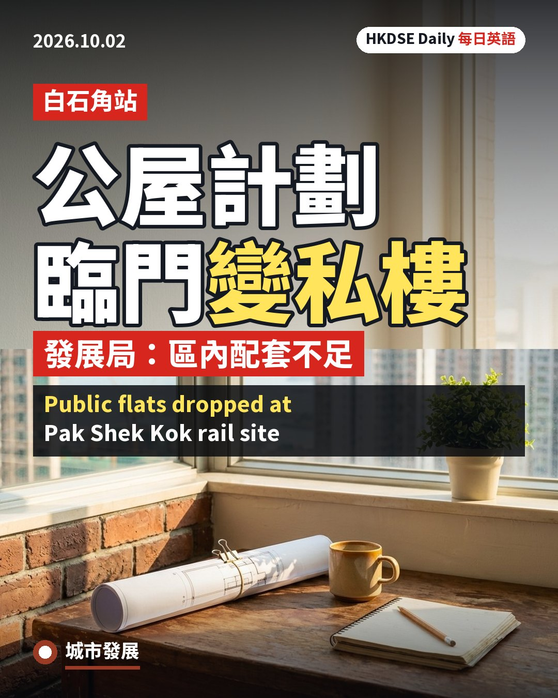

🏗Urban Dev
🌍Global Affairs
Today's top storyGlobal Affairs
Hong Kong Positions Itself as a 'Green Gateway' for Belt and Road Partners
Read story2 min read
Featured stories
Urban Dev
🎵Pop Culture
The Weeknd Debuts 'Hong Kong', a Tribute Track Sampling a Faye Wong Classic
📊Social Trends
School Bullying Cases in Hong Kong Rise 32% to Nearly 500 a Year
💰Economy
Hong Kong's IPO Boom Faces a Cornerstone Investor Cold-Feet Problem
🖥Technology
Over 1,000 Hongkongers to Trial Baidu's Robotaxis in City-First Public Scheme
🎨Arts & Media
Art or Box Office? Hong Kong Rethinks How It Funds Its Top Arts Groups
👨👩👧Family & Society
Elderly Woman's Death Sparks Calls to Better Support and Monitor Carers
🏮HK Culture
Two Projector Stands Removed From Controversial Peak Lighting Project After Public Outcry
⚖️Law & Justice
Chris Tang Pledges Legal Reforms and Full Fire Safety Accountability After Wang Fuk Court Blaze
🎓Career
Hong Kong Talent Schemes Draw 690,000 Applications, With 320,000 Already Arrived: Eric Chan
🏅Sports
HKJC Awards Over HK$5.5 Million to Celebrate Hong Kong Athletes at the Asian Para Games
The latest
🎨Arts & Media
Hermès Turns West Kowloon Freespace into Free Stage for 140-Year House Story
French luxury house Hermès has turned the Freespace black-box theatre at the West Kowloon Cultural District into a free venue for heritage storytelling , staging a…
Arts & Media24 Oct 20262 min read
🌍Global Affairs
Hong Kong Hosts APEC Finance Chiefs for First Time as Lee Pitches City as 'Super Connector'
Hong Kong this week hosted the APEC Finance Ministers' Meeting for the first time, bringing finance chiefs from across the Asia-Pacific to the city as part…
Global Affairs24 Oct 20262 min read
📊Social Trends
Viral Video of Girl, 11, Pleading for Help Sparks Child Abuse Probe in Wong Tai Sin
A disturbing video of an 11-year-old girl tearfully pleading for help while being scolded by family members in Wong Tai Sin went viral on social media…
Social Trends24 Oct 20262 min read
🌿Environment
Hong Kong Logs Hottest 'Frost' Solar Term on Record as Heatwave Lingers into Late October
Hong Kong recorded its hottest “Frost” solar term since records began in 1884, with the mercury reaching 32.3 degrees Celsius at the Observatory's Tsim Sha Tsui…
Environment24 Oct 20262 min read
🎓Career
Hong Kong's Unemployment Rate Climbs to 3.9% as Fresh Graduates Enter a Cooling Job Market
Hong Kong's unemployment rate climbed to 3.9 percent in the three months to September, according to figures released by the Census and Statistics Department on Thursday,…
Career23 Oct 20262 min read
🏥Health
Hong Kong Records Second Child Flu Death of the Season as Health Officials Renew Vaccination Call
Hong Kong's Centre for Health Protection confirmed on Wednesday that a 12-year-old girl had died after contracting influenza, becoming the second paediatric fatality of the current…
Health23 Oct 20262 min read
Social trends
Four essay angles for each trendThreadsInstagram
🎒 HK Teens' Schoolbag-Toss Game Outside the Cultural Centre Goes Viral
English
A short clip filmed from the upper deck of a passing bus has gone viralspreading very quickly online as many people share it在網上被大量分享而迅速傳播 this week, showing a group of teenage boys playing an old playground gamea simple game traditionally played by children for fun, often without special equipment傳統上供兒童消閒玩樂、通常不需特別器材的簡單遊戲 outside the Hong Kong Cultural Centre in Tsim Sha Tsui late on a Saturday night. In the footage, the boys take turns throwing their schoolbags into the air, until one bag lands awkwardly on a narrow ledge above an exterior light fixture, well out of reach.
What followed sparked most of the online reaction: one boy attempts to scaleto climb up something steep or difficult攀爬陡峭或困難的物件 the building's tiled wall to retrieve the bag, only to slide straight back down, to the amusementa feeling of finding something funny or entertaining覺得某事有趣或好笑的感覺 of his friends. The clip has drawn more than 10,000 likes within a day, with commenters flooding the post with nostalgicfeeling a sentimental longing for happy memories of the past對過去快樂時光懷有感性的思念 memories of their own childhood antics and offering half-serious rescue suggestions, from forming a human pyramid to borrowing a long pole. Whether the bag was ever recovered remains a point of friendly speculationguessing about something without having all the facts在未知全部事實下作出的猜測 online.
中文翻譯
一段從巴士上層車廂拍攝的短片本周在網上瘋傳，片中一班男學生在星期六深夜於尖沙咀香港文化中心外玩一個老派街頭遊戲。片段中幾名男生輪流將書包拋向半空，其中一個書包卻不偏不倚跌落一道燈罩上方的狹窄平台，高得難以取回。
真正引起網民熱議的，是其中一名男生嘗試攀爬建築物的瓦磚外牆去拿回書包，結果滑落回地面，惹來同伴陣陣哄笑。短片一天內已錄得超過一萬個讚好，網民紛紛留言分享自己童年的懷舊趣事，並半開玩笑地提出各種「打救」方法，由疊人梯到借長竹竿都有。書包最終有否取回，至今仍是網上一個友善的猜測話題。
DSE writing angles 寫作角度
-
Nostalgia as a generational bridge 懷舊情懷作為兩代之間的橋樑For older viewers, the clip triggered memories of simple, unsupervised street games from a less digitally mediated childhood. The warm reaction suggests many adults feel a genuine generational gap between their own upbringing and today's more structured, screen-filled childhoods, and welcome any reminder that today's teenagers still invent their own unscripted fun.對年長網民而言，這段短片喚起了他們小時候在街頭自由玩簡單遊戲、較少受數碼產品影響的童年記憶。這份溫馨反應反映不少成年人感受到自己成長經歷與今日結構化、充斥屏幕的童年生活之間確實存在代際差距，並樂見今日青少年仍能自創無劇本的歡樂。
-
A small marker of Hong Kong street culture 香港街頭文化的小小印記The Cultural Centre's waterfront promenade is itself a landmark tied to Hong Kong's public life, and the clip briefly turned an ordinary corner of the city into a shared stage for spontaneous play. Moments like this, however minor, feed a collective sense that Hong Kong's public spaces still belong to ordinary residents, not only to tourists and official events.香港文化中心的海濱長廊本身就是與本港公共生活息息相關的地標，而這段短片短暫地將城中一個平凡角落，變成大家共享、即興玩樂的舞台。類似時刻儘管微不足道，卻強化了一種集體感受：香港的公共空間仍然屬於普通市民，而非僅屬於旅客或官方活動。
-
An avoidable climbing risk, not just a joke 可避免的攀爬風險，不止是玩笑Beneath the light-hearted reaction lies a genuine safety concern: the teenager's attempt to scale a tiled exterior wall at night could easily have ended in a serious fall rather than a harmless slide. Treating the clip purely as wholesome nostalgia risks overlooking the message that recovering a lost item is never worth climbing an unstable surface for.在輕鬆反應背後，其實隱藏著真正的安全隱憂：少年夜間嘗試攀爬瓦磚外牆，結果完全可能演變成嚴重跌傷事故，而非僅僅滑落地面。若純粹將短片視為溫馨懷舊，恐怕會忽略一個重要訊息：為取回一件遺失物品而攀爬不穩固的牆面，絕對不值得冒險。
-
A trivial clip inflated into undeserved attention 被過度放大的瑣碎短片Some commentators have pushed back against the attention the clip received, arguing that a handful of teenagers larking about says little of substance about society and mainly reflects how algorithm-driven platforms reward anything mildly amusing. From this view, treating a throwaway moment as a meaningful cultural trend overstates its significance and distracts from more pressing stories.部分評論者對短片獲得的關注感到不以為然，認為幾名少年的胡鬧舉動其實反映不出甚麼社會意義，主要只顯示演算法主導的平台會獎勵任何略為搞笑的內容。從這角度看，把一段隨手拍下的瑣碎片段當成有意義的文化現象，未免言過其實，亦分散了大眾對更重要議題的注意力。
📖 Study Notes
Key Vocabulary
1
candid clip
偶然拍下的片段
"The candid clip spread across local group chats within hours of being posted."
2
street game
街頭遊戲
"Older residents fondly remember playing similar street games before digital entertainment took over."
3
bystander footage
途人拍攝片段
"Bystander footage shot from a passing bus captured the entire incident by chance."
4
comment section
留言區
"The comment section quickly filled with suggestions for how to retrieve the stranded bag."
5
harmless prank
無傷大雅的玩鬧
"Most viewers treated the stunt as a harmless prank rather than anything to worry about."
6
shared memory
共同記憶
"The clip tapped into a shared memory many Hongkongers associate with simpler school days."
7
public landmark
公共地標
"Turning a public landmark into an impromptu playground is part of what made the clip charming."
8
online speculation
網上猜測
"Online speculation over whether the bag was retrieved kept the thread active for days."
9
copycat attempt
模仿行為
"Teachers worry a copycat attempt elsewhere could end with someone actually getting hurt."
10
momentary fame
短暫的知名度
"The boys gained a kind of momentary fame without ever being formally identified."
Quick Reference — Phrases & Sample Sentences
| Phrase / Expression | 釋義 | DSE Sample Sentence |
|---|---|---|
| turn an ordinary evening into online entertainment | 把平凡的夜晚變成網上娛樂 | A single lucky camera angle can turn an ordinary evening into online entertainment for thousands of strangers. |
| say more about the viewers than the subjects themselves | 反映觀眾自身多於片中人物 | The wave of nostalgic comments arguably says more about the viewers than the subjects themselves. |
| romanticise a moment that could have ended badly | 把一個本可釀成意外的時刻浪漫化 | Treating the climb as endearing risks romanticising a moment that could have ended badly. |
| spread faster than any official account of events | 比任何官方說法傳播得更快 | An unverified clip like this can spread faster than any official account of events. |
| reward whatever feels mildly amusing in the moment | 獎勵任何一刻顯得稍為有趣的內容 | Critics argue algorithms simply reward whatever feels mildly amusing in the moment, regardless of substance. |
| stand in for a wider mood rather than a single event | 代表一種普遍情緒而非單一事件 | The clip's popularity may stand in for a wider mood of nostalgia rather than reflect a single remarkable event. |
| fade from attention within a matter of days | 在短短幾天內被大眾遺忘 | Like most viral clips, this one will likely fade from attention within a matter of days. |
| offer a harmless outlet for collective nostalgia | 為集體懷舊提供一個無害的出口 | Light-hearted viral moments like this offer a harmless outlet for collective nostalgia. |
| raise a safety point that is easy to brush aside | 帶出一個容易被忽略的安全議題 | Beneath the humour, the clip does raise a safety point that is easy to brush aside. |
| blur the boundary between private mischief and public spectacle | 模糊了私下胡鬧與公開表演之間的界線 | Being filmed without consent blurs the boundary between private mischief and public spectacle for the teenagers involved. |
✏️ My Notes
to save personal notes for this article
DOUYINThreads
📱 Filmed Without Asking: MTR Livestream Sparks a Privacy Backlash
English
A Hong Kong commuter's social media post has ignited a wave of anger this week after she accused a Douyin livestreamer of filming seated MTR passengers without their consentpermission freely given for something to happen同意, broadcasting their faces to an account with more than 1,000 followers. According to her account, which quickly spread across Threads, the streamer kept the camera rolling even after a passenger objected, continuing to talk loudly on the phone throughout the journey. The account in question mostly posts cheerful, slice-of-life clips of Hong Kong food and daily routines, the kind of content that has turned ordinary commutes into unpaid backdrops for someone else's content hustlethe effort of constantly producing material, often for money or attention內容創作搏殺.
The backlash reflects growing unease over where exactly the boundary sits between public space and private bystanders'people who happen to be nearby when something is filmed, without choosing to take part途人；旁觀者 dignity. Commenters have pointed out that MTR by-laws already restrict obstructive filming, yet enforcement rarely keeps pace with the sheer volume of creators chasing engagementlikes, comments, shares and other signs that an audience is reacting to content互動反應 across platforms. Some see the public shaming of the streamer online as a healthy form of accountability; others worry it is an imperfect substitutesomething used in place of a proper solution, even though it does not fully solve the problem並不完美的替代方案 for actual regulatory enforcement.
中文翻譯
本週，一名香港乘客在社交媒體發文，指控一名抖音直播主未經車廂內乘客同意便進行拍攝，並將他們的樣貌直播給一個擁有逾千名粉絲的帳戶，貼文迅速在Threads瘋傳，引發廣泛不滿。根據她的描述，即使有乘客表示反對，該直播主仍繼續開着鏡頭，並在全程大聲講電話。涉事帳戶主要發佈輕鬆的香港飲食及日常生活片段，這類內容正把尋常的通勤變成別人內容創作搏殺的免費場景。
這場反彈反映出公眾日益關注公共空間與途人個人尊嚴之間的界線應劃在何處。有網民指出，港鐵附例本已限制妨礙性拍攝行為，但執法往往追不上各平台創作者為追逐互動反應而不斷湧現的拍攝風潮。有人認為網上公開指責該直播主，是一種健康的問責方式；但亦有人擔心，這只是對真正監管執法的並不完美的替代方案。
DSE writing angles 寫作角度
-
Consent as the Missing Norm in Platform Culture 同意：平台文化中缺失的準則Livestreaming turns any public space into a potential stage, but the people who happen to be nearby rarely get a say in whether their face ends up online. Students could ask whether Hong Kong's privacy rules, written for an earlier media era, still adequately protect bystanders who never agreed to appear in someone else's content.直播把任何公共空間都變成潛在舞台，但碰巧身處現場的人卻幾乎沒有機會決定自己的樣貌是否要在網上曝光。學生可以探討，香港那些為舊時代媒體而設的私隱規例，是否仍足以保障從未同意出現在他人內容中的途人。
-
Livestreaming as a Grassroots Income Hustle 直播作為草根創作者的搵食手段For many small creators, filming ordinary city life is less about artistry than survival, since followers and tips can translate directly into income. That pressure helps explain why some streamers keep recording after being asked to stop, raising how far monetisation should override other people's basic comfort in public.對許多小型創作者而言，拍攝城市日常生活與其說是藝術創作，更貼近一種求生手段，因為粉絲數字及打賞往往能直接轉化為收入。這種經濟壓力有助解釋，為何部分直播主即使被要求停止，仍繼續拍攝，由此引申出一個問題：將內容變現的考量，應在多大程度上凌駕於他人在公共場所的基本自在？
-
Cross-Border Content Norms Colliding on the MTR 跨境內容創作習慣在港鐵碰撞Much of the unease is not only about filming itself but about whose everyday behaviour counts as 'normal' on shared public transport. When creators raised on a different platform ecosystem bring filming habits that feel intrusive to long-time commuters, the friction becomes a small but telling flashpoint for broader anxieties about shifting norms in shared public spaces.這場不安，並不只是關於拍攝本身，而是關乎港鐵車廂這個共享空間內，怎樣的日常行為才算「正常」。當在不同平台生態下成長的創作者，帶着令本地長期通勤者感到被侵犯的拍攝習慣登上車廂，這種摩擦便成為反映公共空間規範轉變所引發更廣泛焦慮的一個小小、卻具代表性的爆發點。
-
Online Shaming vs Real Regulatory Fixes 網上公審對比真正的監管改革Public shaming can feel satisfying and may deter one individual streamer, but it does little to fix the underlying gap: by-law enforcement on public transport is inconsistent, and most creators who film strangers never face any consequence at all. A counter-argument worth considering is that outrage cycles on social media substitute for, rather than drive, the policy change actually needed.網上公開指責或許令人感到痛快，亦可能嚇怕個別直播主，但對修補問題根源作用有限：港鐵附例的執法本身並不一致，而大部分拍攝陌生人的創作者根本從未被追究。值得思考的反論是，社交媒體上一輪又一輪的公眾怒火，往往取代了——而非真正推動了——實際所需的政策改革。
📖 Study Notes
Key Vocabulary
1
consent
同意
"Filming someone without consent can feel like a violation even in a public space."
2
bystander
途人
"Bystanders rarely expect to end up as unwilling extras in someone's livestream."
3
livestream
直播
"The livestream racked up views within minutes of being posted."
4
engagement
互動反應
"Chasing engagement sometimes pushes creators to cross ethical lines."
5
by-law
附例
"MTR by-laws already ban certain types of disruptive filming."
6
monetise
變現
"Creators monetise ordinary moments by turning them into viral clips."
7
content hustle
內容創作搏殺
"The content hustle leaves little time to consider who else appears on camera."
8
public shaming
公開指責
"Public shaming spread quickly once screenshots of the post went viral."
9
enforcement gap
執法缺口
"The case exposed an enforcement gap that regulators have yet to close."
10
unwanted exposure
不情願的曝光
"Being filmed without consent can lead to unwanted exposure online."
Quick Reference — Phrases & Sample Sentences
| Phrase / Expression | 釋義 | DSE Sample Sentence |
|---|---|---|
| cross an invisible line | 跨過一條無形界線 | Many felt the streamer had crossed an invisible line between content and intrusion. |
| turn strangers into unwilling extras | 把陌生人變成不情願的配角 | The livestream turned ordinary commuters into unwilling extras in someone else's video. |
| chase clicks at someone else's expense | 以他人為代價追逐流量 | Critics accused the streamer of chasing clicks at someone else's expense. |
| spark a reckoning over online etiquette | 引發對網絡禮儀的反思 | The incident sparked a reckoning over online etiquette on public transport. |
| blur the line between public and private | 模糊公共與私人的界線 | Livestreaming from crowded trains blurs the line between public and private space. |
| outpace the rules meant to contain it | 發展速度超越監管規則 | Platform culture keeps outpacing the rules meant to contain it. |
| go viral for the wrong reasons | 因錯誤原因而爆紅 | The account went viral for the wrong reasons after the complaint surfaced. |
| demand accountability from content creators | 要求內容創作者承擔責任 | Commenters are demanding accountability from content creators who ignore objections. |
| expose a gap between law and practice | 揭示法律與實際執行之間的差距 | The episode exposed a gap between what by-laws say and how they are enforced. |
| normalise being filmed without asking | 使未經同意被拍攝變得「正常化」 | Some worry constant livestreaming is slowly normalising being filmed without asking. |
✏️ My Notes
to save personal notes for this article
Threads
🎮 Retro Browser-Game Revival: Threads Users Build Their Own HK Cha Chaan Teng Sims
English
A wave of homemade, retro-style browser mini-games has swept across Threads over the past week, sending Hong Kong users on a nostalgia tripan experience that evokes fond memories of the past懷舊之旅 back to the clunky Flash games of the 2000s. Independent developers, many of them hobbyists rather than studios, have been churning out simple cooking, restaurant-management and arcade-style titles, including a Hong Kong-themed restaurant simulator that lets players run a virtual cha chaan teng, juggling orders for milk tea and pineapple buns under a ticking clock.
The craze has an unmistakably local flavour. Threads users have been swapping memories of childhood favourites such as “HK Cafe”, a cha-chaan-teng-themed Flash game by veteran Hong Kong cartoonist Ma Chai, alongside related titles set in a dai pai dong food stall and a traditional tea house. Fan-run websites have sprung up almost overnight to aggregateto gather many separate items into a single collection匯集；整合 dozens of these new browser games in one place, making it easy for curious users to binge-play titles made by strangers across the city. The trend arrives alongside a separate, ongoing wave of nostalgia for real-world cha chaan teng, with old-school tea restaurants in Wan Chai drawing fresh social media attention as filming locations for classic Hong Kong films.
中文翻譯
過去一週,大量由網民自製、懷舊風格的網頁小遊戲在Threads上爆紅,帶領香港用戶展開一場懷舊之旅,重返二千年代那些笨拙的Flash遊戲時光。不少獨立開發者——當中大多是業餘愛好者而非正式工作室——陸續推出簡單的煮食、餐廳經營及街機式小遊戲,包括一款香港主題的餐廳模擬遊戲,讓玩家經營一間虛擬茶餐廳,在限時之內忙於應付奶茶及菠蘿包的訂單。
這股熱潮帶有鮮明的本地色彩。Threads用戶紛紛分享童年回憶,例如由香港資深漫畫家馬仔創作、以茶餐廳為主題的Flash遊戲《HK Cafe》,以及以大排檔和傳統茶坊為場景的相關作品。多個由網民自發營運的網站幾乎一夜之間湧現,用以匯集數十款這類新興網頁遊戲,方便用戶輕鬆暢玩陌生網民創作的作品。這股潮流與另一股正在蔓延的真實茶餐廳懷舊風潮同時出現,灣仔一些老式茶餐廳近日因為曾作經典港產片拍攝場地,在社交媒體上重新受到關注。
DSE writing angles 寫作角度
-
Cha Chaan Teng Nostalgia as a Marker of HK Identity 茶餐廳懷舊作為香港身份的標記Recreating a cha chaan teng in pixelated form lets young users perform a kind of digital homecoming, asserting a shared local identity through food culture even as the city's dining scene grows more globalised. Students could explore why such small, everyday spaces, rather than grand monuments, so often become the emotional shorthand for what feels distinctly Hong Kong.以像素畫面重現茶餐廳,讓年輕用戶透過飲食文化進行一種數碼式的「回鄉」,在飲食選擇日趨全球化的城市中,肯定共同的本地身份。學生可藉此探討為何這類微小的日常空間,而非宏偉的地標建築,往往成為「香港味道」的情感速記符號。
-
Grassroots Creativity Outside the App Store Economy 脫離應用程式商店經濟的草根創意Unlike most viral content, these games are built and shared for free outside the usual app-store or influencer economy, run by hobbyist coders rather than companies chasing advertising revenue. This raises questions about whether such low-stakes, non-commercial creativity can survive once bigger platforms notice the trend and attempt to monetise it.與大部分病毒式內容不同,這些遊戲在一般應用程式商店或網紅經濟以外被免費開發及分享,由業餘程式愛好者而非追求廣告收益的公司製作。這引發一個問題:當大型平台注意到這股潮流並嘗試將其商業化後,這種低風險、非商業性的創意能否繼續生存。
-
A Counter-Argument: Nostalgia as a Distraction From Present Problems 反方觀點:懷舊只是逃避現實問題的消遣Sceptics argue that spending hours recreating a decades-old cha chaan teng online is an escapist indulgence that distracts young people from pressing present-day concerns, from housing costs to career anxiety, rather than engaging with them directly. On this view, viral nostalgia offers comfort but little else of lasting value.質疑者認為,花上大量時間在網上重現數十年前的茶餐廳,只是一種逃避現實的消遣,令年輕人忽略了住屋成本以至事業焦慮等當前迫切問題,而非直接面對它們。按此觀點,病毒式懷舊帶來的只是短暫安慰,缺乏持久的價值。
-
Media Literacy in an Age of Anonymous Fan Aggregator Sites 匿名迷因整合網站時代的媒體素養The rapid appearance of unofficial websites collecting dozens of strangers' games, with no clear ownership, moderation or safety checks, raises practical questions about what users unknowingly click, download or share while chasing a nostalgic trend. Students could weigh how media literacy habits need to extend beyond news articles to include casual, seemingly harmless viral content.大量來源不明、缺乏清晰擁有者、審核或安全檢查的非官方網站,一夜間湧現,集合數十款陌生網民製作的遊戲,這引發一個實際問題:用戶在追逐懷舊潮流時,到底在不知不覺間點擊、下載或分享了甚麼。學生可藉此思考,媒體素養的習慣除了新聞報道外,亦需延伸至看似無害的隨意病毒式內容。
📖 Study Notes
Key Vocabulary
1
nostalgia trip
懷舊之旅
"The new browser games sent many users on an unexpected nostalgia trip."
2
aggregate
匯集；整合
"A fan-run website now aggregates dozens of the viral mini-games in one place."
3
hobbyist developer
業餘開發者
"Most of the games were made by hobbyist developers rather than professional studios."
4
retro aesthetic
懷舊美學
"The games deliberately copy the retro aesthetic of early-2000s Flash websites."
5
grassroots creativity
草根創意
"The trend is a rare example of grassroots creativity spreading without any marketing budget."
6
escapist indulgence
逃避現實的消遣
"Critics dismissed the craze as a harmless but shallow escapist indulgence."
7
digital homecoming
數碼式回鄉
"Playing the cha chaan teng game felt like a small digital homecoming for many users."
8
fan aggregator site
粉絲整合網站
"An anonymous fan aggregator site collected every game mentioned in the trend."
9
low-stakes creativity
低風險創意
"Commentators praised the low-stakes creativity behind these free, ad-free games."
10
shared local identity
共同的本地身份
"Food-themed games can express a shared local identity better than grand landmarks."
Quick Reference — Phrases & Sample Sentences
| Phrase / Expression | 釋義 | DSE Sample Sentence |
|---|---|---|
| strike a nostalgic chord | 觸動懷舊情懷 | The pixelated cha chaan teng game struck a nostalgic chord with thousands of users. |
| outside the usual commercial playbook | 脫離慣常的商業運作模式 | These hobbyist games operate outside the usual commercial playbook of app stores. |
| risk being swallowed by commercialisation | 面臨被商業化吞噬的風險 | Grassroots trends like this risk being swallowed by commercialisation once brands notice. |
| offer comfort without substance | 提供安慰卻缺乏實質內容 | Sceptics argue the trend offers comfort without substance for its young audience. |
| click first, question later | 先點擊,後質疑 | Media literacy experts worry users click first, question later when chasing viral games. |
| repackage everyday food culture | 重新包裝日常飲食文化 | The games repackage everyday food culture into something playful and shareable. |
| a low barrier to creative participation | 創作參與的低門檻 | Simple browser games offer a low barrier to creative participation for amateur coders. |
| sidestep the pressures of modern life | 暫時避開現代生活的壓力 | For a few minutes, players can sidestep the pressures of modern life through nostalgic play. |
| an unregulated corner of the internet | 缺乏監管的網絡角落 | Fan aggregator sites represent an unregulated corner of the internet that spreads quickly. |
| turn memory into gameplay | 將記憶轉化為遊戲體驗 | Developers have found clever ways to turn collective memory into simple gameplay. |
✏️ My Notes
to save personal notes for this article
FACEBOOK
🐀 Rat Pack Caught on Camera at Tai Kok Tsui Park Sparks Clean-Up Demand
English
A short clip showing about ten rats scurrying around Cherry Street Park in Tai Kok Tsui went viral on local Facebook groups this week, reigniting complaints about a rodent infestationa situation in which an area is overrun by rats or mice鼠患 that residents say has lingered for years. Neighbours in the clip's comments blamed the illegal feeding of pigeonsgiving food to pigeons in a public place where it is prohibited by law違例餵飼野鳩 inside the park for leaving behind food scraps that, they argued, continue to attract rats despite repeated complaints to the district's environmental hygiene office.
After the video spread, the Food and Environmental Hygiene Department inspected the park alongside a district councillor and confirmed signs of rat activity, including several burrows found in the park's flower beds, which officials described as a health hazarda condition or object that poses a risk of illness or injury衞生隱患. The department issued a formal notice to abatean official order requiring someone to remove or correct a nuisance within a set time消除蟲鼠通知 under the Public Health and Municipal Services Ordinance, giving its pest control contractora company hired to remove or control insects, rodents or other unwanted creatures滅鼠承辦商 until 3 November to eliminate conditions conducive to rats, warning that a default notice would follow if the work was unsatisfactory, given the park's status as a known black spota location officially recognised as having a recurring or severe version of a particular problem已知黑點 for rodents since at least 2024.
中文翻譯
一段短片顯示約十隻老鼠在大角咀櫻桃街公園內四處走動，本週在本地Facebook社區群組瘋傳，再次引起居民對公園內鼠患問題的不滿，指情況已持續多年。片段留言區有街坊指出，公園內有人違例餵飼野鳩，遺下大量食物殘渣，認為這正是即使屢次向區內環境衞生部門投訴，老鼠仍不斷聚集的原因。
短片流傳後，食物環境衞生署聯同區議員一同巡查公園，確認有老鼠出現的跡象，包括在多個花槽發現鼠洞，署方形容情況構成衞生隱患。食環署根據《公眾衞生及市政條例》發出正式的消除蟲鼠通知，要求其滅鼠承辦商在十一月三日前除去可致鼠患的因素，並警告若表現不理想，將發出失責通知書；該公園自二零二四年區議會資料顯示起，已被列為鼠患的已知黑點。
DSE writing angles 寫作角度
-
Reactive, video-driven enforcement 由短片驅動的被動執法The department only inspected Cherry Street Park once the clip had gathered public attention, despite the area being flagged as a rodent black spot in 2024 district council papers. Enforcement that follows viral exposure, rather than scheduled monitoring, raises doubts about whether known problem sites receive adequate routine attention before residents feel compelled to film evidence themselves.食環署僅在短片引起公眾關注後，才對櫻桃街公園展開巡查，儘管該處早於二零二四年區議會文件中已被列為鼠患黑點。這種待短片引起關注才執法、而非定期監察的做法，令人質疑已知的問題地點，在居民被迫自行拍片曝光之前，是否得到足夠的日常跟進。
-
Blame falls on anonymous pigeon-feeders, not shared upkeep 責任歸咎於匿名餵鳥者而非共同維護責任Online commenters quickly singled out unnamed pigeon-feeders as the sole cause of the rat problem, rather than treating the park's upkeep as a shared neighbourhood responsibility. Framing the issue around a convenient, faceless villain lets residents vent frustration without confronting harder questions about littering, irregular refuse collection, or whether anyone reports problems early enough to prevent them escalating.網上留言迅速將責任全歸咎於不知名的餵鳥者，而非將公園的維護視為社區共同的責任。將問題簡化為一個方便、不具名的「元兇」，讓居民得以宣洩不滿，卻無需面對更棘手的問題，例如亂拋垃圾、垃圾收集安排是否不定時，或者居民是否有及早舉報問題，以免事件惡化。
-
Rats beside a children's play area raise a disease risk 鼠患與兒童遊樂設施相鄰帶來的衞生風險Cherry Street Park includes play equipment used daily by young children, and rodents are known carriers of diseases such as leptospirosis, spread through contaminated soil or surfaces. A rat colony nesting in flower beds metres from where children play turns an apparent nuisance into a genuine public-health concern deserving faster action than a single clean-up notice.櫻桃街公園設有供兒童日常使用的遊樂設施，而老鼠是鈎端螺旋體病等疾病的已知傳播者，可透過受污染的泥土或表面傳播。鼠群在距離兒童遊玩地點僅數米的花槽築巢，令看似輕微的滋擾，變成需要比一張清理通知更迅速處理的真正公共衞生隱患。
-
A ten-second clip may overstate a routine, already-managed problem 十秒短片或誇大了一個本已受控的日常問題A brief video filmed from one angle cannot show how often the park is normally inspected, and the department's swift response suggests existing monitoring was not entirely absent. Treating every viral clip as proof of official neglect risks diverting limited pest-control resources toward whichever problem trends online that week, rather than toward the locations that genuinely pose the greatest risk.一段從單一角度拍攝的短片，並不能反映公園日常巡查的頻率，而食環署迅速回應亦顯示現行監察並非完全缺失。若將每段瘋傳短片都視為官方失職的證據，有可能令本已有限的滅鼠資源，被導向當週網上熱議的地點，而非真正風險最高的地方。
📖 Study Notes
Key Vocabulary
1
rodent infestation
鼠患
"Residents said the rodent infestation in the park had never been fully resolved despite years of complaints."
2
illegal feeding
違例餵飼
"Illegal feeding of pigeons in public parks often leaves behind scraps that attract other pests."
3
health hazard
衞生隱患
"Officials described the uncontrolled rat activity as a genuine health hazard to park visitors."
4
notice to abate
消除蟲鼠通知
"The department issued a notice to abate, giving the contractor a strict deadline to clear the rat burrows."
5
pest control contractor
滅鼠承辦商
"The pest control contractor was ordered to remove anything likely to attract rats within two weeks."
6
known black spot
已知黑點
"The park has been a known black spot for rats since at least 2024, according to district council records."
7
flower bed burrow
花槽鼠洞
"Inspectors found several flower bed burrows after walking through the park with a district councillor."
8
statutory ordinance
法定條例
"The notice was issued under a statutory ordinance that allows the department to compel action from contractors."
9
default notice
失責通知書
"A default notice would follow if the contractor failed to meet the clean-up deadline."
Quick Reference — Phrases & Sample Sentences
| Phrase / Expression | 釋義 | DSE Sample Sentence |
|---|---|---|
| force an overdue response from officials | 迫使官方作出遲來的回應 | The viral clip forced an overdue response from officials who had ignored earlier complaints. |
| expose a long-standing blind spot in municipal upkeep | 揭露市政管理長期存在的盲點 | The footage exposed a long-standing blind spot in municipal upkeep that routine inspections had missed. |
| hold a contractor to a firm deadline | 要求承辦商遵守明確限期 | Authorities moved to hold the contractor to a firm deadline rather than accept vague assurances. |
| turn a neighbourhood nuisance into a viral story | 將社區滋擾問題變成網上熱話 | A single short video can turn a neighbourhood nuisance into a viral story within hours. |
| underline the gap between policy and practice | 凸顯政策與實際執行之間的差距 | Repeated complaints before the video surfaced underline the gap between policy and practice at district level. |
| shift blame onto an unnamed culprit | 將責任轉嫁至不知名的人 | Commenters were quick to shift blame onto an unnamed culprit feeding the pigeons rather than examine wider upkeep failures. |
| treat social media exposure as a substitute for routine inspection | 將社交媒體曝光視為日常巡查的替代品 | Critics argue the city should not treat social media exposure as a substitute for routine inspection. |
| settle for a short-term fix rather than a lasting solution | 滿足於短期應急措施而非長遠解決方案 | Residents fear the department will settle for a short-term fix rather than a lasting solution to the rat problem. |
| test public trust in the agency responsible | 考驗公眾對負責部門的信任 | Each recurrence of the same problem further tests public trust in the agency responsible for hygiene enforcement. |
✏️ My Notes
to save personal notes for this article
INSTAGRAMTikTok
💉✨ Hong Kong's 'Cadaver Skin' Beauty Jab Trend Triggers Health Crackdown
English
A skincare treatment known online as the 'cadaver skin jab' has become one of the most talked-about beauty trends among Hong Kong's anti-ageing crowd this month, promoted through glossy social media posts and promises of 'structural replenishmenta marketing term implying the restoration of skin's underlying support structure結構性修復' for sagging skin. The product, Elravie Re2O, is derived from processed human tissue sourced from deceased donors and marketed as a premium alternative to conventional collagen boosters, typically priced at around HK$3,480 per session, a figure that did little to dampen demandfailed to reduce people's desire to buy something未能減低需求 once influencers began endorsing it.
The buzz came to an abrupt haltstopped very suddenly and unexpectedly突然被打斷 this week when the Department of Health and police raided four beauty establishments across different districts, seizingofficially taking possession of something, usually as evidence or because it is illegal檢獲 20 vials of the product along with more than 70 other unregistered injectables. Investigators found that several sellers had failed to clearly disclosedid not openly and plainly reveal important information未有清楚披露 the human-derived origin of the treatment, and that at least one premises offered the jab without a doctor present, prompting fresh questions about how such trends spread uncheckedgrew and expanded without being controlled, monitored or stopped不受約束地蔓延 before regulators catch up, and how many similar products remain undetected.
中文翻譯
一款網上稱為「屍皮針」的護膚療程,本月成為香港抗衰老愛好者之間熱議的美容趨勢,透過精美的社交媒體帖文宣傳,聲稱能為鬆弛皮膚帶來「結構性修復」效果。該產品名為Elravie Re2O,由已故捐贈者的人體組織加工製成,被包裝為傳統膠原蛋白療程的升級版本,每次療程收費約3,480港元,但這個價錢未能減低需求,反而在網紅紛紛代言後愈見熱烈。
然而,這股熱潮本周突然被打斷:衞生署及警方聯合突擊搜查四間位於不同地區的美容機構,檢獲20支上述產品,以及超過70件其他未經註冊的注射劑。調查發現,部分銷售者未有清楚披露療程涉及人體組織來源,其中至少一間店舖在沒有醫生在場的情況下,為顧客注射該產品,事件亦引來外界質疑,這類潛在風險趨勢為何總能在監管機構介入前已不受約束地蔓延,以及還有多少類似產品尚未被發現。
DSE writing angles 寫作角度
-
Unregulated injectables slipping past safety checks 未受規管的注射劑避開安全檢查The raids exposed how easily unlicensed clinics can obtain and administer invasive cosmetic products without proper medical oversight. Students could examine how gaps in enforcement, rather than the absence of regulation itself, allow risky treatments to reach consumers, and argue for stricter inspection regimes at the point of sale rather than after harm occurs.這次搜查行動,揭示未獲許可的美容院能何其輕易地取得並施行具侵入性的美容產品,而缺乏適當的醫療監督。學生可以探討,問題在於執法上的漏洞,而非缺乏規管本身,讓高風險療程得以流入消費者手中,並倡議在銷售點實施更嚴格的檢查制度,而非待損害發生後才作出反應。
-
Dual regulatory gap between transplant and pharmaceutical law 器官移植與藥物法例之間的雙重監管缺口Because the product straddles organ-donation rules and medicine regulations, authorities only acted after public complaints rather than through routine monitoring. This case offers material for discussing how overlapping legal categories can create blind spots, and whether Hong Kong needs a single, clearer licensing pathway for tissue-derived cosmetic products.由於該產品橫跨器官捐贈法規及藥物規例兩個範疇,當局僅在接獲公眾投訴後才採取行動,而非透過日常監察發現問題。此案例可用於探討,重疊的法律類別如何形成監管上的盲點,以及香港是否需要就人體組織衍生的美容產品,訂立一條單一而更清晰的審批途徑。
-
Influencer marketing obscuring a product's true origin 網紅營銷掩蓋產品的真正來源Sellers reportedly described the injection only as 'human collagen', omitting that it derives from cadaver tissue, a disclosure gap that online promotion made easy to overlook. Students could explore how curated beauty content on social media discourages consumers from questioning a product's actual composition before paying for it.賣家據報僅將這種注射劑描述為「人類膠原蛋白」,隱去其源自屍體組織的事實,這種披露缺口,因社交媒體上經過精心包裝的美容內容而更容易被忽略。學生可以探討,這類內容如何令消費者在付款前,少加質疑產品的真正成分。
-
Demand reflects legitimate anti-ageing need, not mere vanity 需求反映真正的抗衰老需要,而非單純愛美Critics who dismiss users as reckless overlook that ageing skin concerns are a genuine, widespread issue, and that many buyers sought a seemingly advanced option rather than acting frivolously. A counter-argument holds that the real failure lies with inadequate consumer protection, not with individuals seeking effective skincare solutions.批評使用者輕率的人,忽略了皮膚衰老問題其實是普遍而真實的關注,許多買家只是在尋求一種看似先進的方案,而非魯莽行事。反論認為,真正的失誤在於消費者保障不足,而不在於個人追求有效護膚方案本身。
📖 Study Notes
Key Vocabulary
1
a premium alternative
升級替代方案
"The product was marketed as a premium alternative to conventional collagen boosters."
2
a glossy marketing campaign
精美的宣傳攻勢
"A glossy marketing campaign helped the treatment spread quickly among beauty enthusiasts."
3
raid a premises
突擊搜查店舖
"Health inspectors raided four premises suspected of selling unregistered injectables."
4
an unregistered injectable
未經註冊的注射劑
"Officers seized more than 70 unregistered injectables during the operation."
5
fail to disclose a product's origin
未能披露產品來源
"Sellers reportedly failed to disclose the product's human-derived origin to customers."
6
administer a treatment without medical supervision
在沒有醫療監督下施行療程
"At least one premises administered the treatment without medical supervision present."
7
a regulatory blind spot
監管上的盲點
"Overlapping legal categories can create a regulatory blind spot that lets risky products slip through."
8
gaps in enforcement
執法上的漏洞
"Gaps in enforcement, rather than the absence of regulation itself, often allow risky treatments to reach consumers."
9
a genuine anti-ageing concern
真正的抗衰老需要
"Critics should not dismiss ageing skin as a genuine anti-ageing concern many people reasonably want addressed."
10
inadequate consumer protection
消費者保障不足
"The real failure may lie with inadequate consumer protection rather than individual choices."
Quick Reference — Phrases & Sample Sentences
| Phrase / Expression | 釋義 | DSE Sample Sentence |
|---|---|---|
| gaps in enforcement, rather than the absence of regulation itself | 問題在於執法上的漏洞,而非缺乏規管本身 | Students could examine how gaps in enforcement, rather than the absence of regulation itself, allow risky treatments to reach consumers. |
| stricter inspection regimes at the point of sale | 在銷售點實施更嚴格的檢查制度 | A student essay could argue for stricter inspection regimes at the point of sale rather than after harm occurs. |
| a product straddling two different regulatory categories | 一項產品橫跨兩個不同的規管類別 | Because the product straddles organ-donation rules and medicine regulations, enforcement became unusually difficult. |
| authorities only acted after public complaints | 當局僅在接獲公眾投訴後才採取行動 | This case shows authorities only acted after public complaints rather than through routine monitoring. |
| whether a single, clearer licensing pathway is needed | 是否需要一條單一而更清晰的審批途徑 | This offers material for discussing whether Hong Kong needs a single, clearer licensing pathway for such products. |
| curated content discourages consumers from questioning composition | 經過精心包裝的內容令消費者少加質疑成分 | Students could explore how curated beauty content discourages consumers from questioning a product's actual composition. |
| overlooks that ageing concerns are a genuine, widespread issue | 忽略了衰老問題其實是普遍而真實的關注 | Critics who dismiss users as reckless overlook that ageing skin concerns are a genuine, widespread issue. |
| the real failure lies with inadequate consumer protection | 真正的失誤在於消費者保障不足 | A counter-argument holds that the real failure lies with inadequate consumer protection, not with individuals seeking effective skincare. |
| a disclosure gap that online promotion made easy to overlook | 網上宣傳令人容易忽略的披露缺口 | Omitting the cadaver-tissue origin left a disclosure gap that online promotion made easy to overlook. |
| how many similar products remain undetected | 還有多少類似產品尚未被發現 | The raid raises an unsettling question about how many similar products remain undetected across the city. |
✏️ My Notes
to save personal notes for this article
ThreadsInstagram
😡📱 Viral 'Family Discipline' Alley Beating Clip Ignites Vigilante Justice Debate
English
A short video showing a teenager being knocked to the ground and repeatedly slapped in a Hong Kong alley, while three bystanders stood by and did nothing, has become one of the most argued-overdiscussed with strong disagreement between different sides爭論不休的 clips on local social media this week. The man seen attacking the teenager wore a cap and struck him both with an open hand and on the head, all while shouting at him; the person who uploaded the footage gave no account of when or where it happened, captioning it only as 'time for family discipline', language that immediately split opiniondivided people's views sharply into opposing sides令意見分裂 between viewers who assumed it showed a parent disciplining a wayward child and those who saw nothing but an unprovoked assault dressed up in more acceptable-sounding wordsdescribed using softer or more respectable language to make something seem less objectionable以較順耳的字眼包裝.
The ambiguity is precisely what has kept the clip circulatingcaused a video to continue being shared and viewed by more people令片段持續流傳. Commenters have pressed the uploader to explain who the attacker was and whether anyone had reported the incident to police, while others have pointed out that filming and sharing an assault, rather than intervening or calling for help, risks normalising violence as a spectator sportmaking it seem ordinary or acceptable to watch violence purely as entertainment將暴力常態化為觀賞活動. With neither the people involved nor the exact circumstances ever confirmed, the clip has become less a single verified incident than a mirror for whatever assumptionssomething that reflects back people's existing beliefs rather than providing new, objective information映照既有假設的一面鏡子 viewers already hold about discipline, masculinity and family authority in Hong Kong.
中文翻譯
一段片段顯示,一名少年在香港一條後巷內被推倒在地並遭多次掌摑,三名途人在場卻無人阻止,片段近日成為本地社交媒體上爭論不休的話題。片中一名戴着帽子的男子衝向少年,用手掌及拳頭擊打其頭部,同時高聲喝罵;上載片段者並未透露事發的時間或地點,僅以「教仔」(家庭教訓)作為描述——這種說法,立即令意見分裂:有人假設片中情景只是家長教訓頑劣子女,亦有人則認為,這純粹是一宗以較順耳字眼包裝的無故襲擊事件。
正是這種模糊性,令片段持續流傳。有網民追問上載者,片中施襲者的身份,以及事件有否已經報警;另有網民則指出,目擊襲擊卻只顧拍片上載、而非上前阻止或求助,恐會將暴力常態化為觀賞活動。由於片中人物身份及事發經過始終未獲證實,這段片段與其說是一宗經核實的單一事件,倒更似映照既有假設的一面鏡子,反映香港社會對「教養」、「男子氣概」與「家長權威」各自既有的假設與想像。
DSE writing angles 寫作角度
-
Filming an assault instead of stopping it 選擇拍攝襲擊而非加以阻止Three onlookers watched the beating unfold yet none intervened or called for help; the footage exists only because someone chose to film rather than act. A Paper 2 essay could ask whether smartphones have quietly replaced a moral duty to help a stranger with a reflex to document them instead, and what that substitution costs a community.三名途人目睹整個打鬥過程卻無人介入或求助;這段片段之所以存在,正是因為有人選擇拍攝而非採取行動。Paper 2文章可以追問,智能電話是否已悄悄將幫助陌生人的道德責任,換成了單純記錄的反射動作,而這種取代,又令社區付出了甚麼代價。
-
'Family discipline' as a euphemism that reframes violence 「家庭教訓」作為重新定義暴力的委婉說法Calling the beating 'family discipline' let the uploader present unverified, uncontextualised violence as something socially acceptable, without ever confirming who the people involved were. Students could explore how a single caption can steer thousands of viewers toward forgiving, or even endorsing, an act they would otherwise condemn, and why audiences rarely demand evidence before reacting.將這場打鬥稱為「教仔」,讓上載者能夠將未經核實、脫離背景的暴力行為,包裝成社會上較能接受的說法,卻始終未有確認片中涉事人物的身份。學生可以探討,一句說明文字,如何足以引導數千名觀眾去原諒,甚至認可一項他們在其他情況下會加以譴責的行為,以及為何觀眾甚少在作出反應之前要求證據。
-
Calling it discipline doesn't exempt it from assault law 稱之為教訓,並不能使其豁免於襲擊法例However the clip was captioned, repeatedly striking a minor's head in public meets the legal threshold for assault, regardless of any claimed disciplinary motive. An essay could examine why online audiences debated the footage for days while seemingly few considered reporting it, and what that says about public reliance on formal authorities.無論片段如何被配上說明文字,在公眾場所多次擊打未成年人的頭部,已達到法律上襲擊罪的門檻,與任何聲稱的紀律教訓動機無關。文章可以探討,為何網上觀眾爭論這段片段長達數日,卻似乎甚少有人考慮報警,以及這反映公眾對正式當局的依賴程度如何。
-
Counter-argument: online outrage can misfire and punish the wrong person 反論:網絡怒火可能誤判並懲罰錯誤的對象Without confirmed identities, a wave of comments demanding the attacker be named risks misdirecting anger at an innocent bystander wrongly assumed to be him, a pattern seen in past Hong Kong cases of mistaken online identification. A sharper essay might argue that collective fury, however well-intentioned, is a poor substitute for a verified police investigation and due process.由於片中人物身份始終未經確認,大批留言要求公開施襲者身份的做法,恐怕會將怒火錯誤地指向一名被誤認的無辜途人,這正是過往香港網上錯誤辨認案例中可見的規律。較深刻的文章或可論證,集體怒火即使出於好意,亦難以取代一場經核實的警方調查及正當程序。
📖 Study Notes
Key Vocabulary
1
stood by and did nothing
在場旁觀卻無所作為
"Three bystanders stood by and did nothing while the beating continued."
2
a euphemism
委婉說法
"Calling it 'family discipline' functioned as a euphemism for an unverified act of violence."
3
an unprovoked assault
無故襲擊
"Without any explanation, the footage looks to many like an unprovoked assault on a minor."
4
a reflex to document rather than intervene
記錄而非介入的反射動作
"Filming instead of helping suggests a reflex to document rather than intervene has taken hold."
5
meet the legal threshold for assault
達到法律上襲擊罪的門檻
"Repeatedly striking someone's head in public meets the legal threshold for assault regardless of motive."
6
a claimed disciplinary motive
聲稱的紀律教訓動機
"A claimed disciplinary motive does not exempt an act from the ordinary rules of assault law."
7
misdirect anger at an innocent bystander
將怒火錯誤地指向無辜的途人
"A rush to name the attacker risks misdirecting anger at an innocent bystander wrongly identified online."
8
a verified police investigation
經核實的警方調查
"Collective fury online is a poor substitute for a verified police investigation and due process."
9
due process
正當程序
"Critics argue that online outrage should never bypass due process in determining guilt."
10
forgive or even endorse an act
原諒甚至認可某項行為
"A single caption can steer viewers toward forgiving or even endorsing an act they would otherwise condemn."
Quick Reference — Phrases & Sample Sentences
| Phrase / Expression | 釋義 | DSE Sample Sentence |
|---|---|---|
| smartphones have quietly replaced a moral duty to help with a reflex to document | 智能電話悄悄將助人的道德責任,換成了記錄的反射動作 | A Paper 2 essay could ask whether smartphones have quietly replaced a moral duty to help a stranger with a reflex to document them instead. |
| a single caption can steer thousands of viewers toward forgiving an act | 一句說明文字足以引導數千觀眾原諒一項行為 | Students could explore how a single caption can steer thousands of viewers toward forgiving, or even endorsing, an act they would otherwise condemn. |
| why audiences rarely demand evidence before reacting | 為何觀眾甚少在反應之前要求證據 | The episode raises the question of why audiences rarely demand evidence before reacting to a viral clip. |
| however the clip was captioned | 無論片段如何被配上說明文字 | However the clip was captioned, the physical act shown still meets the legal threshold for assault. |
| what that says about public reliance on formal authorities | 這反映公眾對正式當局的依賴程度 | An essay could examine why online audiences debated the footage for days, and what that says about public reliance on formal authorities. |
| a pattern seen in past cases of mistaken online identification | 過往網上錯誤辨認案例中可見的規律 | Misdirected anger follows a pattern seen in past cases of mistaken online identification. |
| collective fury, however well-intentioned, is a poor substitute for due process | 集體怒火即使出於好意,亦難以取代正當程序 | A sharper essay might argue that collective fury, however well-intentioned, is a poor substitute for a verified police investigation and due process. |
| a mirror for assumptions already held rather than a verified account | 映照既有假設的一面鏡子,而非經核實的事件紀錄 | Without confirmation, the clip functions as a mirror for assumptions already held rather than a verified account of events. |
| the substitution of filming for intervention costs a community its sense of duty | 以拍片取代介入,令社區失去互助的責任感 | The substitution of filming for intervention costs a community its sense of duty towards strangers in danger. |
| steer public sympathy before a single fact is confirmed | 在任何事實獲得確認之前,先左右公眾的同情心 | A loaded caption can steer public sympathy before a single fact about the incident is confirmed. |
✏️ My Notes
to save personal notes for this article
FACEBOOKX
🍺 Viral Video of Girl Carrying Beer Cans Sparks Debate on Child Welfare and Online Shaming
English
A video showing a child struggling to carry two bulging bags of canned beer through a Tuen Mun housing estate has become one of the most discussed clips on Hong Kong social media this month, after it was shared on Facebook and quickly reposted across other platforms. Viewers who could not identify the child by name nonetheless debated her situation at lengthdiscussed someone's circumstances extensively and for a long time就其處境詳細爭論, and within days police had arrested her parents on suspicion of ill-treatment, with the case referred to a dedicated child abuse investigation unit, a swift escalationa rapid increase in the seriousness or scale of a situation迅速升級 that surprised even some of the original commenters.
The family's own explanation, that the exercise was meant to build the ten-year-old's muscles and improve her coordination, did little to settle the argumentfailed to resolve or calm down a dispute未能平息爭議. If anything, it opened a second frontcreated an additional area of conflict or criticism, used figuratively掀起另一輪戰線: once commentators learned the household receives welfare support, attention shifted from the girl's wellbeing to scrutiny of her parents' spendingclose examination and criticism of how the parents use their money對其父母消費方式的審視, turning a child-protection case into a wider, more uncomfortable conversation about poverty, judgement and how much the public is entitled to know about a stranger's home lifehaving a legitimate right to find out private details about someone unfamiliar's domestic situation有「權利」知悉陌生人的家庭生活 before a single video goes viral.
中文翻譯
一段片段顯示,一名女童在屯門一個公共屋邨內,艱難地拖着兩大袋脹鼓鼓的罐裝啤酒前行,片段在Facebook上載後迅速被轉發至其他平台,成為本月香港社交媒體上最熱門的討論話題之一。即使未能知悉女童的姓名,網民仍就其處境詳細爭論;數日之內,警方以涉嫌對女童疏忽照顧或虐待拘捕其父母,案件已轉交專責的虐待兒童調查組跟進,事件迅速升級的速度,甚至令部分最初留言的網民感到意外。
一家人的解釋——指該安排旨在幫助這名十歲女童訓練肌肉及改善協調能力——未能平息爭議,反而掀起另一輪戰線:當網民得悉該家庭正領取社會福利援助後,輿論焦點便由女童的福祉,轉移至對其父母消費方式的審視,一宗兒童保護事件,因而演變成一場更廣泛、亦更令人不安的對話,探討貧窮、社會評判,以及公眾在一段影片爆紅之前,究竟有多大「權利」知悉陌生人的家庭生活。
DSE writing angles 寫作角度
-
Filming a child without consent before judging the parents 未經同意拍下兒童,先於評判其父母Before any welfare concern was raised, a stranger's camera turned a struggling child into unwitting content, letting millions scrutinise her face and home life without consent. A Paper 2 essay could ask whether online justice depends on first violating the very child it claims to protect, and whether platforms should restrict footage identifying minors altogether.在任何福利關注被提出之前,一名陌生人的鏡頭已將一名吃力搬運重物的兒童,變成未經同意的內容素材,任由數以百萬計的人審視她的臉容及家庭生活。Paper 2文章可以追問,網絡公義是否須先侵犯它聲稱要保護的兒童本身,以及平台應否全面限制可辨識未成年人身份的片段。
-
CSSA scrutiny turning poverty into public spectacle 綜援審視將貧窮變成公眾奇觀Once commentators learned the family received welfare payments, debate shifted from the girl's safety to whether poor parents deserve public sympathy at all, with some accusing them of squandering aid on beer. A student could argue this reveals a harsher standard applied to low-income families than to wealthier ones caught in similar disputes.當網民得悉該家庭領取福利援助後,討論焦點便由女童的安全,轉移至貧窮家長是否值得獲得公眾同情,部分人更指責他們將援助金「浪費」在啤酒上。學生可以論證,這揭示社會對低收入家庭,套用了比富裕家庭陷入類似爭議時更嚴苛的標準。
-
Child protection reporting thresholds under the spotlight 兒童保護舉報門檻備受關注The case only reached a formal child abuse unit after a video had already spread online, raising the question of how many similar situations go unreported without viral exposure. A writer could examine whether Hong Kong's current thresholds for intervention rely too heavily on public visibility rather than routine welfare checks.案件在片段已於網上廣傳之後,才正式轉交專責的虐待兒童調查組跟進,這引發一個問題:到底有多少類似情況,在未經病毒式曝光的情況下,從未獲得舉報。寫作者可以探討,香港現有的介入門檻,是否過度依賴公眾曝光,而非日常的福利檢查制度。
-
Counter-argument: viral outrage as a crude stand-in for child-welfare law 反論:網絡怒火只是兒童福利法律的粗略替代品A student could push back against treating the backlash itself as a victory, arguing that a short clip cannot capture years of context a social worker would assess, and that trial-by-comment-section risks punishing parents based on appearances rather than evidence, while leaving the underlying welfare system no better equipped for the next case.有學生可以反駁,將這場網絡反彈視為一場勝利本身便值得商榷,因為一段短片無法呈現社工本應評估的多年背景脈絡,留言區的公開審判,或會單憑表面印象而非證據去懲罰父母,而這種做法亦未能令背後的福利系統,為下一宗同類案件做好更充分的準備。
📖 Study Notes
Key Vocabulary
1
struggle under a heavy load
吃力地搬運重物
"The child appeared to struggle under a heavy load far beyond what seemed appropriate for her age."
2
suspicion of neglect
涉嫌疏忽照顧的嫌疑
"Police arrested the parents on suspicion of neglect following the viral video."
3
a dedicated investigation unit
專責調查組
"The case was referred to a dedicated investigation unit specialising in child welfare."
4
a household receiving welfare support
領取福利援助的家庭
"Once viewers learned it was a household receiving welfare support, the debate shifted tone."
5
scrutinise a family's spending
審視一個家庭的消費方式
"Commentators began to scrutinise the family's spending once their welfare status became known."
6
a harsher standard applied to low-income families
對低收入家庭的更嚴苛標準
"Critics argue a harsher standard is applied to low-income families than to wealthier households."
7
a formal welfare threshold
正式的福利介入門檻
"The case only reached a formal welfare threshold after the video had already gone viral."
8
rely on public visibility rather than routine checks
依賴公眾曝光而非日常檢查
"Critics argue the system relies too heavily on public visibility rather than routine welfare checks."
9
capture a child on camera without consent
未經同意拍下兒童
"A stranger's camera can capture a child on camera without consent before any welfare concern is even raised."
10
trial by comment section
留言區的公開審判
"The case became an example of trial by comment section before any formal investigation had concluded."
Quick Reference — Phrases & Sample Sentences
| Phrase / Expression | 釋義 | DSE Sample Sentence |
|---|---|---|
| a stranger's camera turned a struggling child into unwitting content | 陌生人的鏡頭將一名吃力的兒童變成不知情的內容素材 | Before any welfare concern was raised, a stranger's camera turned a struggling child into unwitting content. |
| online justice may depend on first violating the very child it claims to protect | 網絡公義或須先侵犯它聲稱要保護的兒童本身 | A Paper 2 essay could ask whether online justice depends on first violating the very child it claims to protect. |
| debate shifted from the child's safety to parental judgement | 討論焦點由兒童安全轉移至對父母的評判 | Once welfare status became known, debate shifted from the child's safety to parental judgement. |
| reveals a harsher standard applied to low-income families | 揭示對低收入家庭套用更嚴苛的標準 | This could reveal a harsher standard applied to low-income families than to wealthier ones in similar disputes. |
| relies too heavily on public visibility rather than routine checks | 過度依賴公眾曝光而非日常檢查 | Hong Kong's current thresholds for intervention may rely too heavily on public visibility rather than routine welfare checks. |
| a short clip cannot capture years of context | 一段短片無法呈現多年的背景脈絡 | A student could argue a short clip cannot capture years of context a social worker would properly assess. |
| punishing parents based on appearances rather than evidence | 單憑表面印象而非證據去懲罰父母 | Trial by comment section risks punishing parents based on appearances rather than evidence. |
| leaves the underlying welfare system no better equipped | 未能令背後的福利系統得到改善 | Viral outrage alone leaves the underlying welfare system no better equipped for the next similar case. |
| platforms should restrict footage identifying minors | 平台應限制可辨識未成年人身份的片段 | Some argue platforms should restrict footage identifying minors altogether to prevent cases like this. |
| a crude stand-in for proper child-welfare law | 兒童福利法律的粗略替代品 | Viral outrage functions at best as a crude stand-in for proper child-welfare law and professional assessment. |
✏️ My Notes
to save personal notes for this article
ThreadsFACEBOOK
🥊🚇 'MTR MMA' Clip Has Hongkongers Joking About a City on Edge
English
A shaky video of two men trading punches inside a crowded MTR carriage has become this week's go-to shorthand for Hong Kong's fraying nervesa state of rising stress and irritability that is close to breaking point緊張情緒瀕臨爆發, racking up shares across Threads and Facebook groups since Tuesday. Neither the cause of the fight nor its exact time and station are known, but the footage shows one passenger pinning the other to the floorforcing and holding someone down against the ground so they cannot move將對方按在地上 by the neck before continuing to throw punches, while the rest of the carriage reportedly stood by and watched without intervening, a detail that has drawn almost as much attention as the fight itselfattracted nearly as much notice and discussion as the main event引來的關注幾乎不亞於打鬥本身.
What turned a short, ugly clip into a proper talking point was less the violence itself than the reaction underneath it: commenters joked that the city should "just hold an MMA tournament on the MTR already," turning a real physical assault into a punchlinethe final part of a joke that delivers its humorous point笑料的重點 about how short-tempered public life has become. Others focused less on the joke and more on the bystanders' passivitythe tendency of onlookers to remain inactive and not intervene旁觀者的被動態度, several of whom appear in the footage filming on their phones rather than stepping in, prompting a wider debate about what, if anything, onlookers owe a stranger in dangerwhat moral obligation, if any, one has towards helping someone unfamiliar who is at risk對處於危險中的陌生人所負的責任.
中文翻譯
一段兩名男子在擠逼港鐵車廂內大打出手的手震影片,自週二起在Threads及Facebook群組瘋傳,成為本週香港人用以形容集體緊張情緒瀕臨爆發的最佳寫照。打鬥起因、確實時間及車站均不得而知,惟片段顯示其中一名乘客將對方按在地上、以手臂扣頸後仍繼續揮拳施襲,而車廂內其餘乘客據報均在旁觀望,無人上前勸阻或制止,這個細節引來的關注幾乎不亞於打鬥本身。
令這段短促而難堪的片段變成熱門話題的,與其說是暴力本身,不如說是片段下方的網民反應:有留言打趣指,本港「不如索性喺港鐵度搞返個MMA比賽」,將一宗真實的人身襲擊事件,轉化成一句關於本港公共生活日漸火爆的笑料。亦有人的焦點不在於玩笑本身,而在於旁觀者的被動態度——片段中多名乘客似乎只顧舉機拍攝,而非上前制止,事件更引發更廣泛的討論:旁觀者對處於危險中的陌生人,到底負有何種責任。
DSE writing angles 寫作角度
-
Bystander apathy in a packed carriage 擠迫車廂內的旁觀者冷漠When dozens of passengers watch an assault unfold without intervening, a writer can ask what makes people freeze rather than help: fear of injury, uncertainty about legal protection for good samaritans, or simply diffusion of responsibility in a crowd where everyone assumes someone else will act first.當數十名乘客目睹一宗襲擊事件發生卻無人介入,寫作者可以追問,究竟是甚麼令人選擇呆立而非出手相助:是害怕受傷、對見義勇為者是否受法律保障的不確定,還是在人群之中,人人都假設總會有其他人率先行動的責任分散效應。
-
Short public fuses as a stress barometer 短暫的公眾忍耐力作為壓力指標Repeated viral fight videos can be read less as isolated incidents than as a rough barometer of collective stress, inviting an essay on how cramped housing, long working hours and a high cost of living might leave residents with less patience for the friction of daily commuting.一再出現的瘋傳打鬥片段,與其視為單一孤立事件,更宜視為一種粗略的集體壓力指標,值得以此寫一篇文章,探討擁擠的居住環境、長工時及高昂的生活成本,是否令居民在日常通勤的磨擦中,變得更缺乏耐性。
-
Weak on-the-spot deterrence under public order law 公共秩序法例的現場阻嚇力薄弱Hong Kong law already punishes fighting in a public place, yet videos like this keep circulating, prompting a Paper 2 argument about whether existing penalties are too rarely enforced in real time to actually deter commuters from losing their tempers in a crowded carriage.香港法例早已就在公共場所打鬥訂立罰則,但類似片段仍不斷流傳,這促使一篇Paper 2文章可以探討,現有罰則是否太少在現場即時執行,以致未能真正阻嚇乘客在擠逼車廂內情緒失控。
-
Counter-argument: turning real violence into a punchline 反論:將真實暴力變成笑料A student could push back against the joke itself, arguing that treating a genuine assault as comic material trivialises the victim's experience and lets viewers enjoy the spectacle from a safe distance instead of asking why public spaces increasingly feel unsafe.有學生可以反駁這個笑話本身,認為將一宗真實的襲擊事件當作笑料處理,是將受害者的經歷輕描淡寫,讓觀眾隔岸觀看一場「好戲」,而非追問為何公共空間日漸令人感到不安全。
📖 Study Notes
Key Vocabulary
1
trade punches
互相揮拳
"The footage shows two commuters trading punches in a crowded carriage."
2
a collective stress barometer
集體壓力的指標
"Repeated viral fight videos can function as a collective stress barometer for the city."
3
diffusion of responsibility
責任分散效應
"Diffusion of responsibility may explain why no one in the crowded carriage intervened."
4
a good samaritan
見義勇為者
"Uncertainty about legal protection for a good samaritan may discourage bystanders from stepping in."
5
weak on-the-spot deterrence
現場阻嚇力薄弱
"Critics argue weak on-the-spot deterrence lets public fights continue despite existing laws."
6
cramped housing and long working hours
擁擠的居住環境及長工時
"Cramped housing and long working hours may leave residents with shorter tempers in public."
7
trivialise a genuine assault
將真實的襲擊事件輕描淡寫
"Turning the clip into a joke risks trivialising a genuine assault on a fellow passenger."
8
enjoy a spectacle from a safe distance
隔岸觀看一場「好戲」
"Viewers online could enjoy the spectacle from a safe distance without facing any real risk."
9
a moral duty to help a stranger
幫助陌生人的道德責任
"Smartphones may have quietly replaced a moral duty to help a stranger with a reflex to film instead."
10
a rough gauge of public mood
公眾情緒的粗略指標
"Viral fight clips can serve as a rough gauge of public mood during stressful periods."
Quick Reference — Phrases & Sample Sentences
| Phrase / Expression | 釋義 | DSE Sample Sentence |
|---|---|---|
| what makes people freeze rather than help | 是甚麼令人選擇呆立而非出手相助 | A writer can ask what makes people freeze rather than help when a stranger is in danger. |
| read less as an isolated incident than as a barometer | 與其視為單一事件,更應視為一種指標 | The fight can be read less as an isolated incident than as a barometer of collective stress. |
| existing penalties are too rarely enforced in real time | 現有罰則太少在現場即時執行 | A Paper 2 argument could question whether existing penalties are too rarely enforced in real time to deter commuters. |
| trivialises the victim's experience | 將受害者的經歷輕描淡寫 | Treating a genuine assault as comic material trivialises the victim's experience. |
| lets viewers enjoy a spectacle from a safe distance | 讓觀眾隔岸觀看一場「好戲」 | The joke lets viewers enjoy a spectacle from a safe distance instead of asking harder questions. |
| why public spaces increasingly feel unsafe | 為何公共空間日漸令人感到不安全 | The viral clip invites a serious question about why public spaces increasingly feel unsafe. |
| a reflex to document rather than a duty to act | 記錄的反射動作取代了行動的責任 | Smartphones may have quietly replaced a moral duty to help with a reflex to document instead. |
| what that substitution costs a community | 這種取代對社區所付出的代價 | Writers could explore what that substitution, filming instead of helping, costs a community over time. |
| a rough barometer of collective stress rather than an isolated incident | 集體壓力的粗略指標,而非單一孤立事件 | Repeated fight videos should be read as a rough barometer of collective stress rather than an isolated incident. |
| treating a genuine assault as comic material | 將真實的襲擊事件當作笑料處理 | Treating a genuine assault as comic material lets viewers look away from a stranger's real suffering. |
✏️ My Notes
to save personal notes for this article
ThreadsInstagramFACEBOOK
😴💥 Hong Kong's New Favourite Insult: 'International Capital of Fails'
English
A single angry phrase from Sunday's chaotic Hong Kong Cyclothon, riders branding the mishandled race the city's "international capital of fails", has outgrown the cycling story itselfbecame bigger and more significant than the original news story it came from規模已超越單車節事件本身 and turned into this week's favourite piece of shorthand on Threads, Instagram and Facebook. Within a day, users were pasting the line underneath completely unrelated local mishaps, from a stalled lift notice to a late minibus, turning one organiser's bad Sunday into a ready-made punchlinea joke that is already prepared and easy to apply to any new situation現成的笑料 for almost anything that goes wrong in the city.
The joke taps into a well-worn local habita pattern of behaviour that a community has repeated so often it has become familiar本地人慣用的老套手法 of reaching for self-deprecating humour whenever officialdom stumbles, treating public mockery almost like a lightweight accountability toolan informal, low-impact way of making someone answer for their failure輕量級的問責工具 when no one else seems to be taking responsibility. Some commentators enjoy watching a label stick to incompetenceremains firmly attached to a reputation for being incompetent, regardless of context緊貼無能表現 regardless of who is responsible; others worry that a funny caption lets everyone move on before the underlying planning failure is actually fixed, turning genuine grievances into disposable contentmaterial that is consumed quickly for entertainment and then forgotten, without lasting value用完即棄的內容.
中文翻譯
上周日香港單車節一片混亂,參加者怒斥主辦方安排不善,形容香港成了「國際失敗之都」,這句怒氣沖沖的說法迅速脹大,規模已超越單車節事件本身,成為本周Threads、Instagram及Facebook上最受歡迎的縮略語。短短一日內,網民已將這句話套用於完全無關的本地小事故,由升降機故障告示到小巴遲到不一,將主辦方一個失敗的周日,變成幾乎任何本地出錯事件的現成笑料。
這個笑話呼應了香港人一貫的本地人慣用的老套手法——每當官方出錯,便訴諸自嘲式幽默,近乎將公眾嘲諷當作一種輕量級的問責工具,在似乎無人願意承擔責任之際填補空缺。有論者樂見這類標籤緊貼無能表現,無論出事者是誰皆難逃一「嘲」,津津樂道於這句話如此「民主」地被套用於任何場景;但亦有人擔心,一句搞笑字幕足以令大眾一笑置之,使背後真正的策劃失誤未必得到正視及糾正,將真實的民怨變成用完即棄的內容。
DSE writing angles 寫作角度
-
Mockery as a stand-in for real accountability 嘲諷取代真正的問責When an apology is the only consequence an organiser ever faces, mockery becomes the public's main tool for registering anger. A student could argue that viral ridicule fills a gap left by weak consumer protection and toothless regulation, giving ordinary people a way to punish failure that the system itself does not.當一句道歉是主辦方唯一需要面對的後果時,嘲諷便成為公眾表達怒氣的主要工具。學生可以認為,瘋傳的嘲諷,填補了薄弱的消費者保障及形同虛設的規管留下的空缺,讓普通人獲得一種制度本身無法提供的懲罰失敗的方式。
-
A recurring script for processing civic embarrassment 處理公民尷尬的重複劇本Hong Kong has reused near-identical self-deprecating jokes after unrelated mishaps for years, suggesting the city has developed a shared script for coping with civic embarrassment collectively rather than individually. An essay could explore why humour, rather than formal complaint, has become the default first response to public failure.多年來,香港在不相關的失誤事件後,一再重用幾乎相同的自嘲式笑話,反映這座城市已發展出一套共同的劇本,用以集體而非個別地消化公民尷尬。文章可以探討,為何幽默而非正式投訴,已成為應對公眾失誤的預設首選回應方式。
-
Counter-argument: jokes let organisers off the hook too easily 反論:笑話讓主辦方太輕易脫身A viral punchline gives a problem a satisfying ending before anyone has actually fixed anything, letting organisers absorb a few days of ridicule and then move on without further scrutiny. A counter-argument could claim that humour actually weakens accountability by replacing sustained pressure with a short, forgettable laugh.一句瘋傳的笑料,往往在任何人真正解決問題之前,便已為事件製造出一個令人滿足的結局,讓主辦方只需承受幾日的嘲諷,然後便可繼續,而無需面對進一步的審視。反論可以提出,幽默其實削弱了問責,以短暫而易忘的一笑,取代了持續的壓力。
-
Platform incentives that reward piling on 獎勵一窩蜂起鬨的平台機制Threads and similar platforms reward whichever caption is funniest and fastest, not whichever criticism is fairest or most accurate, so a single rider's complaint can snowball into a citywide label within hours. A student could examine how algorithm-driven attention shapes which grievances become visible and which quietly disappear.Threads及類似平台獎勵的,是最好笑、最快的字幕,而非最公道或最準確的批評,因此單一名單車手的投訴,便可以在數小時內演變成全城通用的標籤。學生可以探討,由演算法驅動的關注度,如何決定哪些民怨得以曝光,哪些則悄然消失。
📖 Study Notes
Key Vocabulary
1
outgrow the original story
規模超越原本的事件
"The viral phrase quickly outgrew the original story it came from."
2
a ready-made punchline
現成的笑料
"The phrase became a ready-made punchline for almost any local mishap."
3
reach for self-mockery as a default response
慣常以自我調侃作為預設反應
"Hongkongers often reach for self-mockery as a default response whenever officialdom stumbles."
4
a toothless regulation
形同虛設的規管
"Viral mockery fills a gap left by weak consumer protection and toothless regulation."
5
a shared script for coping
共同的應對劇本
"The city appears to have developed a shared script for coping with civic embarrassment collectively."
6
paste a label under unrelated incidents
將標籤套用於不相關的事件
"Users began pasting the label under completely unrelated local incidents within a single day."
7
absorb a few days of ridicule
承受幾日的嘲諷
"Organisers simply absorbed a few days of ridicule before the story quietly faded."
8
a short, forgettable laugh
短暫而容易被遺忘的一笑
"Critics argue humour replaces sustained pressure with a short, forgettable laugh."
9
algorithm-driven attention
由演算法驅動的關注度
"Algorithm-driven attention shapes which grievances become visible online and which quietly disappear."
10
snowball into a citywide label
演變成全城通用的標籤
"A single rider's complaint can snowball into a citywide label within hours."
Quick Reference — Phrases & Sample Sentences
| Phrase / Expression | 釋義 | DSE Sample Sentence |
|---|---|---|
| viral ridicule fills a gap left by weak regulation | 瘋傳的嘲諷填補了薄弱規管留下的空缺 | A student could argue that viral ridicule fills a gap left by weak consumer protection and toothless regulation. |
| gives ordinary people a way to punish failure that the system does not | 讓普通人獲得一種制度本身無法提供的懲罰失敗的方式 | Mockery gives ordinary people a way to punish failure that the system itself does not. |
| a shared script for processing civic embarrassment | 處理公民尷尬的共同劇本 | The city has developed a shared script for processing civic embarrassment collectively rather than individually. |
| humour, rather than formal complaint, has become the default response | 幽默而非正式投訴,已成為預設的回應方式 | An essay could explore why humour, rather than formal complaint, has become the default first response to public failure. |
| a satisfying ending before anyone has actually fixed anything | 在問題尚未真正解決之前,先製造一個令人滿足的結局 | A viral punchline gives a problem a satisfying ending before anyone has actually fixed anything. |
| replacing sustained pressure with a short, forgettable laugh | 以短暫而易忘的一笑取代持續的壓力 | A counter-argument could claim that humour actually weakens accountability by replacing sustained pressure with a short, forgettable laugh. |
| rewards whichever caption is funniest, not whichever criticism is fairest | 獎勵最好笑的字幕,而非最公道的批評 | Platforms reward whichever caption is funniest and fastest, not whichever criticism is fairest or most accurate. |
| shapes which grievances become visible and which quietly disappear | 決定哪些民怨得以曝光,哪些則悄然消失 | Algorithm-driven attention shapes which grievances become visible and which quietly disappear online. |
| a single complaint snowballing into a citywide label within hours | 一宗單一投訴在數小時內演變成全城標籤 | A single rider's complaint can snowball into a citywide label within hours on a fast-moving platform. |
| lets organisers move on without further scrutiny | 讓主辦方無需承受進一步審視便可以脫身 | A few days of online ridicule lets organisers move on without further scrutiny of what actually went wrong. |
✏️ My Notes
to save personal notes for this article
ThreadsInstagramFACEBOOK
👻 Anita Mui's Missing Ashes Urn Still Haunts Fans Three Months On
English
Three months after Cantopop legend Anita Mui's ashes urn vanished from its niche at Po Lin Monastery on Lantau Island, her family and fan club broke their silencespoke publicly about something after a period of not commenting on it打破沉默 on what would have been her 63rd birthday, posting an emotional appeal across Threads, Instagram and Facebook for any information that might lead to its return. The urn had sat undisturbed for over two decadesleft in the same state, without interference, for more than twenty years逾二十年未被打擾 until a fan visiting in July noticed the niche door's screws had been loosened and the urn was gone, a discovery that has left the case shrouded in unanswered questionscovered or surrounded by many things that remain unexplained籠罩於未解之謎中 ever since.
Police have classified the case only as a request for assistancea formal police classification for a case where the public's help is sought, short of a criminal investigation求助個案, with the Lantau district crime squad confirming no arrests and, by the family's account, no real progress after three months. No ransom demand has surfaced and no other urns at the columbarium were reported disturbed, leaving fans across social media to swap theoriesexchange different possible explanations for something, without confirmation交換各種揣測 ranging from superstition-driven theft to a personal grudge, none of which investigators have confirmed, while the family has urged the public to treat the search with care and dignityin a way that is respectful, sensitive and preserves a person's honour以體諒與尊嚴 Mui herself was known for.
中文翻譯
樂壇傳奇梅艷芳的骨灰罈,在大嶼山寶蓮寺失蹤三個月後,其家人及歌迷會終於在她本應63歲生日當天打破沉默,透過Threads、Instagram及Facebook發出情緒激動的呼籲,希望任何人提供線索,協助尋回骨灰罈。該骨灰罈原本安放在靈灰位逾二十年未被打擾,直至七月有歌迷到訪時發現靈灰位門上的螺絲被鬆開,骨灰罈已不知所終,此發現令案件自此籠罩於未解之謎中。
警方將案件列為求助個案處理,大嶼山刑事調查隊確認暫未有人被捕,而據家人所述,三個月來調查亦未有實質進展。暫時未有人提出贖金要求,靈灰閣內亦沒有其他骨灰罈被發現異樣,令社交媒體上的歌迷紛紛交換各種揣測,從帶有迷信色彩的盜竊動機,到私人恩怨糾紛,但這些說法均未獲調查人員證實,而家人亦促請公眾以體諒與尊嚴看待這次尋找,正如梅艷芳本人一向為人所知的那樣。
DSE writing angles 寫作角度
-
Anita Mui's ashes as a relic of 1980s Hong Kong identity 梅艷芳的骨灰作為八十年代香港身份的遺物For many longtime fans, Mui's music and screen career embody a confident, boundary-pushing Hong Kong identity from the 1980s and 1990s that feels increasingly distant from the city today. A student could argue the missing urn symbolises anxiety that this cultural memory, much like the physical relic itself, risks being lost or forgotten entirely.對許多長期歌迷而言,梅艷芳的音樂及演藝事業,承載着上世紀八、九十年代那種自信、敢於突破的香港身份,一種如今感覺與這座城市漸行漸遠的文化記憶。有學生或會認為,失蹤的骨灰罈,象徵着人們擔心這段文化記憶,恐怕會如同這件實物一樣,面臨徹底失落或被遺忘的風險。
-
Violating a grave as a moral line that fame cannot erase 侵犯墓地是名氣亦無法抹去的道德底線Regardless of how famous someone was in life, a resting place is traditionally treated as sacred and off-limits, and this case tests whether that norm still holds when a target's celebrity status might tempt thieves seeking profit or notoriety. An essay could weigh whether society punishes such desecration consistently, famous victim or not.無論生前名氣多大,安息之所傳統上被視為神聖而不容侵犯,而這宗案件正考驗這種規範,在目標人物的名人身份可能引誘盜賊謀取利益或知名度的情況下,是否仍然屹立不倒。文章可以衡量,社會對這種侵犯行為的懲處,是否不論受害者是否知名,都保持一致。
-
Fan theories outrunning a stalled police investigation 歌迷揣測超前於停滯不前的警方調查With police confirming only that no arrests have been made, speculation has filled the vacuum across Threads and Instagram, from superstition-driven motives to rumours about personal grudges within Mui's inner circle, none of it verified. A Paper 2 response could explore how unchecked online speculation can harden into accepted fact long before any confirmation.由於警方僅確認暫未有人被捕,網上的揣測便填補了這個真相的空白,從帶有迷信色彩的動機,到關於梅艷芳身邊人恩怨糾紛的傳聞都有,但無一獲得證實。Paper 2回應可以探討,未經核實的網絡揣測,何以能在獲得任何確認之前,便早已演變成被普遍接受的事實。
-
Why a celebrity's missing urn shouldn't crowd out ordinary unsolved cases 名人失蹤骨灰罈不應排擠普通未解案件Critics note that an A-list celebrity's missing possession draws police resources, media coverage and public sympathy that routine crimes affecting ordinary families rarely receive, even when the harm to those families is comparable or greater. A counter-argument essay could question whether this imbalance in attention reflects a fair allocation of investigative priority.批評者指出,一位一線明星遺失的物品,所吸引的警力資源、媒體報道及公眾同情,往往遠超普通家庭遇上的日常案件,即使後者所受的傷害可能相若甚或更大。反論文章可以質疑,這種關注度上的失衡,是否反映了公平的調查優先次序分配。
📖 Study Notes
Key Vocabulary
1
an emotional public appeal
情緒激動的公開呼籲
"The family issued an emotional public appeal for any information leading to the urn's return."
2
left undisturbed for decades
數十年來未被打擾
"The niche had been left undisturbed for decades until the theft was discovered."
3
a stalled investigation
停滯不前的調查
"Fans grew frustrated by what felt like a stalled investigation with no arrests after months."
4
a resting place
安息之所
"A columbarium niche is meant to be a resting place undisturbed by the living."
5
a sacred, off-limits space
神聖而不容侵犯的空間
"Most cultures treat a grave as a sacred, off-limits space regardless of who is buried there."
6
fill the vacuum with speculation
以揣測填補真相的空白
"With no official update, fans filled the vacuum with speculation about motives."
7
harden into accepted fact
演變成被普遍接受的事實
"Unchecked online theories can harden into accepted fact long before any confirmation."
8
a disproportionate share of police resources
不成比例的警力資源
"Critics argue a celebrity case can attract a disproportionate share of police resources."
9
routine unsolved cases
日常未解決案件
"Routine unsolved cases affecting ordinary families rarely receive the same attention."
10
preserve someone's memory with dignity
以尊嚴保存某人的記憶
"Fans asked the public to preserve the star's memory with dignity rather than feed rumours."
Quick Reference — Phrases & Sample Sentences
| Phrase / Expression | 釋義 | DSE Sample Sentence |
|---|---|---|
| a relic that outlives the person it belonged to | 比主人本身更長久留存的遺物 | The urn stands as a relic that outlives the person it belonged to, carrying decades of cultural memory. |
| anxiety that a shared memory risks being lost | 擔心一段共同記憶可能逐漸失落 | The missing urn symbolises anxiety that this cultural memory risks being lost or forgotten entirely. |
| tests whether a norm still holds regardless of fame | 考驗一項規範,是否無論名氣大小都依然適用 | The case tests whether the norm of respecting the dead still holds regardless of a target's celebrity status. |
| speculation filled the vacuum left by an unresolved case | 揣測填補了未解案件留下的空白 | Speculation filled the vacuum left by an unresolved case, hardening into accepted fact for some fans. |
| how unchecked online speculation hardens into fact | 未經核實的網絡揣測如何演變成事實 | A Paper 2 response could explore how unchecked online speculation can harden into accepted fact. |
| draws resources and sympathy that ordinary cases rarely receive | 吸引一般案件鮮能獲得的資源與同情 | A celebrity's missing possession draws police resources and public sympathy that routine cases rarely receive. |
| question whether this reflects a fair allocation of priority | 質疑這是否反映了公平的優先次序分配 | A counter-argument essay could question whether this imbalance in attention reflects a fair allocation of investigative priority. |
| handle a sensitive case with restraint rather than spectacle | 以克制而非渲染來處理敏感案件 | Commentators urged the public to handle the sensitive case with restraint rather than turning it into a spectacle. |
| a public figure's grief deserves the same privacy as anyone else's | 公眾人物的喪親之痛,應獲與常人同等的私隱尊重 | Fans argued a public figure's grief deserves the same privacy as anyone else's, despite the case's high profile. |
| a case that resists tidy resolution | 一宗難以乾脆了結的案件 | Three months on, this remains a case that resists tidy resolution, leaving only theories in its place. |
✏️ My Notes
to save personal notes for this article
ThreadsInstagram
🐱 Ron Ng & Kelly Cheung's 'Shared Cat' Clues Spark Romance Frenzy
English
Hong Kong social media has been buzzing after actors Ron Ng Cheuk-hei and Kelly Cheung Hei-man appeared together at a press conference for their new TVB drama, their first joint public appearance since rumours of a romance began circulating. Rather than confirming or denying anything, the pair repeatedly tried to deflectto turn attention away from a sensitive topic轉移視線 questions back to the show itself, a dodge that only amplified speculationmade guessing and rumour spread even more widely令揣測進一步擴大, yet eagle-eyed fansfans who notice small details that most people would miss目光銳利的粉絲 online pointed to a shared cat the two have each posted on their own accounts as supposed proof of a secret relationship.
Cheung, who has described herself as a single mother, said she remained open to new romance, while Ng called her the ideal matchsomeone who fits a particular set of expectations unusually well理想對象 for a girlfriend without quite admitting they were dating. Clips of their flustered, giggling exchange have since been dissected frame by frameexamined something in extremely close, minute detail, piece by piece逐格仔細分析 across Threads and Instagram, turning an ordinary promotional event into one of the week's most discussed local topics and demonstrating how little confirmation fans actually need before treating a rumour as settled factsomething treated as definitely true and no longer open to question已成定局的事實.
中文翻譯
吳卓羲與張曦雯為新劇舉行記者會,是兩人傳出緋聞後首次同場亮相,事件在香港社交媒體上掀起熱議。二人未有正面承認或否認戀情,吳卓羲多次嘗試將問題轉移視線回劇集本身,這種迴避反而令揣測進一步擴大,惟目光銳利的粉絲指出,二人各自帳戶上曾分享同一隻貓的照片,視之為二人暗中拍拖的「證據」。
自稱單親媽媽的張曦雯表示對新戀情持開放態度,吳卓羲則形容她是做女朋友的理想對象,但始終未正式承認拍拖。二人略帶尷尬、不時傻笑的互動片段,隨後在Threads及Instagram上被網民逐格仔細分析,令一場原本屬宣傳性質的活動,變成本週香港最熱議的話題之一,亦反映粉絲其實不需要太多確認,便會將一則傳聞視為已成定局的事實。
DSE writing angles 寫作角度
-
Rumour Dressed Up as Confirmed News 傳聞被包裝成確鑿新聞Neither celebrity actually confirmed the relationship, yet headlines and social posts widely treated the romance as established fact. Students could examine how quickly an ambiguous press conference gets reshaped into a definite story once shared and reshared, and what responsibility readers bear for checking a claim before passing it on.兩位藝人均未正式確認戀情,但標題及社交帖文卻廣泛將這段緋聞當成既定事實處理。學生可以探討,一場含糊的記者會,一經不斷轉載分享,何以能迅速被改寫成確鑿的故事,以及讀者在轉發說法之前,應負上多大的核實責任。
-
A Single Mother's Private Life Turned Into Content 單親媽媽的私生活變成網絡內容Cheung's disclosure that she is a single mother became fodder for tabloid speculation rather than being treated with basic discretion. This raises questions about whether entertainment coverage respects the dignity of public figures who are also parents, or whether personal vulnerability is simply repackaged for clicks and engagement.張曦雯披露自己是單親媽媽,卻成為小報揣測的材料,而非得到基本的審慎對待。這引發疑問:娛樂報道是否尊重同時身為父母的公眾人物的尊嚴,抑或個人的脆弱之處,只是被重新包裝成吸引點擊及互動的素材。
-
Fans as Amateur Investigators 粉絲化身業餘調查員Online users combed through both stars' old posts to find the matching cat photo, essentially building a case from publicly available but never-intended-for-this-purpose data. It is worth asking whether such crowd-sourced digging crosses a line between harmless fan curiosity and an uncomfortable invasion of someone's ordinary daily life.網民翻查兩位明星過往的帖文,找出那張相同的貓咪照片,實質上是利用公開但從未打算作此用途的資料,建立起一套論據。值得探討的是,這種群眾式的翻查行為,究竟仍屬無害的粉絲好奇心,還是已經跨越界線,變成令人不安的私隱侵犯。
-
Noise That Crowds Out Substantive News 噪音排擠了實質新聞Sceptics would argue that an unconfirmed celebrity rumour hardly deserves the volume of attention it received this week, especially when genuine policy and community issues compete for the same limited space in people's news feeds. Measured against its actual significance, the frenzy says more about online boredom than about anything newsworthy.懷疑者或會認為,一宗未經證實的明星傳聞,根本不值得本週獲得如此龐大的關注度,尤其是在真正的政策及社區議題,同樣在人們有限的資訊空間中爭奪版面之際。相對於其實際重要性而言,這場熱潮反映的更多是網絡上的無聊,而非任何具新聞價值的事情。
📖 Study Notes
Key Vocabulary
1
a joint public appearance
同場公開亮相
"The couple's joint public appearance was their first since the rumours began."
2
fuel further speculation
加劇進一步揣測
"Vague answers at the press conference only fuelled further speculation among fans."
3
comb through old posts
翻查舊帖文
"Fans combed through old posts looking for clues about the rumoured relationship."
4
treat a rumour as established fact
將傳聞視為既定事實
"Headlines quickly began to treat the rumour as established fact without any confirmation."
5
a basic discretion
基本的審慎態度
"Entertainment coverage sometimes fails to show basic discretion towards public figures' private lives."
6
fodder for tabloid speculation
小報揣測的材料
"Her disclosure about being a single mother quickly became fodder for tabloid speculation."
7
an uncomfortable invasion of privacy
令人不安的私隱侵犯
"Digging through someone's old posts can amount to an uncomfortable invasion of privacy."
8
an amateur investigation
業餘式調查
"Fans conducted a kind of amateur investigation using nothing but publicly available photos."
9
crowd out substantive news
排擠實質新聞
"Celebrity gossip can crowd out substantive news in an already limited news cycle."
10
says more about online boredom than newsworthiness
反映的是網絡上的無聊,而非新聞價值
"The scale of the frenzy says more about online boredom than about anything genuinely newsworthy."
Quick Reference — Phrases & Sample Sentences
| Phrase / Expression | 釋義 | DSE Sample Sentence |
|---|---|---|
| an ambiguous press conference gets reshaped into a definite story | 一場含糊的記者會被改寫成確鑿的故事 | Students could examine how quickly an ambiguous press conference gets reshaped into a definite story once shared and reshared. |
| what responsibility readers bear for checking a claim | 讀者在核實說法上應負的責任 | The episode raises the question of what responsibility readers bear for checking a claim before passing it on. |
| respects the dignity of public figures who are also parents | 尊重同時身為父母的公眾人物的尊嚴 | This raises questions about whether entertainment coverage respects the dignity of public figures who are also parents. |
| personal vulnerability repackaged for clicks | 個人脆弱之處被重新包裝成點擊誘因 | Critics argue personal vulnerability is simply repackaged for clicks and engagement. |
| building a case from data never intended for this purpose | 利用從未打算作此用途的資料建立論據 | Fans essentially built a case from publicly available but never-intended-for-this-purpose photos. |
| crosses a line between harmless curiosity and invasion | 跨越了無害好奇與侵犯私隱之間的界線 | It is worth asking whether such crowd-sourced digging crosses a line between harmless fan curiosity and invasion. |
| hardly deserves the volume of attention it received | 根本不值得獲得如此龐大的關注度 | Sceptics would argue an unconfirmed celebrity rumour hardly deserves the volume of attention it received this week. |
| genuine policy issues compete for the same limited space | 真正的政策議題與其爭奪同一片有限空間 | Genuine policy and community issues compete for the same limited space in people's news feeds. |
| measured against its actual significance | 相對於其實際重要性而言 | Measured against its actual significance, the frenzy says more about online boredom than anything newsworthy. |
| a minor clue inflated into a confirmed storyline | 一個微小線索被誇大成確鑿的故事情節 | A single shared photo became a minor clue inflated into a confirmed storyline overnight. |
✏️ My Notes
to save personal notes for this article
TikTokInstagram
🎃 Hong Kong's First-Ever Citywide 'Halloween Month' Takes Over IG
English
Hong Kong's social feeds are filling up with countdown posts for the city's first-ever citywide "Hong Kong Halloween Month," a Tourism Board initiative built around three Saturday-night street parties, in Lan Kwai Fong and several other districts, on October 17, 24 and 31. Under the tagline "Make the Streets Your Runway," organisers are blending classic Halloween costumes with local touches such as red minibuses and Cantopop references, a deliberate exercise in localising a borrowed festivaladapting a festival that originated elsewhere to fit local culture and tastes將外來節日本地化 for a hometown audience.
Shoppers have flocked to costume hotspotsgathered in large numbers at popular locations for buying costumes湧往服裝熱點 like Central's Pottinger Street and Sham Shui Po's Fuk Wing Street to find outfits before the parades begin, with elaborate looks sometimes costing hundreds of dollars and putting the full experience out of reachmaking something impossible for certain people to afford or access fully令人無法完整體驗 for some families. For many young Hongkongers, posting outfit-of-the-day previews and shopping hauls has become its own pre-event rituala regularly repeated activity that people do in preparation before an event活動前的指定儀式, turning the lead-up to the parties into as much of a social media moment as the parades themselves, even as critics wonder whether an officially choreographed festivala celebration that is carefully planned and organised by an official body rather than arising spontaneously官方精心策劃的節慶 can still feel authentically grassrootsgenuinely originating from ordinary people rather than from organisations or authorities真正源自民間.
中文翻譯
香港的社交平台近日湧現大批倒數帖文,迎接全港首次舉辦的「香港萬聖節月」——由旅遊發展局主辦,核心活動是三場周六晚街頭派對,分別在蘭桂坊及其他多個地區舉行,日期為十月十七日、二十四日及三十一日。活動以「讓街道成為你的天橋」為主題,將經典萬聖節造型與本地元素結合,例如紅色小巴及廣東歌文化,是一次刻意將外來節日本地化、迎合本地觀眾的嘗試。
市民在派對前湧往服裝熱點,例如中環砵典乍街及深水埗福榮街,搜羅戰衣,精緻的造型有時花費高達數百元,令部分家庭無法完整體驗這場活動。對不少香港年輕人而言,提前在社交媒體上載「今日穿搭」預告及戰利品照,已成為活動前的指定儀式,令派對前的準備過程本身也成為一場社交媒體盛事,即使批評者質疑,一場官方精心策劃的節慶,能否仍然感覺真正源自民間。
DSE writing angles 寫作角度
-
Lan Kwai Fong's Halloween economy boost 蘭桂坊的萬聖節經濟效益Bars, costume shops and restaurants around Lan Kwai Fong are gearing up for one of their busiest nights of the year, with past Halloweens delivering sharp turnover increases for the district. A Paper 2 essay could weigh how a single themed weekend props up small businesses, while asking whether such spikes merely paper over quieter months the rest of the year.蘭桂坊一帶的酒吧、服裝店及餐廳,正為今年其中一個最繁忙的夜晚作好準備,過往的萬聖節往往為該區帶來顯著的營業額增長。Paper 2文章可以探討,單一個主題週末如何支撐小型企業,同時質疑這種高峰是否只是掩蓋了全年其他較淡靜月份的經營困境。
-
Red minibuses as a Halloween costume motif 紅色小巴作為萬聖節造型元素By folding red minibuses and Cantopop references into a Western festival, organisers are testing whether a borrowed tradition can still feel distinctly local. Students could explore whether this kind of playful localisation strengthens a shared sense of Hong Kong identity, or whether it simply repackages a global trend with a thin layer of local decoration.主辦單位將紅色小巴及廣東歌文化,融入一個源自西方的節日之中,正是在考驗一種外來傳統能否仍然顯得地道。學生可以探討,這種帶玩味的本地化,是強化了香港人共同的身份認同,還是僅僅為一股全球潮流,披上一層薄薄的本地裝飾。
-
Costume spending leaves lower-income teens on the sidelines 服裝開支令低收入青少年淪為旁觀者Elaborate costumes, makeup and props can cost hundreds of dollars, putting the full experience out of reach for students from lower-income households even as the event is marketed as a citywide celebration open to everyone. This raises a question worth exploring in Paper 2 about who a 'citywide' festival really includes, and who is left watching from the sidelines.精緻的服飾、化妝及道具,花費可達數百元,即使這場活動被宣傳為全港皆可參與的盛事,仍令低收入家庭的學生無法負擔完整體驗。這帶出一個值得在Paper 2探討的問題:一場「全港」盛事,真正包括了誰,而又有誰,只能被晾在一旁旁觀。
-
A government-choreographed festival versus organic street culture 官方精心策劃的節慶與自發街頭文化的對立Critics argue that a Tourism-Board-run 'Halloween Month,' complete with official branding and scheduled parades, risks replacing the spontaneous, bottom-up energy that once made Lan Kwai Fong's Halloween famous among locals. A counter-argument worth exploring is whether official packaging drains authenticity from grassroots celebrations even as it makes them safer and better organised.批評者認為,由旅遊發展局主辦、附有官方品牌及既定巡遊時間表的「萬聖節月」,恐怕會取代昔日令蘭桂坊萬聖節在本地人心中聞名的自發、由下而上的活力。值得探討的反論是,官方包裝是否會削弱民間慶典的真實性,即使它同時令活動變得更安全、更有秩序。
📖 Study Notes
Key Vocabulary
1
a borrowed festival
外來節日
"Organisers tried to give a borrowed festival a distinctly local flavour."
2
a deliberate exercise in localisation
刻意的本地化嘗試
"Mixing red minibuses into Halloween costumes was a deliberate exercise in localisation."
3
put something out of reach for lower-income families
令低收入家庭無法觸及
"The cost of elaborate costumes can put the full experience out of reach for lower-income families."
4
a pre-event social media ritual
活動前的社交媒體儀式
"Posting outfit previews has become a pre-event social media ritual among young fans."
5
a government-choreographed celebration
由政府精心策劃的慶祝活動
"Some see the parade as a government-choreographed celebration rather than a spontaneous street party."
6
spontaneous, bottom-up energy
自發、由下而上的活力
"Critics say official branding risks draining the spontaneous, bottom-up energy from a once-organic event."
7
a citywide celebration open to everyone
向所有人開放的全港盛事
"The festival is marketed as a citywide celebration open to everyone, though cost may say otherwise."
8
prop up small businesses
支撐小型企業
"A single themed weekend can prop up small businesses that rely on seasonal spikes in spending."
9
paper over quieter months
掩蓋較淡靜的月份
"Critics ask whether a busy festival weekend merely papers over quieter months the rest of the year."
10
drain authenticity from a grassroots celebration
削弱民間慶典的真實性
"Official packaging may drain authenticity from a grassroots celebration even as it makes it safer."
Quick Reference — Phrases & Sample Sentences
| Phrase / Expression | 釋義 | DSE Sample Sentence |
|---|---|---|
| weigh how a single themed weekend props up small businesses | 衡量單一主題週末如何支撐小型企業 | A Paper 2 essay could weigh how a single themed weekend props up small businesses, while asking whether such spikes merely paper over quieter months. |
| testing whether a borrowed tradition can still feel distinctly local | 考驗外來傳統能否仍然顯得地道 | Folding local references into a Western festival tests whether a borrowed tradition can still feel distinctly local. |
| strengthens a shared sense of identity or merely repackages a trend | 強化共同身份認同,還是僅為潮流披上薄薄的本地外衣 | Students could explore whether this kind of playful localisation strengthens a shared sense of identity, or merely repackages a global trend. |
| who a 'citywide' festival really includes | 一場「全港」盛事真正包括了誰 | The costume spending raises a question worth exploring about who a 'citywide' festival really includes. |
| left watching from the sidelines | 被晾在一旁旁觀 | Families unable to afford elaborate costumes may be left watching from the sidelines of their own city's festival. |
| official packaging risks draining authenticity even as it improves safety | 官方包裝可能削弱真實性,即使同時提升了安全程度 | A counter-argument worth exploring is whether official packaging drains authenticity from grassroots celebrations even as it makes them safer. |
| replacing organic energy with scheduled, branded parades | 以有時間表、有品牌的巡遊取代自發的活力 | Critics argue a Tourism-Board-run festival risks replacing organic energy with scheduled, branded parades. |
| a seasonal spike that benefits some more than others | 一場令部分人受惠多於其他人的季節性高峰 | The Halloween weekend is a seasonal spike that benefits some businesses and residents more than others. |
| localisation as a thin layer over a global format | 本地化只是全球格式上的一層薄薄裝飾 | Sceptics see the Cantopop references as localisation as a thin layer over a global Halloween format. |
| turns a night out into a multi-day social media build-up | 將一夜派對變成多日的社交媒體預熱 | The event turns a single night out into a multi-day social media build-up of outfit previews. |
✏️ My Notes
to save personal notes for this article
ThreadsINSTAGRAM
🏆 Hong Kong Threads Users Crown Their Own 'First-Ever Grand Championships'
English
A playful new format has swept through Hong Kong's corner of Threads: posts that open with "I hereby declare the first-ever..." before crowning an everyday favourite, such as a pair of travel shoes or a skincare pick, as though it had won a genuine award. These self-declared championshipstitles or contests that someone invents and announces themselves, without any official organiser or judging body自行宣布的冠軍 borrow the solemn language of official contests purely for comic effect, and the format has proved wildly shareableextremely likely to be shared widely by many people極易被廣泛分享: one post recommending a Japanese drugstore product reportedly drew more than three million views.
Marketers have noticed the viral engagementthe large volume of likes, shares and comments a post attracts as it spreads rapidly online瘋傳參與度 such posts attract, and some brands now seed similar "contests" themselves, blurring the line between organic fan enthusiasm and undisclosed sponsorshippaid promotion that is not clearly labelled as an advertisement未披露的贊助. For many users, though, the appeal remains simple: a low-stakes, crowdsourced rankinga list or ranking produced from the opinions of many ordinary users rather than a single expert眾包式排名 that turns a mundane preference into a shared joke everyone can join, even as the format's runaway popularity tempts a growing number of copycat posts chasing the same easy engagementpursuing the same simple method of attracting likes and shares追逐同樣容易獲得的參與度.
中文翻譯
香港Threads上掀起一股新興的玩味格式:帖文以「我自行宣布,第一屆⋯⋯大賽」開頭,然後將日常生活中的小小喜好——一對旅行波鞋、一款護膚品——捧成好像真的贏得獎項一樣。這些自行宣布的冠軍借用正式比賽的莊重用語,純粹為搞笑效果,而這種格式亦證明極易被廣泛分享:有一則推介日本藥妝產品的帖文,據報瀏覽次數超過三百萬。
市場人員亦留意到此類帖文帶來的瘋傳參與度,部分品牌甚至開始自行發起類似「大賽」,令真正的粉絲熱情與未披露的贊助之間的界線愈趨模糊。不過,對許多用戶而言,其吸引力其實很簡單:一種低風險、眾包式排名,將平凡的喜好變成人人可以參與的共同笑話,即使這種格式的爆紅,亦吸引愈來愈多模仿帖文,追逐同樣容易獲得的參與度。
DSE writing angles 寫作角度
-
Self-declared 'championships' parodying real award shows 自行宣布的「大賽」模仿真正的頒獎禮Posts framed as the first-ever grand championship borrow the language of official awards without any judging panel or criteria, which can blur the line between playful parody and a genuine ranking for readers who skim quickly. A Paper 2 essay could ask whether platforms should label such posts clearly as personal opinion rather than fact.以「第一屆大賽」自居的帖文,借用官方獎項的用語,卻沒有任何評審團或準則,對於只是快速瀏覽的讀者而言,可能模糊了搞笑模仿與真正排名之間的界線。Paper 2作文可以探討,平台是否應將此類帖文清楚標示為個人意見,而非事實。
-
Brands quietly riding the self-declared contest format 品牌悄悄乘搭自行宣布的「大賽」格式What reads as a spontaneous fan poll is sometimes seeded or amplified by brands and paid creators keen to attach a product to an organic-looking trend, since sponsored posts in this format rarely carry a disclosure label. This raises questions about whether Hong Kong's advertising rules keep pace with such disguised promotion.看似自發的粉絲投票,有時其實是由品牌及受薪創作者暗中發起或推波助瀾,渴望將產品與一個看似自然興起的潮流掛鈎,因為這種格式的贊助帖文,很少附上任何披露標籤。這引發疑問:香港的廣告規例,能否追得上這種偽裝的宣傳手法。
-
Mock 'grand prix' threads as everyday community glue 模擬「大賽」討論串成為日常社群的連繫Beyond the humour, these threads let strangers bond over small shared preferences, such as a favourite pair of travel shoes, building a sense of belonging through light-hearted participation rather than any serious stake. A Paper 2 response could weigh whether this kind of low-effort bonding builds real community or merely its illusion.除了搞笑成分之外,這些討論串亦讓陌生人就一些細小的共同喜好——例如一對旅行波鞋——建立聯繫,透過輕鬆參與而非任何認真的利害關係,建立一種歸屬感。Paper 2回應可以衡量,這種低投入的聯繫,究竟是建立真正的社群,還是僅屬其幻象。
-
Counter-argument: viral numbers without lasting value 反論:瘋傳數字缺乏持久價值Critics argue the format rewards clever phrasing over substance, generating huge view counts for posts that say little and vanish from memory within days, which raises the question of whether such virality amounts to a meaningful cultural moment or simply noise that crowds out more considered discussion.批評者認為,這種格式獎勵巧妙措辭而非內容實質,為內容空洞的帖文帶來龐大瀏覽量,而這些帖文往往在數日內便被遺忘,這引發疑問:這種瘋傳究竟算是有意義的文化時刻,還是純粹噪音,排擠了較為深入的討論。
📖 Study Notes
Key Vocabulary
1
borrow the language of official contests
借用正式比賽的用語
"The posts borrow the language of official contests purely for comic effect."
2
an everyday preference
日常生活中的喜好
"An everyday preference, like a favourite snack, can be dressed up as a grand award winner."
3
a copycat post
模仿帖文
"The format's popularity has inspired a wave of copycat posts chasing the same attention."
4
a seeded contest
由品牌暗中發起的「比賽」
"Some brands have reportedly run a seeded contest disguised as an organic fan poll."
5
a disclosure label
贊助披露標籤
"Sponsored posts in this format rarely carry a disclosure label."
6
an organic-looking trend
看似自然興起的潮流
"Paid promotion can be dressed up as an organic-looking trend to win more trust."
7
a light-hearted sense of belonging
輕鬆的歸屬感
"Joining in the joke gives strangers a light-hearted sense of belonging online."
8
reward clever phrasing over substance
獎勵巧妙措辭而非內容實質
"Critics argue the format rewards clever phrasing over substance."
9
vanish from memory within days
數日內便被遺忘
"Most viral posts of this kind vanish from memory within days of being shared."
10
crowd out more considered discussion
排擠較深入的討論
"A flood of joke posts can crowd out more considered discussion on a platform."
Quick Reference — Phrases & Sample Sentences
| Phrase / Expression | 釋義 | DSE Sample Sentence |
|---|---|---|
| blurs the line between playful parody and a genuine ranking | 模糊了搞笑模仿與真正排名之間的界線 | The format blurs the line between playful parody and a genuine ranking for readers who skim quickly. |
| platforms should label such posts clearly as personal opinion | 平台應將此類帖文清楚標示為個人意見 | A Paper 2 essay could ask whether platforms should label such posts clearly as personal opinion rather than fact. |
| what reads as spontaneous is sometimes seeded by brands | 看似自發的內容,有時其實由品牌暗中發起 | What reads as a spontaneous fan poll is sometimes seeded or amplified by brands keen to attach a product to a trend. |
| whether advertising rules keep pace with disguised promotion | 廣告規例能否追得上偽裝的宣傳手法 | This raises questions about whether Hong Kong's advertising rules keep pace with such disguised promotion. |
| builds a sense of belonging through light-hearted participation | 透過輕鬆參與建立歸屬感 | These threads let strangers build a sense of belonging through light-hearted participation rather than any serious stake. |
| weigh whether this builds real community or merely its illusion | 衡量這是建立真正的社群,還是僅屬其幻象 | A Paper 2 response could weigh whether this kind of low-effort bonding builds real community or merely its illusion. |
| generates huge view counts for posts that say little | 為內容空洞的帖文帶來龐大瀏覽量 | The format generates huge view counts for posts that say little and vanish from memory within days. |
| amounts to a meaningful cultural moment or simply noise | 究竟算是有意義的文化時刻,還是純粹噪音 | Critics question whether such virality amounts to a meaningful cultural moment or simply noise. |
| a parody format absorbed into marketing strategy | 一種被納入營銷策略的搞笑格式 | What began as pure parody has become a parody format absorbed into marketing strategy. |
| turns a mundane preference into a shared joke | 將平凡的喜好變成共同笑話 | The format turns a mundane preference into a shared joke that strangers can join without any real stakes. |
✏️ My Notes
to save personal notes for this article
INSTAGRAMTikTok
☕ Hong Kong's Gen Z Swap Nightclubs for Daytime 'Coffee Raves'
English
A new kind of party is taking over Hong Kong's café scene: the "coffee rave," a sober-curiousexploring a lifestyle with little or no alcohol out of curiosity rather than necessity戒酒觀望 gathering that swaps late-night clubbing for daytime DJ sets fuelled by espresso rather than alcohol. Organisers say the trend traces back to the isolation of the pandemic years, when many young people grew accustomed to socialising earlier in the day, and has since evolved into a full subculture complete with brand collaborationsjoint marketing projects in which a company partners with an event, artist or another brand品牌合作, themed menus and even milk-tea cocktail nights.
Participants describe the appeal as less about avoiding alcohol altogether than about reclaiming a lost sense of daytime sociabilitygetting back a quality of social connection during the day that had been missing重新尋回失落的日間社交感 that late-night venues cannot offer, while cafés have seized on the trend as a lucrative new revenue streama highly profitable new source of ongoing income新的可觀收入來源 during traditionally quiet weekend afternoons. Sceptics, however, note that tickets, themed merchandise and specialty drinks can cost as much as a night out, raising the question of whether the format has simply rebranded clubbingrepackaged nightclub-style partying under a new, different-sounding name重新包裝的夜店文化 for an audience still willing to pay for atmospherespend money mainly for the mood or ambience of an experience rather than for a physical product為氣氛而付費.
中文翻譯
一種新式派對正席捲香港的咖啡店圈子:「咖啡rave」是一種戒酒觀望式聚會,以日間DJ表演取代深夜的夜店文化,參加者靠濃縮咖啡而非酒精提神。主辦單位表示,這股風潮可追溯至疫情期間的隔離生活,當時不少年輕人習慣了較早時段社交,此後更發展成一套完整的次文化,包括品牌合作、主題餐單,甚至奶茶雞尾酒之夜。
參加者形容,這股潮流的吸引力,與其說是完全戒酒,倒不如說是重新尋回失落的日間社交感,一種夜店無法提供的體驗;而咖啡店亦趁機將這股潮流,發展成在傳統上較清淡的週末下午帶來新的可觀收入來源。然而,懷疑者則指出,門票、主題商品及特色飲品的花費,足以媲美一晚夜店消費,令人質疑這種形式,是否只是將重新包裝的夜店文化換個名字,提供給仍願意為氣氛而付費的觀眾。
DSE writing angles 寫作角度
-
Sober-curious culture as a health signal 戒酒觀望文化作為健康訊號The rise of alcohol-free socialising may reflect a broader generational shift in how young people manage stress and wellbeing, favouring daytime gatherings that allow for genuine conversation over the disorientation of late-night drinking. A student essay could explore whether this represents a healthier model of youth social life, or merely a repackaging of the same underlying need to belong.無酒精社交活動的興起,或反映年輕一代在管理壓力與身心健康方面出現更廣泛的轉變,他們傾向選擇日間聚會,容許真誠對話,擺脫深夜飲酒帶來的迷亂。學生作文可以探討,這究竟是較健康的青年社交模式,還是同一種歸屬需要的重新包裝。
-
Brand-sponsored nostalgia vs grassroots authenticity 品牌贊助的懷舊感與民間真實性的對立What began as an informal, low-cost alternative to clubbing has quickly attracted corporate sponsors eager to attach their products to a trendy, health-conscious image. This raises a useful Paper 2 question about whether commercial backing inevitably dilutes a subculture's original spirit, turning a grassroots habit into another marketing opportunity dressed up as a lifestyle choice.這股潮流原本只是一種非正式、低成本的夜店替代品,卻迅速吸引企業贊助商,渴望將其產品與時尚、注重健康的形象掛鈎。此現象帶出一個有用的Paper 2議題:商業支持是否必然會淡化次文化原有的精神,將民間習慣變成另一個以生活方式包裝的營銷機會。
-
A counter-argument: still built on exclusivity and spending 反論:依然建基於排他性與消費Sceptics argue that coffee raves are no more inclusive than the nightlife they claim to replace, since tickets, themed merchandise and specialty drinks can cost as much as a night out. Framed this way, the trend looks less like a wellness movement and more like clubbing rebranded for an audience that can still afford to pay for atmosphere.懷疑者認為,咖啡rave與其聲稱取代的夜生活同樣缺乏包容性,因為門票、主題商品及特色飲品的花費,足以媲美一晚夜店消費。從這個角度看,這股潮流與其說是健康運動,倒更似為仍能負擔氣氛消費的觀眾,重新包裝的夜店文化。
-
Daytime leisure and the changing rhythm of Hong Kong nightlife 日間休閒與香港夜生活節奏的轉變Whether coffee raves outlast their novelty depends on whether cafés can keep reinventing the format once the initial curiosity fades, much as earlier themed-dining fads eventually lost momentum. A sustained shift would require genuine changes to how young people structure their weekends, not just a temporary alternative while nightclubs recover their post-pandemic footing.咖啡rave能否延續超越新鮮感,取決於咖啡店能否在最初的好奇心消退後,持續為這種形式注入新意,正如早期的主題餐飲熱潮最終亦會失去動力。要形成持久的轉變,需要年輕人徹底改變周末的生活安排,而不僅僅是夜店在疫後復原期間的暫時替代品。
📖 Study Notes
Key Vocabulary
1
a full-blown subculture
成熟的次文化
"What began as a niche habit has grown into a full-blown subculture with its own rituals."
2
trace back to the pandemic years
可追溯至疫情期間
"Organisers say the trend can trace back to the pandemic years when daytime socialising became the norm."
3
a themed menu
主題餐單
"Cafés rolled out a themed menu to match the daytime party atmosphere."
4
seize on a trend
趁機利用潮流
"Local cafés were quick to seize on a trend that filled otherwise quiet weekend afternoons."
5
a repackaging of an old need
舊有需要的重新包裝
"Critics called it a repackaging of an old need to belong rather than anything genuinely new."
6
a healthier model of social life
較健康的社交生活模式
"Supporters argue the format represents a healthier model of social life for stressed young professionals."
7
dilute a subculture's original spirit
淡化次文化原有的精神
"Sceptics worry that corporate sponsorship could dilute a subculture's original spirit."
8
attach a product to a lifestyle choice
將產品與生活方式掛鈎
"Brands are eager to attach their products to a trendy, health-conscious lifestyle choice."
9
outlast a novelty
延續超越新鮮感
"Whether the format can outlast a novelty depends on constant reinvention by organisers."
10
the changing rhythm of nightlife
夜生活節奏的轉變
"The trend reflects the changing rhythm of nightlife among a generation reluctant to drink heavily."
Quick Reference — Phrases & Sample Sentences
| Phrase / Expression | 釋義 | DSE Sample Sentence |
|---|---|---|
| whether this represents a healthier model or merely a repackaging of the same need | 這究竟是較健康的模式,還是同一需要的重新包裝 | A student essay could explore whether this represents a healthier model, or merely a repackaging of the same underlying need to belong. |
| commercial backing inevitably dilutes a subculture's original spirit | 商業支持必然會淡化次文化原有的精神 | A Paper 2 question could ask whether commercial backing inevitably dilutes a subculture's original spirit. |
| no more inclusive than the nightlife it claims to replace | 與其聲稱取代的夜生活同樣缺乏包容性 | Sceptics argue the format is no more inclusive than the nightlife it claims to replace. |
| clubbing rebranded for an audience that can still afford atmosphere | 為仍能負擔氣氛消費的觀眾重新包裝的夜店文化 | Framed this way, the trend looks like clubbing rebranded for an audience that can still afford to pay for atmosphere. |
| depends on whether organisers can keep reinventing the format | 取決於主辦方能否不斷為形式注入新意 | Whether the trend lasts depends on whether organisers can keep reinventing the format once curiosity fades. |
| a temporary alternative while traditional venues recover | 傳統場所復原期間的暫時替代品 | Some view the format merely as a temporary alternative while nightclubs recover their post-pandemic footing. |
| requires a genuine change in how young people structure their weekends | 需要年輕人徹底改變周末的生活安排 | A sustained shift would require a genuine change in how young people structure their weekends. |
| reclaims a kind of sociability that late-night venues cannot offer | 重新奪回夜店無法提供的社交感 | Daytime gatherings reclaim a kind of sociability that late-night venues cannot offer. |
| allows for genuine conversation over the disorientation of late-night drinking | 容許真誠對話,擺脫深夜飲酒帶來的迷亂 | Daytime socialising allows for genuine conversation over the disorientation of late-night drinking. |
| turns a quiet afternoon into an unexpected revenue opportunity | 將原本清淡的下午變成意外的收入機會 | The trend turns a quiet weekend afternoon into an unexpected revenue opportunity for local cafés. |
✏️ My Notes
to save personal notes for this article
ThreadsInstagramTikTok
🫣 Mystery Stain at MTR Admiralty Becomes the Internet's Latest Punchline
English
A short clip filmed at MTR Admiralty Station on 1 October quickly went viral after it showed a trail of an unidentified brown substance spread near an escalator by the feet of passing commuters, with staff seen guiding travellers around the area before laying down cleaning mats. Unverifiednot officially confirmed to be true or accurate未經證實的 guesses about what the substance actually was spread just as fast as the footage itself, ranging from spilled food to something far less appetising, and no official statement ever settled the question.
The clip was soon stitched into memes joking that the city moves too fast for anyone to find a toilet in time, reviving an old quipbringing back into use a joke or witty remark that had been said before重新喚起舊時的俏皮話 that Hong Kong's streets are "paved with gold." What began as a minor cleaning incidenta small, routine problem involving cleaning up a mess輕微的清潔事故 quickly morphed into a running gaggradually changed into a joke that gets repeated again and again演變成持續被重複的笑話 that commuters recycledused again in a slightly different form rather than creating something new循環再用 for days, layering fresh captions onto the same ten-second clip until the original footage became almost beside the point, a vehicle for collective humoursomething that serves mainly as a means for a group of people to share a joke together集體幽默的載體 rather than a report of an actual event.
中文翻譯
一段於十月一日在港鐵金鐘站拍下的短片迅速在網上瘋傳,片段顯示扶手電梯旁有一條啡色神秘液體被乘客踏過而沾滿地面,職員隨後引導乘客繞行並鋪上清潔墊。對於該液體究竟為何的未經證實猜測與片段本身一樣迅速流傳,說法由打翻的食物到更不討好的可能都有,但始終沒有官方說法能夠一一解答。
片段不久後更被剪接成搞笑影片,笑言香港節奏太快,令人連上廁所都沒時間,也重新喚起舊時的俏皮話:香港街頭「黃金鋪地」。這宗輕微的清潔事故很快演變成持續被重複的笑話,網民不斷循環再用同一段十秒片段,配上新的字幕,令原本的片段本身幾乎變得無關重要,淪為一種集體幽默的載體,而非一宗真正事件的報道。
DSE writing angles 寫作角度
-
Spreading a claim before anyone verifies it 說法未經核實便已廣傳No official source ever confirmed what the substance was, yet confident guesses still raced across group chats and comment sections as if they were established fact. The episode is a compact case study in how a viral clip can harden into a shared 'truth' long before, or even without, any verification at all.沒有任何官方來源確認過該液體的真正身份,然而自信滿滿的猜測仍在群組及留言區迅速流傳,儼如已成既定事實。此事件是一個濃縮案例,說明一段瘋傳片段,可以在核實之前,甚至完全未經核實的情況下,如何硬化成一種共同「事實」。
-
Who keeps a transport hub clean, and how fast 誰在維持交通樞紐清潔,速度又有多快The footage also showed MTR staff responding within minutes, guiding passengers and laying mats before the area could be cleaned properly. Readers could weigh whether the clip is really evidence of poor hygiene, or in fact evidence of a maintenance system working exactly as it should under pressure.片段同時顯示,港鐵職員在數分鐘內已作出反應,引導乘客並鋪設清潔墊,其後才正式清潔該區域。讀者可以思考,這段片段究竟是衛生欠佳的證據,還是證明維修系統在壓力下仍能恰如其分地正常運作。
-
Shared toilet humour as a release valve for commuters 共同的搞笑話題成為乘客的宣洩渠道Hongkongers did not just complain about the incident; they turned it into a running joke about the city's relentless pace, stitching the clip into memes and in-jokes. That instinct to laugh together at a shared inconvenience can function as a small, low-stakes way of bonding over the frustrations of daily commuting.香港人不僅對事件表示不滿,更將其變成一個關於城市生活節奏緊迫的持續笑話,將片段剪接成各式搞笑影片及圈內笑話。這種一同取笑共同不便的本能,可以成為一種低風險的小小聯繫方式,用來消解日常通勤的種種無奈。
-
Counter-argument: the joke lets a real hygiene lapse off the hook 反論:笑話讓真正的衛生疏忽逍遙法外Turning the clip into comedy risks trivialising a genuine public health concern. A busy station floor left exposed to a biohazard, however briefly, deserves scrutiny of cleaning protocols and response times, not just a punchline that lets everyone move on without asking harder questions.將片段轉化成笑話,恐會將一個真正的公共衛生關注輕描淡寫。一個繁忙車站的地面,即使只是短暫暴露於生物污染物之下,亦值得就清潔程序及反應時間作出審視,而不應僅以一句笑話,讓大家輕易放下,不再追問更深層的問題。
📖 Study Notes
Key Vocabulary
1
spread just as fast as the footage itself
與片段本身一樣迅速流傳
"Unverified guesses spread just as fast as the footage itself once the clip went viral."
2
settle a question
解答疑問
"No official statement ever came forward to settle the question of what the substance was."
3
a running gag
持續重複的笑話
"The incident quickly became a running gag recycled across unrelated local mishaps."
4
stitch footage into memes
將片段剪接成搞笑影片
"Creators wasted no time stitching the footage into memes mocking the city's fast pace."
5
a maintenance system working under pressure
在壓力下仍正常運作的維修系統
"The quick staff response was evidence of a maintenance system working under pressure, not failing."
6
a shared 'truth' without verification
未經核實卻被當成共同事實
"Confident guesses hardened into a shared 'truth' without verification spreading across group chats."
7
a release valve for frustration
宣洩不滿的渠道
"Dark humour online often functions as a release valve for frustration about daily commuting."
8
trivialise a genuine concern
將真正值得關注的問題輕描淡寫
"Turning the clip into comedy risks trivialising a genuine public hygiene concern."
9
a low-stakes way of bonding
低風險的聯繫方式
"Sharing the same joke online can be a low-stakes way of bonding over a shared inconvenience."
10
deserve scrutiny
值得被仔細審視
"A busy station floor exposed to an unidentified substance deserves scrutiny of cleaning protocols."
Quick Reference — Phrases & Sample Sentences
| Phrase / Expression | 釋義 | DSE Sample Sentence |
|---|---|---|
| a compact case study in how a claim hardens into fact | 一個濃縮案例,說明一個說法如何硬化成事實 | The episode is a compact case study in how a viral clip can harden into a shared 'truth'. |
| evidence of a system working rather than failing | 證明系統在正常運作而非失靈 | Quick staff intervention is better read as evidence of a system working rather than failing under pressure. |
| that instinct to laugh together functions as a small act of bonding | 一同發笑的本能,本身就是一種小小的聯繫行為 | That instinct to laugh together functions as a small act of bonding over a shared daily frustration. |
| lets everyone move on without asking harder questions | 讓人人輕易放下,不再追問更深層的問題 | A quick joke lets everyone move on without asking harder questions about cleaning protocols. |
| a punchline that closes the case before anyone opens an investigation | 笑料先於任何調查就為事件畫上句號 | The meme became a punchline that closed the case before anyone opened an investigation. |
| no verification ever caught up with the speculation | 核實始終追不上揣測的速度 | No verification ever caught up with the speculation once the clip began circulating widely. |
| a hygiene lapse dressed up as comedy | 以喜劇包裝的衛生疏忽 | Critics argue the viral jokes amount to a hygiene lapse dressed up as comedy. |
| readers are left to weigh evidence of failure against evidence of response | 讀者須自行權衡事件究竟反映失誤還是應變 | Readers are left to weigh evidence of failure against evidence of a prompt response by staff. |
| the joke outlived the incident it was based on | 笑話的生命力遠超事件本身 | Within days, the joke outlived the incident it was based on, detached from any real context. |
| a city known for finding humour in its own chaos | 一個慣於從自身混亂中找到幽默的城市 | Hong Kong is a city known for finding humour in its own chaos rather than dwelling on complaints. |
✏️ My Notes
to save personal notes for this article
ThreadsTikTok
🍔😡 Viral McDonald's Meltdown Sparks Online 'Doxxing' Storm
English
A video clip from a McDonald's outlet in Ma On Shan has gone viral after a 17-year-old delivery rider grew irateextremely angry勃然大怒 over a delayed order, throwing food and splashing a drink at a staff member who later felt unwell and was taken to hospital. The clip quickly spreadcirculated widely廣泛流傳 across Threads and TikTok, prompting an outpouring of criticism that soon escalated into a full-scale doxxing campaignan organised, large-scale effort to expose someone's personal information online大規模起底行動 against the teenager.
Within days, netizens had uneartheddiscovered something previously hidden翻出 footage of the same teenager in two earlier, unrelated disputes at an arcade and a cafe, fuelling further debate over whether the public response had gone too far. Some commentators defended the digging as a legitimate way of holding a repeat offender accountablea fair and justified method of making someone who repeats bad behaviour answer for it追究累犯責任的合理方式, while others argued that stitching together a minor's worst moments amounts to a disproportionate punishmenta penalty far more severe than the offence actually deserves與過錯不成比例的懲罰 that follows her indefinitely, long after the original dispute over a late meal has been forgotten.
中文翻譯
馬鞍山一間麥當勞分店的片段近日瘋傳,一名17歲外送員因等候取餐時間過長而勃然大怒,向職員擲食物及潑飲品,一名職員事後感到不適須送院。片段迅速在Threads及TikTok上廣泛流傳,引發連番批評,事件迅速升級成一場大規模起底行動,針對這名少女展開。
數日之內,網民翻出該名少女過往在機舖及茶餐廳發生的其他兩段不相關爭執片段,令外界進一步爭論,網上的公眾反應是否已經過火。有評論人認為,這種「起底」行為是追究累犯責任的合理方式;但亦有人指出,將一名未成年人最不堪的時刻逐一拼湊公開,屬於一種與過錯不成比例的懲罰,將永遠跟隨她,遠超一宗本應早已被遺忘的遲餐爭執。
DSE writing angles 寫作角度
-
A cry for help behind the outburst 發怒背後的求助訊號The teenager's repeated public outbursts, now surfacing across three unrelated incidents, suggest a pattern that labelling her merely as 'rude' may overlook. Students could explore how society tends to punish visible anger rather than ask what underlying stress or unmet support needs might be driving such repeated loss of control in young people.這名少女多次公開發怒,如今已涉及三段不相關事件,反映出一種若單純標籤她為「無禮」便可能忽略的規律。學生可以探討,社會往往傾向懲罰看得見的憤怒,而非追問是甚麼潛在的壓力或未被滿足的支援需要,驅使年輕人一再情緒失控。
-
Digging up a minor's past as online punishment 翻查未成年人過去作為網絡懲罰Within hours, anonymous users had traced and shared footage of the girl's two prior, unconnected disputes, exposing her personal history far beyond the original incident. This raises pressing questions about whether online communities should have the power to permanently attach someone's worst moments to their identity, especially when the subject is still a minor.短短數小時內,匿名網民已追查並分享該少女過往兩段不相關爭執的片段,將她的個人歷史遠超原本事件地公開。這引發一個迫切疑問:網絡群體是否應該擁有權力,將一個人最不堪的時刻永久貼附於其身份之上,尤其當事人仍是未成年人。
-
Trial by viral clip before the facts are known 事實未明已遭片段公開審判Short, heavily edited clips shaped public judgement long before any official account of the incident emerged, illustrating how quickly online audiences convict based on partial footage. Writers could examine how the speed of viral sharing often outpaces verification, leaving little room for context, mitigating circumstances, or the possibility that both sides share responsibility.經過大量剪輯的短片,早在事件的官方說法出現之前,已經塑造了公眾的判斷,反映網上觀眾何其迅速便單憑片面片段定罪。寫作者可以探討,病毒式傳播的速度往往超越核實的步伐,令事件缺乏背景資料、情有可原的因素,甚或雙方或須共同承擔責任的可能性,都未能被充分考慮。
-
Does public shaming actually change behaviour? 公開羞辱真能改變行為?Although many argue that viral exposure holds rude customers accountable, there is little evidence that mass online shaming changes behaviour rather than simply humiliating one individual, while leaving the underlying causes of poor conduct, such as inadequate staff training or unclear store policies on delayed orders, completely unaddressed and unresolved by the public backlash.儘管許多人認為,病毒式曝光能令失禮的顧客承擔責任,但鮮有證據顯示大規模網絡羞辱能真正改變行為,而非僅僅令一個人蒙受羞辱;同時,不當行為背後的根源,例如員工培訓不足或店舖對延誤取餐缺乏清晰政策,始終未獲正視,亦未因這場公眾反彈而得到解決。
📖 Study Notes
Key Vocabulary
1
an outpouring of criticism
批評聲浪湧現
"The viral clip triggered an outpouring of criticism within hours of being posted."
2
escalate into a doxxing campaign
升級成起底行動
"Online anger can quickly escalate into a doxxing campaign against the person involved."
3
a repeat offender
累犯
"Footage of two earlier incidents led some commenters to label the teenager a repeat offender."
4
hold someone accountable
追究某人的責任
"Supporters argued the exposure was simply a way to hold a repeat offender accountable."
5
stitch together someone's worst moments
拼湊某人最不堪的時刻
"Critics said netizens had stitched together the teenager's worst moments from unrelated incidents."
6
follow someone indefinitely
永遠跟隨某人
"A permanent digital record can follow someone indefinitely long after an incident is forgotten."
7
a loss of emotional control
情緒失控
"Repeated public outbursts may reflect a loss of emotional control rather than simple rudeness."
8
an inadequate store policy
店舖政策不完善
"Some blamed an inadequate store policy on delayed orders for triggering the confrontation in the first place."
9
convict based on partial footage
單憑片面片段定罪
"Viewers often convict based on partial footage before any official account of events emerges."
10
a pattern of public outbursts
公開發怒的規律
"Three unrelated clips together suggested a pattern of public outbursts rather than a single lapse."
Quick Reference — Phrases & Sample Sentences
| Phrase / Expression | 釋義 | DSE Sample Sentence |
|---|---|---|
| labelling someone merely as rude may overlook a deeper pattern | 單純標籤某人「無禮」或會忽略更深層的問題 | Labelling the teenager merely as rude may overlook a deeper pattern of unaddressed stress. |
| raises pressing questions about how much a community should know about a stranger | 引發社會應對陌生人知悉多少的迫切疑問 | The case raises pressing questions about how much a community should know about a stranger's past. |
| online communities should not have unchecked power to define someone's identity | 網絡群體不應擁有不受制約的權力去定義他人身份 | Critics argue online communities should not have unchecked power to define someone's identity by her worst moments. |
| the speed of viral sharing often outpaces verification | 病毒式傳播的速度往往超越核實的步伐 | The speed of viral sharing often outpaces verification, leaving little room for context or mitigating circumstances. |
| there is little evidence that mass shaming changes behaviour | 鮮有證據顯示大規模公開羞辱能改變行為 | There is little evidence that mass online shaming changes behaviour rather than simply humiliating one individual. |
| leaves the underlying causes of poor conduct unaddressed | 令不當行為背後的根源始終未獲正視 | Public shaming leaves the underlying causes of poor conduct, such as weak staff training, unaddressed. |
| a minor's past should not be permanently attached to her identity | 未成年人的過去不應被永久貼附於其身份之上 | Many argue a minor's past should not be permanently attached to her identity through viral exposure. |
| both sides may share responsibility for an incident | 事件雙方或須共同承擔責任 | A fuller account suggests both sides may share responsibility for the incident rather than one party alone. |
| trial by viral clip before the facts are known | 事實尚未查明已先遭片段公開審判 | The episode is a case of trial by viral clip before the facts are known to anyone outside the store. |
| humiliation is mistaken for justice | 羞辱被誤當成公義 | Critics worry that online humiliation is mistaken for justice when no formal process has taken place. |
✏️ My Notes
to save personal notes for this article
ThreadsFacebook
🪜 Mainland Social Media Users Slam Hongkongers' 'Outdated' Escalator Habit
English
A post on the mainland platform Xiaohongshu complaining that Hongkongers queue single-file on one side of MTR escalators, rather than standing on both sides, has reignited a long-running debatecaused an old argument to flare up again after a period of calm再次引發長期爭論 about the city's "left walk, right stand" habit. The user argued the practice is outdated and halves an escalator's carrying capacitycuts the maximum number of people an escalator can move in half令扶手電梯運載量減半, prompting thousands of comments that quickly polarised into two entrenched campssplit sharply into two firmly opposed groups分裂成兩個對立陣營 defending or attacking the custom.
Supporters say leaving the left side free helps commuters in a hurry and doubles as an emergency escape routea path kept open specifically for people to leave quickly if something goes wrong緊急逃生通道, framing the habit as a safeguard rather than an inefficiency. Critics point to official guidance from the MTR and the Electrical and Mechanical Services Department, which has long urged passengers to hold the handrail and stand still on both sides, and to safety datastatistics or figures collected specifically about how safe or unsafe something is安全數據 showing 233 escalator accidents in the first half of this year alone, many involving elderly passengers who lost their balance while walking. The clash has since widened into a broader cross-border spata minor quarrel between people from different sides of a border跨境小爭執 over which city's commuting norms deserve to be called sensible.
中文翻譯
內地社交平台小紅書一名用戶日前投訴,指港鐵扶手電梯乘客只習慣企定一邊排長龍,而非兩邊都站立,令話題再次引發長期爭論,觸及香港「左行右立」的老習慣。該網民認為這種做法已經過時,令扶手電梯運載量減半,帖文引來數千則留言,迅速分裂成兩個對立陣營,有人力撐、有人力批。
支持者認為,預留左側通道方便趕時間的乘客,亦可充當緊急逃生通道,將這種習慣定性為一種保障而非低效率;反對者則引用港鐵及機電工程署一直以來的指引,要求乘客緊握扶手並於兩邊站穩,並引用安全數據,指今年上半年已錄得233宗扶手電梯意外,當中不少涉及在電梯上行走而失平衡的長者。這場爭論自此擴大成一場跨境小爭執,爭論哪個城市的乘車習慣才稱得上合理。
DSE writing angles 寫作角度
-
Cross-border perception gap over local habits 跨境認知差距下的本地習慣Mainland visitors and Hongkongers often read the same behaviour differently: what locals see as courteous queuing, outsiders see as inefficient. The clash reveals how quickly a routine civic habit becomes a flashpoint for mutual stereotyping once it crosses the border onto a shared platform.內地旅客與香港人對同一種行為,往往有截然不同的解讀:本地人視之為有禮的排隊方式,外人卻視為低效率。這場爭論揭示,一個尋常的公民習慣,一旦跨境並登上共用的網絡平台,便可以多迅速演變成互相標籤化的爆發點。
-
Elderly safety risk from walking on escalators 長者在電梯上行走的安全風險MTR data showing half of escalator injuries involve elderly passengers suggests the 'walk left' habit is not merely inefficient but genuinely dangerous for an ageing population. Safety campaigns may need to target this group specifically rather than appeal to commuters in general.港鐵數據顯示,一半的扶手電梯意外涉及長者乘客,反映「左行」習慣不僅低效,對人口老化的社會而言更屬真正危險。安全宣傳或許需要特別針對這個群組,而非籠統地向所有乘客宣傳。
-
Government guidance versus ingrained public habit 官方指引與根深蒂固的公眾習慣Official advice to stand on both sides has existed for years without changing behaviour, exposing the limits of safety campaigns that rely on signage and announcements alone. The episode raises the question of whether regulators should consider firmer measures, such as physical barriers or escalator redesign, rather than repeating advice the public has learned to ignore.官方多年來一直建議乘客於兩側站立,卻始終未能改變行為,揭示單靠告示牌及廣播的安全宣傳成效有限。事件引發一個問題:監管機構應否考慮更強硬的措施,例如設置實體圍欄或重新設計電梯,而非一再重複公眾早已學會視若無睹的勸告。
-
Why efficiency obsession misses the point 過度追求效率忽略了重點Treating escalator etiquette purely as an efficiency problem overlooks why many Hongkongers defend the habit: it preserves a clear lane for people in genuine need of speed, such as those late for work or facing a medical emergency. A marginal efficiency gain may not be worth sacrificing a safeguard that benefits a smaller, more urgent group of users.純粹將電梯禮儀視為效率問題,忽略了許多香港人堅持這種習慣的原因:它為真正需要趕路的人,例如遲到上班或面對醫療緊急情況的乘客,保留一條暢通的通道。為一項微不足道的效率提升,犧牲一項惠及人數較少但情況更緊急的使用者的保障,或許並不值得。
📖 Study Notes
Key Vocabulary
1
halve a system's carrying capacity
令系統運載量減半
"Standing on only one side can halve a system's carrying capacity during rush hour."
2
polarise into two camps
分裂成兩個陣營
"The debate quickly polarised into two camps, each convinced the other was wrong."
3
an ingrained public habit
根深蒂固的公眾習慣
"Changing an ingrained public habit often takes far longer than issuing a single safety announcement."
4
a safeguard rather than an inefficiency
一種保障而非低效率
"Supporters framed the habit as a safeguard rather than an inefficiency worth correcting."
5
an ageing population
人口老化
"Safety campaigns may need to target an ageing population more specifically than commuters in general."
6
a stereotype across the border
跨境的刻板印象
"The row quickly hardened into a stereotype across the border about which city behaves more sensibly."
7
physical barriers or redesign
實體圍欄或重新設計
"Regulators could consider physical barriers or redesign rather than repeating advice the public ignores."
8
lose one's balance
失去平衡
"Several elderly passengers reportedly lost their balance while walking on a moving escalator."
9
a flashpoint for mutual stereotyping
互相標籤化的爆發點
"A routine civic habit became a flashpoint for mutual stereotyping once it crossed the border online."
10
a marginal efficiency gain
微不足道的效率提升
"Critics argue a marginal efficiency gain is not worth sacrificing a safeguard used in emergencies."
Quick Reference — Phrases & Sample Sentences
| Phrase / Expression | 釋義 | DSE Sample Sentence |
|---|---|---|
| what locals see as courteous, outsiders may see as inefficient | 本地人視為有禮,外人卻視為低效 | What locals see as courteous queuing, outsiders may see as inefficient and outdated. |
| exposes the limits of safety campaigns that rely on signage alone | 揭示單靠告示牌的安全宣傳成效有限 | Years of official guidance expose the limits of safety campaigns that rely on signage alone. |
| the public has learned to tune out repeated advice | 公眾已習慣對重複的勸告視若無睹 | Regulators must ask why the public has learned to tune out repeated advice on escalator safety. |
| a habit defended less by logic than by familiarity | 靠慣性而非邏輯支撐的習慣 | Some habits are a habit defended less by logic than by familiarity and sentiment. |
| treating the issue purely as an efficiency problem overlooks its safety dimension | 純粹將問題視為效率問題,忽略了其安全層面 | Treating the issue purely as an efficiency problem overlooks its safety dimension for elderly passengers. |
| a routine civic habit becomes a flashpoint once it crosses the border | 一個尋常的公民習慣,一旦跨境便成為爆發點 | A routine civic habit becomes a flashpoint for mutual stereotyping once it crosses the border onto a shared platform. |
| firmer measures may succeed where gentle reminders have failed | 溫和的提示失效之處,更強硬的措施或能見效 | Officials may need to accept that firmer measures could succeed where gentle reminders have failed for years. |
| preserves a narrow lane for those in genuine need of speed | 為真正需要趕路的人保留一條窄通道 | Supporters argue the habit preserves a narrow lane for those in genuine need of speed, such as late commuters. |
| sacrificing a safeguard for a marginal efficiency gain | 為微不足道的效率提升而犧牲一項保障 | Sacrificing a safeguard for a marginal efficiency gain may not be a trade-off worth making. |
| a decades-old norm resistant to official correction | 官方多年來難以糾正的舊有常規 | The walking habit remains a decades-old norm resistant to official correction despite repeated campaigns. |
✏️ My Notes
to save personal notes for this article
ThreadsInstagram
💨 Hongkongers Clash Over Ear-Piercing Portable Fan Noise
English
A seemingly trivial gripe about handheld fans has snowballedgrew rapidly from a small issue into something much bigger滾雪球般擴大 into one of Threads' most heated debates this week, after Hong Kong commuters began swapping stories of being trapped beside strangers blasting piercingsharp, high-pitched and uncomfortable to hear刺耳的 fan noise on packed buses and trains. One widely shared post, in which a passenger was filmed confronting a fan-wielding commuter, racked up tens of thousands of views and ignited a sprawling thread of agreement and backlash that quickly spiralled into a referendum on basic mannersa situation treated as if it were a public vote on what counts as good behaviour變相公投 in cramped public spaces.
Some networks called for legislation cappingsetting an upper limit on something設定上限 fan decibel levels in enclosed public spaces, arguing that a clear legal threshold would settle the dispute once and for all, while others accused critics of policing other people's basic comfortexcessively controlling or criticising how other people seek comfort過度管束他人的基本舒適 in a city already short on breathing room. The row has since splintered into smaller skirmishes over etiquettesmall, repeated disputes about socially acceptable behaviour禮儀上的零星爭執, with commuters trading competing claims about who has the greater right to comfort when private habits collide with shared space.
中文翻譯
一宗看似微不足道、關於手提風扇的小爭拗,本星期在Threads滾雪球般擴大,成為最熾熱的話題之一,事緣有香港乘客開始分享自己被困在擠迫巴士及列車上,被陌生人開著的刺耳風扇聲音「夾擊」的經歷。其中一則廣傳帖文,拍到一名乘客與開著風扇的乘客當場理論,瀏覽量高達數萬,並掀起一連串支持與反對的龐大討論,迅速演變成一場關於密閉公共空間基本禮儀的變相公投。
有網民要求就密閉公共空間的風扇噪音訂立分貝上限的法例,認為明確的法律門檻能一次過解決爭議;亦有人反駁批評者是在一個本已擁擠不堪的城市裡,過度管束他人的基本舒適。這場爭論自此分裂成多場較小的禮儀上的零星爭執,乘客紛紛爭論,當個人習慣與公共空間相衝時,究竟誰更有權享有舒適。
DSE writing angles 寫作角度
-
Noise etiquette on crowded public transport 擠迫公共交通上的噪音禮儀As Hong Kong's MTR carriages and buses grow ever more crowded, even a small personal device can intrude on dozens of strangers at once. The portable fan row reveals how shared, confined spaces amplify minor irritations into full-blown disputes, testing whether commuters can agree on unwritten rules of consideration when private comfort collides with communal space.隨着港鐵車廂及巴士日益擁擠,即使一件細小的個人用品,亦足以同時打擾數十名陌生人。這場手提風扇爭議揭示,共享而狹窄的空間如何將微小的煩擾放大成全面爭拗,考驗乘客能否在私人舒適與公共空間相衝之際,就約定俗成的體諒規則達成共識。
-
Calls to legislate against handheld fan noise 要求就手提風扇噪音立法Frustrated commuters have urged lawmakers to set decibel limits on portable fans, much as noise ordinances already govern construction and nightlife. Critics counter that legislating against such a minor, everyday object risks trivialising the Legislative Council's time and raises thorny questions about how authorities would even enforce such a rule on a moving bus.感到不滿的乘客已促請立法者,為手提風扇訂立分貝上限,猶如現有噪音條例規管建築工程及夜生活場所一樣。批評者則反駁,就這種微小的日常用品立法,恐令立法會的時間顯得兒戲,亦引發當局如何在行駛中的巴士上執行這種規例的棘手問題。
-
Physiological need versus shared-space comfort 生理需要與共享空間舒適的角力Defenders of noisy fan users argue that the backlash overlooks genuine physical discomfort: outdoor labourers, the elderly and those prone to overheating may rely on a fan as a basic necessity rather than a luxury. This counter-view challenges the assumption that quietness should always trump a person's immediate bodily comfort in public.為開著風扇的乘客辯護的人認為,這場反彈忽略了真正的身體不適:戶外勞工、長者及容易過熱的人士,或許視風扇為基本需要而非奢侈品。這種反論質疑,寧靜是否應該永遠優先於個人在公共場所即時的身體舒適。
-
Judging strangers by the sound of their habits 單憑聲音判斷陌生人的習慣Underlying the dispute is an unspoken judgment about who gets to feel entitled to comfort in public: critics note that fan users are often assumed to be inconsiderate without regard for their circumstances, exposing how quickly online strangers leap to class-tinged assumptions about manners, upbringing and who truly belongs in a civilised public space.這場爭議背後,隱藏着一種未經言明的判斷——誰才有資格在公共場所享有舒適。批評者指出,開風扇的乘客往往被假設為不懂體諒,而不問其背後原因,這揭示網上陌生人何其迅速,便對他人的禮儀、教養,以及誰才真正屬於一個文明的公共空間,作出帶階級色彩的判斷。
📖 Study Notes
Key Vocabulary
1
a seemingly trivial gripe
看似微不足道的小抱怨
"A seemingly trivial gripe about noise can snowball into a citywide debate once it goes viral."
2
ignite a sprawling thread
引發龐大的討論串
"The confrontation video ignited a sprawling thread of agreement and backlash within hours."
3
a clear legal threshold
明確的法律門檻
"Lawmakers were urged to set a clear legal threshold for noise levels in enclosed spaces."
4
an unwritten rule of consideration
約定俗成的體諒規則
"Commuters generally rely on an unwritten rule of consideration rather than formal law."
5
trivialise the Legislative Council's time
浪費立法會的時間
"Critics warned that regulating fan noise risks trivialising the Legislative Council's time."
6
a basic necessity rather than a luxury
基本需要而非奢侈品
"For some elderly commuters, a handheld fan is a basic necessity rather than a luxury."
7
class-tinged assumptions
帶階級色彩的假設
"Online strangers often leap to class-tinged assumptions about manners and upbringing."
8
enforce a rule on a moving vehicle
在行駛中的車輛上執行規例
"Authorities would struggle to enforce a rule on a moving vehicle packed with commuters."
9
amplify minor irritations
放大微小的煩擾
"Confined public transport can amplify minor irritations into full-blown public disputes."
10
test the limits of public tolerance
考驗公眾容忍的極限
"The dispute tested the limits of public tolerance in an already crowded city."
Quick Reference — Phrases & Sample Sentences
| Phrase / Expression | 釋義 | DSE Sample Sentence |
|---|---|---|
| what seems like a petty complaint can expose a deeper civic tension | 看似瑣碎的抱怨,也能揭示更深層的公民張力 | What seems like a petty complaint can expose a deeper civic tension over shared public space. |
| forces commuters to agree on unwritten rules of consideration | 迫使乘客就約定俗成的體諒規則達成共識 | Crowded carriages force commuters to agree on unwritten rules of consideration that are never formally written down. |
| risks trivialising the time of lawmakers | 有可能令立法者的時間顯得兒戲 | Legislating against a minor household device risks trivialising the time of lawmakers. |
| challenges the assumption that quietness should always prevail | 質疑寧靜是否應該永遠優先 | The backlash challenges the assumption that quietness should always prevail over bodily comfort. |
| exposes how quickly strangers leap to judgement | 揭示陌生人何其迅速便作出判斷 | The viral clip exposes how quickly strangers leap to judgement about manners and upbringing. |
| who truly belongs in a civilised public space | 誰才真正屬於一個文明的公共空間 | The row raises a thorny question about who truly belongs in a civilised public space. |
| a minor irritant becomes a referendum on shared values | 一件小煩擾演變成對共同價值觀的公投 | In a crowded city, a minor irritant becomes a referendum on shared values almost overnight. |
| competing claims to comfort collide in a confined space | 對舒適的不同主張在狹窄空間內互相碰撞 | Competing claims to comfort collide in a confined space whenever private habits meet public transport. |
| it is easier to legislate against an object than against a behaviour | 立法規管物件遠比規管行為容易 | Critics note it is easier to legislate against an object than against the underlying inconsiderate behaviour. |
| a rule that looks tidy on paper may prove unworkable in practice | 紙上看似整齊的規例,實際執行起來未必可行 | A decibel cap looks tidy on paper, but enforcing it on a moving bus may prove unworkable in practice. |
✏️ My Notes
to save personal notes for this article
ThreadsInstagram
🧵 Why Threads is quietly taking over Hong Kong teens' feeds
English
Meta's text-based platform Threads has quietly become one of the fastest-growing social apps among Hong Kong youth, with awareness among local users climbing from 36 percent shortly after its 2023 launch to 66 percent more recently, while active usage has roughly tripled over the same period. The 18-to-34 age group is driving most of this growth, gravitating towardsbeing naturally attracted or drawn towards something自然地傾向於 the platform's fast-moving, text-first format for real-time commentary on everything from celebrity gossip to breaking local news, a shift that has quietly chipped away atgradually reduced something bit by bit逐步削弱 rival apps' share of daily attention.
Much of the appeal lies in Threads' seamless integrationthe combination of two things so smoothly that they work as one without friction無縫整合 with Instagram, which most Hongkongers already use — joining Threads requires little more than a single tap, instantly carrying over an existing network of followers. This frictionless onboardinga process of joining or starting to use something that involves no obstacles or difficulty零阻力加入流程, combined with video content increasingly permeatingspreading through and becoming a noticeable part of something滲透;瀰漫 the platform, has made it an attractive alternative to more saturated apps, even as sceptics wonder whether the surge in sign-upsa sudden sharp increase in the number of people registering for something註冊人數急增 reflects curiosity more than lasting loyalty.
中文翻譯
Meta旗下以文字為主的社交平台Threads,已悄然成為香港青少年之間增長最快的社交應用程式之一。本地用戶的認知度由2023年平台推出後不久的百分之三十六,攀升至近期的百分之六十六,同期活躍使用人數亦大約增長三倍。帶動這股增長的主要是十八至三十四歲的年齡層,他們自然地傾向於這個節奏明快、以文字為主的平台,用作即時評論,內容涵蓋明星八卦以至本地即時新聞,這股轉向更悄悄逐步削弱了其他應用程式在用戶日常注意力中的份額。
Threads的吸引力,很大程度上在於它與大部分香港人已在使用的Instagram無縫整合——加入Threads只需輕輕一按,便可即時承接現有的追蹤者網絡。這種零阻力加入流程,加上平台上影片內容日漸滲透,令Threads成為在眾多已趨飽和的應用程式中,一個吸引力十足的新選擇,即使有懷疑者質疑,這股註冊人數急增的現象,反映的或許只是好奇心,而非長久的忠誠度。
DSE writing angles 寫作角度
-
Platform migration driven by network portability 由網絡可攜性驅動的平台轉移Because joining Threads instantly carries over an existing Instagram follower list, users face almost no cost in switching attention to a new app, showing how platform design, not just content quality, can determine which networks succeed in capturing youth attention.由於加入Threads即可即時承接現有Instagram的追蹤者名單,用戶幾乎毋須付出任何代價,便能將注意力轉移至新平台,反映平台設計本身,而非單靠內容質素,足以決定哪個網絡能成功吸引年輕用戶的注意力。
-
Text-first format rewards fast local commentary 以文字為先的格式獎勵快速本地評論Unlike video-heavy apps that demand editing and production effort, Threads' text format lets users react to breaking local news or celebrity gossip within seconds, making it especially suited to the rapid, low-effort commentary culture favoured by younger users across Hong Kong.與需要剪接及製作心力的影片平台不同,Threads以文字為主的格式,讓用戶能在數秒內對本地即時新聞或明星八卦作出反應,因此特別適合香港年輕用戶偏好的那種快速、低投入的評論文化。
-
Fragmenting attention across too many apps 注意力分散於過多應用程式之間As Hong Kong teenagers now split their time between Instagram, TikTok, Threads and other apps, schools and parents face growing difficulty monitoring where sensitive conversations actually happen, complicating efforts to teach responsible online behaviour across an increasingly scattered social media landscape.隨着香港青少年將時間分散於Instagram、TikTok、Threads及其他應用程式之間,學校及家長要監察敏感對話實際發生在哪個平台亦愈見困難,令在日益分散的社交媒體生態中,教導負責任上網行為的工作更形複雜。
-
Is Threads' growth actually meaningful engagement? Threads的增長,是否真正代表有意義的參與?A counter-argument questions whether rising awareness and sign-ups reflect genuine engagement or simply passive app-hopping encouraged by one-tap migration, since many new accounts may lie dormant, making usage statistics a weaker indicator of real cultural influence than they first appear.另一種反論質疑,認知度及註冊人數上升,是否真正反映用戶的積極參與,抑或僅僅是「一按即轉」機制所鼓勵的被動式轉換應用程式行為,畢竟許多新帳戶可能處於閒置狀態,令使用數據作為真實文化影響力指標時,其說服力比表面看來更弱。
📖 Study Notes
Key Vocabulary
1
chip away at a rival's market share
蠶食對手市場份額
"The new app has slowly chipped away at a rival's market share among younger users."
2
a frictionless sign-up process
零阻力的註冊流程
"A frictionless sign-up process is often the deciding factor in whether a new app gains early traction."
3
port over an existing network
直接搬移現有網絡
"Users could port over an existing network of followers with a single tap when joining the app."
4
a saturated market
已趨飽和的市場
"Standing out in a saturated market of social apps requires more than just copying existing features."
5
real-time commentary
即時評論
"Many users turn to text-first platforms for real-time commentary on breaking news events."
6
passive app-hopping
被動式轉換應用程式
"Critics suggest much of the growth reflects passive app-hopping rather than genuine new engagement."
7
a dormant account
閒置帳戶
"Many newly created accounts quickly become a dormant account that is rarely opened again."
8
a low-effort commentary culture
低投入的評論文化
"The platform's text format suits a low-effort commentary culture favoured by time-pressed younger users."
9
fragment attention across platforms
將注意力分散於多個平台
"Teenagers increasingly fragment attention across platforms rather than settling on a single app."
10
a weaker indicator of genuine engagement
較弱的真實參與度指標
"Sign-up numbers alone can be a weaker indicator of genuine engagement than daily active usage."
Quick Reference — Phrases & Sample Sentences
| Phrase / Expression | 釋義 | DSE Sample Sentence |
|---|---|---|
| growth in sign-ups is not the same thing as lasting loyalty | 註冊人數增長不等於長久的忠誠度 | Growth in sign-ups is not the same thing as lasting loyalty, since many accounts quickly go dormant. |
| platform design, not just content quality, determines success | 平台設計而非單靠內容質素決定成敗 | This case shows that platform design, not just content quality, can determine which apps capture youth attention. |
| lowers the cost of switching almost to zero | 將轉換成本幾乎降至零 | One-tap migration between apps lowers the cost of switching almost to zero for existing users. |
| complicates efforts to monitor where conversations actually happen | 令監察實際對話發生地點的工作更形複雜 | A fragmented app landscape complicates efforts by parents and schools to monitor where conversations actually happen. |
| a weaker signal of cultural influence than it first appears | 文化影響力的訊號,其實比表面看來更弱 | Rising app downloads can be a weaker signal of cultural influence than it first appears. |
| attention, once captured, must still be sustained | 注意力一旦被吸引,仍須設法維持 | Attention, once captured by a new app, must still be sustained through fresh and relevant content. |
| rewards speed of reaction over depth of thought | 獎勵反應速度而非思考深度 | A text-first format rewards speed of reaction over depth of thought in everyday online commentary. |
| offers a convenience that masks how little has actually changed | 一種掩蓋實際變化甚少的方便性 | Critics argue frictionless sign-up offers a convenience that masks how little user behaviour has actually changed. |
| success here is measured in seconds, not minutes | 這裡的成功以秒計算,而非以分鐘計算 | On a text-first app, success here is measured in seconds, not minutes, before the next post appears. |
| the real test lies in whether usage outlasts curiosity | 真正的考驗在於使用是否能延續超越一時好奇 | The real test lies in whether usage outlasts curiosity once the novelty of a new platform fades. |
✏️ My Notes
to save personal notes for this article
InstagramTikTok
🧸 Labubu blind-box craze keeps collectors hooked
English
The 'Labubu' craze, centred on Pop Mart's mischievous, pointy-toothed collectible figures, continues to dominate feeds on Instagram and TikTok among Hong Kong youth. Designed by Hong Kong-raised artist Kasing Lung, the "ugly-cute" monster is typically sold in blind boxespackaging that hides which specific item is inside until opened盲盒, meaning buyers only discover which figure they have bought after tearing open the packaging, a mechanic that has proven highly addictivecausing a strong, often harmful urge to repeat an activity令人上癮的 and keeps shoppers returning for one more box in the hope of landing a rare pullsucceeding in obtaining an uncommon item through random chance抽中罕見款.
Celebrity endorsements, including from K-pop and Hollywood stars spotted with the dolls clipped to designer handbags, have lent the toy an aura of must-have glamouran impression of being highly desirable that makes people feel they need to own it令人非買不可的光環 that goes well beyond its humble price tag. Resale prices for rare editions can soar well above retail valuerise dramatically higher than the original selling price遠超原價飆升, prompting overnight queueslines of people waiting, sometimes through the night, for something to go on sale通宵排隊 outside stores and heated online bidding wars. For many Hong Kong teenagers, collecting and trading Labubu figures has become a social ritual, compared constantly across social media and increasingly treated as a currency of tastesomething used informally to measure or display a person's style or social status品味的象徵資本 in its own right.
中文翻譯
以泡泡瑪特頑皮尖牙收藏玩偶為中心的「Labubu」熱潮,持續佔據香港青少年在Instagram及TikTok上的動態消息。這款「醜萌」怪獸由在香港成長的藝術家龍家昇設計,一般以盲盒形式發售,意即買家必須拆開包裝後,才能得知自己抽中哪一款公仔——這種銷售機制已證實極易令人上癮,令買家一再購買,只為抽中罕見款。
包括K-pop及荷里活明星在內的名人紛紛將玩偶扣在名牌手袋上,為這款玩具添上一種令人非買不可的光環,遠超其原本平實的價錢所能解釋。罕見版本的轉售價格有時遠超原價飆升,促使店外出現通宵排隊,網上競投亦十分熾熱。對不少香港青少年而言,收集及交易Labubu公仔已成為一種社交儀式,他們不斷在社交媒體上互相比較,更漸漸視之為一種品味的象徵資本。
DSE writing angles 寫作角度
-
Celebrity endorsement as a trust shortcut 名人代言成為信任捷徑When K-pop idols and Hollywood stars are seen with the same figures clipped to designer bags, fans borrow the celebrity's perceived taste and status, treating endorsement as a shortcut to deciding what is worth owning rather than judging the toy on its own merits.當K-pop偶像及荷里活明星被拍到將同款玩偶扣在名牌手袋上,粉絲便借用該名人看似具備的品味與地位,將名人代言視為判斷何者值得擁有的捷徑,而非單憑玩具本身的價值作出判斷。
-
Trading rituals build teenage social bonds 交易儀式建立青少年社交連繫Comparing, swapping and negotiating figures with classmates gives Hong Kong teenagers a shared activity and vocabulary, similar to earlier generations trading cards or stickers, suggesting the craze functions less as consumerism and more as a structured form of peer bonding.與同學比較、交換及議價玩偶,為香港青少年提供了一項共同活動及共通語言,類似上一代交換卡牌或貼紙的玩法,反映這股熱潮與其說是消費主義,倒更似一種有組織的同輩聯繫方式。
-
Queuing culture and real-world safety risk 排隊文化與現實安全隱憂Long queues outside stores for restocks have occasionally led to crowding, pushing and disputes among buyers desperate not to miss a release, raising practical safety concerns that retailers have been slow to manage through better queue management or online allocation systems.店外為補貨而排起的長龍,偶爾引發人群擁擠、推撞甚至爭執,因為買家都急於不想錯過發售,此情況帶出實際的安全隱憂,而零售商在改善排隊管理或網上分配制度方面,反應一直緩慢。
-
A fad that teaches poor financial habits 助長不良理財習慣的潮流A counter-argument holds that normalising repeated blind-box purchases and reselling at a markup teaches teenagers to treat gambling-like spending as ordinary leisure, quietly embedding habits of impulsive, chance-based consumption at an age when sound financial judgement is still being formed.另一種反論認為,將反覆購買盲盒並加價轉售的行為常態化,等同教導青少年將近似賭博的消費視為尋常娛樂,在理財判斷力尚未成熟的年紀,悄悄植入衝動且憑運氣的消費習慣。
📖 Study Notes
Key Vocabulary
1
lend an aura of glamour
添上迷人光環
"Celebrity photos can lend an aura of glamour to even the most ordinary mass-market toy."
2
fuel demand
刺激需求
"Star endorsements have helped fuel demand for the already scarce rare editions."
3
a bidding war
競投戰
"A bidding war broke out online after a rare figure appeared on a resale platform."
4
queue overnight for a release
為新品通宵排隊
"Dedicated fans queued overnight for a release they feared would sell out within minutes."
5
a social currency among peers
同輩間的社交資本
"Owning a rare figure has become a kind of social currency among peers at school."
6
a trading ritual
交易儀式
"Swapping duplicate figures has turned into a regular trading ritual among classmates."
7
borrow a celebrity's perceived taste
借用名人的品味光環
"Fans often borrow a celebrity's perceived taste when deciding which products are worth collecting."
8
a must-have accessory
必備配飾
"The figure has become a must-have accessory clipped to designer bags across several cities."
9
impulsive, chance-based spending
衝動且憑運氣的消費
"Repeated blind-box purchases can normalise impulsive, chance-based spending habits at a young age."
10
a structured form of peer bonding
有組織的同輩聯繫方式
"Trading figures with classmates functions as a structured form of peer bonding rather than mere consumerism."
Quick Reference — Phrases & Sample Sentences
| Phrase / Expression | 釋義 | DSE Sample Sentence |
|---|---|---|
| lends a veneer of glamour to an otherwise ordinary toy | 為一件平凡玩具添上一層光鮮外衣 | Celebrity sightings lend a veneer of glamour to an otherwise ordinary mass-produced toy. |
| the toy itself is almost incidental to the social ritual | 玩具本身幾乎只是這種社交儀式的附帶品 | For many collectors, the toy itself is almost incidental to the social ritual of trading and comparing. |
| functions less as consumerism and more as peer bonding | 與其說是消費主義,不如說是同輩聯繫 | Swapping duplicate figures functions less as consumerism and more as peer bonding among students. |
| treats celebrity endorsement as a shortcut to taste | 將名人代言視為品味的捷徑 | Younger fans often treat celebrity endorsement as a shortcut to deciding what is worth owning. |
| normalises chance-based spending at a formative age | 在性格形成期使憑運氣消費變得平常 | Critics worry that blind-box culture normalises chance-based spending at a formative age. |
| raises practical concerns that retailers have been slow to address | 引發零售商一直未妥善處理的實際隱憂 | Overnight queues outside stores raise practical safety concerns that retailers have been slow to address. |
| a familiar social ritual dressed up in a new collectible | 披上新收藏品外衣的舊有社交儀式 | Trading cards once served the same social function now played by a familiar ritual dressed up in a new collectible. |
| embeds a habit that sound judgement might otherwise resist | 悄悄植入理性判斷本該抗拒的習慣 | Repeated resale purchasing embeds a habit that sound financial judgement might otherwise resist. |
| the queue outside the store has become part of the spectacle | 店外的排隊本身已成為一種景觀 | At flagship stores, the queue outside has become part of the spectacle, filmed and shared as eagerly as the toy itself. |
| status, once earned through achievement, is now simply purchased | 地位本靠爭取而來,如今卻直接購買得來 | Critics argue that among some teenagers, status, once earned through achievement, is now simply purchased. |
✏️ My Notes
to save personal notes for this article
TikTokInstagramThreads
🧸 The Labubu Blind-Box Craze Won't Let Go
English
A small, wide-eyed, sharp-toothed plush monster named Labubu has spent much of 2026 colonisingto spread through and dominate a space, used figuratively here佔據;蔓延至 feeds across TikTok, Instagram and Threads. Originally designed by Hong Kong-based artist Kasing Lung and sold by mainland retailer Pop Mart, the figure is distributed through blind boxessealed packaging that hides which specific item a buyer will receive盲盒, meaning buyers do not know which variant, common or rare, they will receive until they open the box, a mechanic that keeps collectors coming backcontinues to make buyers want to purchase again and again令收藏者一再回購 for another purchase.
Unboxing videos, styling tutorials and even authentication clipsshort videos that check whether an item is genuine rather than counterfeit驗證真偽短片, where fans scrutinise stitching and paint to weed out counterfeits, have racked up billions of views, with the toys now commonly clipped onto handbags as status-signalling accessoriesitems worn or displayed mainly to show off social status彰顯身份的配飾 among Hong Kong teenagers and young professionals alike. Resale prices for rare variants have, in some cases, balloonedincreased very rapidly to a much larger amount急劇膨脹 to many times the original retail price, turning a children's toy into a fully fledged secondary marketa market where goods are resold after their first sale二手交易市場 complete with its own grading standards and bragging rights.
中文翻譯
一隻名為Labubu、有著大眼睛和尖牙的小毛絨怪獸玩偶,在2026年大部分時間裡佔據了TikTok、Instagram及Threads的動態消息。這款玩偶最初由香港藝術家龍家昇設計,並由內地零售商泡泡瑪特(Pop Mart)發售,採用盲盒形式銷售,意即買家在拆開盒子之前,都無法得知自己將會抽中普通版還是隱藏稀有版本,這種機制令收藏者一再回購。
開箱影片、搭配造型教學,甚至驗證真偽短片——粉絲仔細檢視縫線及塗裝以辨別贗品,累積觀看次數已達數十億次,這些玩偶更成為香港青少年及年輕專業人士之間扣在手袋上、彰顯身份的配飾。部分罕見款式的轉售價格,有時急劇膨脹至原價的好幾倍,令一件兒童玩具演變成一個擁有自身評級標準及炫耀資本的成熟二手交易市場。
DSE writing angles 寫作角度
-
Collecting as a marker of belonging 收藏成為歸屬感的象徵Clipping a Labubu onto a handbag signals membership in a shared youth culture, and Hong Kong teenagers who display rare variants gain visible social standing among peers, turning a mass-produced toy into a personal statement of taste and group identity.將Labubu扣在手袋上,象徵着加入一種共同的青年文化,而展示稀有款式的香港青少年,亦藉此在同輩間獲得明顯的社會地位,令一件量產玩具變成個人品味與群體身份的宣示。
-
Resale markets and the ethics of scarcity 轉售市場與稀缺倫理Manufacturers deliberately limit rare variants to inflate demand, and scalpers then exploit that scarcity to resell figures at inflated prices; this raises questions about whether companies bear responsibility for designing products around compulsive, gambling-like purchasing behaviour in young, impressionable consumers.生產商刻意限制稀有款式的數量以刺激需求,黃牛則乘機利用這種稀缺性,將玩偶以高價轉售;此現象引發疑問——企業是否應該為設計出誘使年輕、易受影響的消費者,養成近乎賭博式強迫消費行為的產品,承擔責任。
-
Authentication culture signals market distrust 驗證文化反映市場信任危機The rise of dedicated 'authentication' videos reveals how counterfeit figures have become so widespread that buyers no longer trust retail packaging alone, forcing collectors to rely on community-verified expertise before trusting the legitimacy of what they have actually purchased online.專門的「驗證真偽」影片興起,反映冒牌玩偶已氾濫到買家不再單靠零售包裝便能信任的程度,迫使收藏者須依賴社群認證的專業知識,才能相信自己網上購得的物品確實正貨。
-
Is the craze simply manufactured hype? 這股熱潮只是人為炒作?Sceptics argue that blind-box toys manufacture artificial scarcity, while algorithm-driven unboxing content manufactures desire itself, suggesting the craze reveals far more about effective marketing design than about any genuine artistic merit or lasting collectible value in the figures themselves.質疑者認為,盲盒玩具製造的是人為稀缺,而演算法主導的開箱內容,製造的則是慾望本身,這反映這股熱潮更多說明的是有效的市場營銷設計,而非玩偶本身真正具備的藝術價值或長久收藏意義。
📖 Study Notes
Key Vocabulary
1
a cult following
狂熱追隨者
"The plush monster has built a cult following among collectors willing to queue for hours."
2
drive up resale value
推高轉售價值
"Scarcity of rare variants can drive up resale value far beyond the original retail price."
3
weed out counterfeits
篩走冒牌貨
"Dedicated authentication videos help fans weed out counterfeits before they pay full price."
4
a mass-produced toy
量產玩具
"Even a mass-produced toy can become a status symbol once it is marketed as scarce."
5
a compulsive purchasing pattern
強迫性購買模式
"Repeated blind-box buying can develop into a compulsive purchasing pattern among young collectors."
6
manufacture artificial scarcity
製造人為稀缺
"Companies sometimes manufacture artificial scarcity to inflate demand for a limited edition."
7
a secondary resale economy
二手轉售經濟
"Rare figures have given rise to a thriving secondary resale economy entirely separate from the retailer."
8
verify an item's authenticity
核實物品真偽
"Buyers increasingly rely on community experts to verify an item's authenticity before completing a purchase."
9
a marker of social standing
社會地位的象徵
"Clipping a rare figure to a handbag has become a marker of social standing among some teenagers."
10
exploit consumer psychology
利用消費者心理
"Critics argue that blind-box retailers deliberately exploit consumer psychology to encourage repeat purchases."
Quick Reference — Phrases & Sample Sentences
| Phrase / Expression | 釋義 | DSE Sample Sentence |
|---|---|---|
| what looks like harmless fun can shade into compulsive behaviour | 看似無害的玩樂亦可能演變成強迫行為 | What looks like harmless fun can shade into compulsive behaviour once chance and reward are involved. |
| the real product being sold is uncertainty itself | 真正被販賣的其實是那份不確定感 | In blind-box retail, the real product being sold is uncertainty itself, not the toy inside the box. |
| says more about marketing ingenuity than artistic merit | 反映的是市場營銷手法而非藝術價值 | The craze says more about marketing ingenuity than artistic merit in the figures themselves. |
| raises uncomfortable questions about who bears responsibility | 引發誰該負責的尷尬疑問 | The resale frenzy raises uncomfortable questions about who bears responsibility for gambling-like spending habits. |
| a scarcity engineered rather than discovered | 人為製造而非天然形成的稀缺 | Rare variants represent a scarcity engineered rather than discovered, created deliberately by the manufacturer. |
| trust has to be crowdsourced rather than assumed | 信任須靠群眾力量建立而非憑空假設 | In a market flooded with fakes, trust has to be crowdsourced rather than assumed from official packaging. |
| collapses the distinction between collecting and gambling | 模糊了收藏與賭博之間的界線 | Critics argue the blind-box format collapses the distinction between collecting and gambling for young buyers. |
| turns ordinary consumers into unpaid marketers | 令普通消費者變成免費推廣員 | Unboxing videos turn ordinary consumers into unpaid marketers who promote the brand for free. |
| a toy's value now lies in its rarity rather than its design | 玩具的價值現已在於稀有度而非設計本身 | For resellers, a toy's value now lies in its rarity rather than its design or craftsmanship. |
| whether the hype outlives the novelty remains to be seen | 熱潮能否延續超越新鮮感仍是未知數 | Whether the hype outlives the novelty of the toy itself will determine if this is a lasting trend or a passing fad. |
✏️ My Notes
to save personal notes for this article
TikTokInstagram
🥤 The Viral 'Hong Kong Sprite Iced Tea' Recipe Sweeping Social Media
English
A deceptively simple drink has taken TikTok and Instagram by storm: the 'Hong Kong Sprite Iced Tea', made by steeping black tea bags directly inside a bottle of Sprite before adding ice and a slice of fresh lemon. Searches for the recipe have surgedincreased suddenly and sharply急升 by over 200 percent, and the trend has proven so lucrative that a soft drinks manufacturer moved quickly to capitalise on the crazetake advantage of a sudden popular trend to gain profit趁熱潮獲利, launching 'Spritea', a bottled version of the fizzy, tea-infused concoctiona mixture of various ingredients混合飲品, in both mainland China and Hong Kong. Commentators note that the drink's viral appeal lies in its novelty and accessibilitythe qualities of being new and easy to obtain or do新穎性與易得性, requiring no specialist equipment and drawing on ingredients already sitting in most household fridges.
For many overseas creators, the trend has also sparked curiosity about Hong Kong's distinctive tea culture, transforming a humble local recipe into a piece of the city's soft-power exporta cultural product that enhances a place's international influence軟實力輸出. What began as an improvised kitchen hacka quick, makeshift trick invented at home without formal planning家常急就章妙法 has, almost by accident, done more to showcase local flavour abroad than any official tourism campaign, prompting some to ask whether a viral drink can really carry the weight of representing an entire culture.
中文翻譯
一款看似簡單的飲品近日席捲TikTok及Instagram——「香港雪碧凍檸茶」的做法,是將紅茶包直接浸泡在一瓶雪碧之中,再加入冰塊和新鮮檸檬片。該食譜的搜尋量急升超過二百個百分點,商機之大更促使一間汽水生產商趁熱潮獲利,迅速推出「Spritea」樽裝版本,在中國內地及香港同步發售這款汽水與茶混合而成的飲品。評論指出,這款飲品的爆紅魅力在於其新穎性與易得性,毋須任何專門工具,所用材料亦是大部分家庭雪惃早已具備的。
對不少海外創作者而言,這股熱潮亦引發他們對香港獨特茶文化的好奇心,令一道平凡的本地食譜搖身一變,成為這座城市軟實力輸出的一部分。一個原本只是家常急就章妙法的點子,幾乎無意之間,比任何官方旅遊宣傳都更能向海外展示本地風味,亦令人質疑一杯爆紅飲品,是否真能承載代表整個文化的重量。
DSE writing angles 寫作角度
-
Grassroots recipe turned branded product 民間食譜變身品牌商品A kitchen-table experiment with two household items became lucrative enough that a manufacturer bottled it for sale across two markets, illustrating how quickly informal online creativity can be absorbed, packaged and resold back to the very consumers who invented it.一個僅用兩種家常材料做成的廚房實驗,竟然商機龐大,促使生產商將其製成樽裝產品,在兩個市場同步發售;此例說明,非正式的網絡創意,可以如何迅速被吸納、包裝,再轉售給當初發明它的消費者本身。
-
Hong Kong identity carried through everyday taste 日常味道承載香港身份Overseas creators framed the drink as a window into Hong Kong's tea culture, turning an improvised mixture into a symbol of local identity; the city's food heritage now spreads internationally through casual recipes rather than official cultural campaigns or tourism board promotion efforts.海外創作者將這款飲品視為窺探香港茶文化的窗口,令一種臨時調配的飲品,搖身成為本地身份的象徵;這座城市的飲食傳承,如今透過一道隨意的食譜向國際傳播,而非依賴官方文化宣傳或旅遊局的推廣工作。
-
Low barrier to participation drives reach 低參與門檻帶動傳播力Because the recipe needs no specialist equipment and uses ingredients already in most kitchens, almost anyone can replicate and film it, which lowers the threshold for participation and lets the trend multiply far faster than content requiring skill or cost.由於這道食譜毋須任何專門工具,所用材料大部分廚房亦已具備,幾乎任何人都能複製並拍片分享,這降低了參與門檻,亦令這股熱潮的傳播速度,遠超需要技巧或成本的內容。
-
Does a drink really represent a culture? 一杯飲品真能代表一種文化?Critics might reasonably ask whether a viral mixing trend invented largely by overseas creators can meaningfully represent Hong Kong's tea culture at all, or whether branding it as cultural soft power overstates the significance of what is essentially a novelty drink hack.論者或許有理由質疑,一股主要由海外創作者發明的混飲熱潮,究竟能否真正代表香港茶文化,抑或將其包裝成「文化軟實力」,只是誇大了這種本質上屬於新奇飲品小妙法的意義。
📖 Study Notes
Key Vocabulary
1
spread like wildfire online
網上瘋傳
"A simple recipe video can spread like wildfire online if it is easy to replicate."
2
a kitchen-table experiment
家常實驗
"What started as a kitchen-table experiment ended up inspiring a nationwide bottled product."
3
replicate a trend
複製潮流
"Thousands of users rushed to replicate the trend using only ingredients from their own fridge."
4
a low barrier to entry
參與門檻低
"A low barrier to entry is often the main reason a food trend spreads so quickly online."
5
commercialise a grassroots idea
將民間創意商品化
"Manufacturers were quick to commercialise a grassroots idea before the original creators could profit from it."
6
a culinary mash-up
飲食混搭
"The drink is essentially a culinary mash-up of a carbonated soft drink and traditional tea."
7
showcase local flavour
展現地道風味
"Food trends can showcase local flavour to an international audience far more effectively than formal campaigns."
8
spark curiosity about a culture
引發對某種文化的好奇心
"A viral drink recipe can spark curiosity about a culture that many viewers had never previously considered."
9
ride a wave of online attention
乘網絡熱潮之勢
"The brand rode a wave of online attention to launch its product well ahead of competitors."
10
an overstated claim of cultural significance
誇大的文化意義說法
"Some commentators dismissed the soft-power framing as an overstated claim of cultural significance."
Quick Reference — Phrases & Sample Sentences
| Phrase / Expression | 釋義 | DSE Sample Sentence |
|---|---|---|
| what began as an informal experiment soon snowballed into a commercial product | 始於非正式嘗試,很快演變成商品 | What began as an informal experiment soon snowballed into a commercial product sold across two markets. |
| it would be a stretch to claim that a drink represents a culture | 若說一杯飲品能代表一種文化未免有點牽強 | It would be a stretch to claim that a single drink recipe represents an entire culture's identity. |
| however trivial it may first appear | 無論起初看來多麼微不足道 | However trivial it may first appear, the trend reveals how quickly online creativity gets absorbed by commerce. |
| blurs the line between grassroots creativity and corporate opportunism | 模糊了民間創意與企業投機之間的界線 | The rapid commercial launch blurs the line between grassroots creativity and corporate opportunism. |
| serves as an unlikely vehicle for cultural exchange | 意外成為文化交流的媒介 | A humble iced tea recipe serves as an unlikely vehicle for cultural exchange between Hong Kong and the wider world. |
| owes its success less to taste than to simplicity | 成功與否,靠的不是味道而是簡單易做 | The drink arguably owes its success less to taste than to simplicity and shareability online. |
| raises a fair question about who truly benefits | 引發一個合理疑問:誰才是真正得益者 | The swift commercial launch raises a fair question about who truly benefits from a trend's original creators. |
| should not be dismissed as a passing online fad | 不應被輕視為一時的網絡熱潮 | Some argue the recipe's global spread should not be dismissed as a passing online fad. |
| demonstrates the speed at which online trends cross borders | 展現網絡潮流跨越國界的速度 | The drink's rapid spread demonstrates the speed at which online trends cross borders today. |
| turns an everyday habit into an object of international fascination | 將日常習慣變成令人着迷的國際話題 | The viral clip turns an everyday habit, making a drink at home, into an object of international fascination. |
✏️ My Notes
to save personal notes for this article
TikTokInstagram
👑 Disney Princesses' 'Pop Star' Dance Moves Spark Online Debate at Hong Kong Disneyland
English
A short clip from Hong Kong Disneyland has triggered a wave of polarised reactionsstrongly divided opinions, with people taking opposing sides兩極化的反應 online after several Disney princesses swapped their familiar ballroom waltz for a beat-driven, contemporary routinea modern dance style closely timed to a song's rhythm貼合節拍的現代舞步 set to a pop song. Fan accounts on TikTok and Instagram pushed the footage to viral status within hours, and the disagreement soon hardened into something closer to a full-blown culture clasha serious conflict between groups with very different values or tastes全面的文化衝突 between generations of park-goers. Supporters praised the fresh energy, arguing that updating decades-old choreography keeps a tired stage show watchable, while detractors complained that the modern moves break the fairytale illusionspoil the sense that something magical or fictional is real打破童話幻想 long associated with the characters, turning a magical performance into something that merely copies a music video.
Comments ranged from enthusiastic ('so much fun!') to disapproving ('this is not fairytale'), and the row spread well beyond Hong Kong once international Disney fan outlets picked up the footage. The episode has become a small but telling case study in brand stewardshipthe responsible management and protection of a brand's identity品牌管理, exposing how theme parks weigh the commercial pull of staying currentthe business pressure to keep something relevant and appealing to today's audience追趕潮流的商業壓力 against the loyalty of long-time audiences who expect continuity over novelty.
中文翻譯
香港迪士尼樂園一段短片在網上引發兩極化的反應,片中幾位迪士尼公主一改以往的宮廷華爾滋舞步,跳起配合流行歌曲節奏的貼合節拍的現代舞步。多個粉絲帳號在TikTok及Instagram上載的片段在數小時內已瘋傳,爭論更逐漸演變成一場不同世代樂迷之間的全面文化衝突。支持者讚賞這種煥然一新的活力,認為更新多年未變的編舞能令表演保持可觀性;反對者則批評這種現代舞步打破了童話幻想,令原本充滿魔法感的表演淪為單純模仿音樂錄像。
網民留言反應不一,有人興奮表示「超好玩!」,亦有人不滿地說「這不是童話故事」,爭論更蔓延至香港以外地區,多個國際迪士尼粉絲媒體亦爭相報道。事件已成為品牌管理的一個小型卻具參考價值的案例,反映主題樂園如何在追趕潮流的商業壓力與長期觀眾期望延續性而非新奇感之間取得平衡。
DSE writing angles 寫作角度
-
Nostalgia versus reinvention 懷舊情懷與創新改革的對立Parents and older fans who grew up watching the princesses perform slow, orchestral waltzes see the new routine as a betrayal of childhood memory, while teenagers raised on short-form dance trends welcome the update, exposing how differently generations define authenticity in a beloved cultural product.自小觀看公主們跳着緩慢管弦華爾滋長大的父母及年長粉絲,將新舞步視為對童年記憶的背叛;而在短視頻舞蹈潮流下成長的青少年則歡迎這次更新,反映出不同世代對一件深受喜愛的文化產品,如何定義「原汁原味」有着截然不同的看法。
-
Franchise heritage meets globalised pop culture 經典傳承遇上全球化流行文化Disney's princesses carry decades of storytelling tradition as cultural heritage, yet theme parks now operate inside a globalised entertainment market driven by short-form video trends; the backlash shows the tension between preserving a franchise's identity and adapting to worldwide pop aesthetics.迪士尼公主承載着數十年敘事傳統,屬於一種文化遺產,但主題樂園現時身處一個由短視頻潮流主導的全球化娛樂市場;這次反彈正反映出保存品牌原有身份,與迎合全球流行美學之間的張力。
-
Context collapse fuels viral outrage 脫離語境助長網絡怒火Short clips stripped of context, a few seconds of choreography shared without explanation of when or why it was introduced, let viewers project their own assumptions onto the routine, showing how fragments of footage can inflate a minor change into disproportionate online controversy.被抽離語境的短片——短短幾秒的編舞片段,未附上任何背景說明,便任由觀眾將自身假設投射其中,反映片段的片面呈現,足以將一個微小的改動,渲染成與事實不成比例的網絡爭議。
-
A manufactured controversy over a minor change 小改動催生的人為爭議Arguably the furore says more about social media's appetite for outrage than about any real harm; a single dance routine at one park show is a trivial creative choice, and treating it as a cultural crisis exaggerates the stakes of routine entertainment updates.可以說,這場風波反映的更多是社交媒體對憤怒情緒的渴求,而非任何實質傷害;單一場表演中的一段舞步改動,本屬微不足道的創作決定,將其誇大為文化危機,未免言過其實。
📖 Study Notes
Key Vocabulary
1
reinvent a legacy character
為經典角色注入新形象
"Many brands reinvent a legacy character to keep decades-old franchises relevant to younger audiences."
2
divide opinion along generational lines
按年齡層造成意見分歧
"The new choreography divided opinion along generational lines, delighting teenagers while upsetting parents."
3
stay faithful to the source material
忠於原著設定
"Fans expect a theme park show to stay faithful to the source material rather than chase passing trends."
4
spark a backlash
引發強烈反彈
"The redesigned routine sparked a backlash among fans who grew up with the original waltz."
5
go viral within hours
數小時內爆紅
"A single fan-recorded clip can go viral within hours once it is shared across several platforms."
6
walk a fine line between heritage and reinvention
在傳承與創新之間取得微妙平衡
"Disney must walk a fine line between heritage and reinvention when updating a beloved act."
7
undermine a sense of nostalgia
削弱懷舊情懷
"Critics argued the new routine undermines a sense of nostalgia that older fans hold dear."
8
chase short-term virality
追逐短期爆紅效應
"Some commentators accused the park of chasing short-term virality rather than long-term brand consistency."
9
a tired stage act
乏味老套的舞台表演
"Without small updates, even a beloved performance can become a tired stage act over the years."
10
appeal to a younger demographic
吸引較年輕的觀眾群
"The updated choreography was clearly designed to appeal to a younger demographic raised on short-form dance videos."
Quick Reference — Phrases & Sample Sentences
| Phrase / Expression | 釋義 | DSE Sample Sentence |
|---|---|---|
| throw into sharp relief the tension between creative innovation and audience expectation | 尖銳地揭示創意革新與觀眾期望之間的張力 | This episode throws into sharp relief the tension between creative innovation and audience expectation. |
| far from being a trivial matter | 絕非無關緊要之事 | Far from being a trivial matter, the backlash reveals how fiercely fans guard a beloved character's identity. |
| what looks like a minor creative choice | 看似微小的創作決定 | What looks like a minor creative choice can, once filmed and shared, ignite a disproportionate public debate. |
| reveals a deeper generational fault line | 揭示更深層的世代分歧 | The dance routine controversy reveals a deeper generational fault line in how audiences define authenticity. |
| it would be an overstatement to call this a crisis | 將此事稱為危機未免言過其實 | It would be an overstatement to call this a crisis, given that no real harm was caused to anyone. |
| the episode is best understood as a case study in brand management | 此事件最宜理解為品牌管理的案例 | The episode is best understood as a case study in how brands balance heritage with modernisation. |
| set off a chain reaction of commentary | 引發連鎖式評論反應 | The viral clip set off a chain reaction of commentary from fans across several countries. |
| lay bare how fragile audience loyalty can be | 揭露觀眾忠誠度何其脆弱 | The uproar lay bare how fragile audience loyalty can be once a familiar routine is altered. |
| a storm in a teacup, or a genuine warning sign | 小題大做,還是真正的警號 | Whether this is a storm in a teacup or a genuine warning sign depends on how often such changes recur. |
| put brand modernisation on a collision course with tradition | 令品牌現代化與傳統正面碰撞 | The redesigned routine put brand modernisation on a collision course with the expectations of lifelong fans. |
✏️ My Notes
to save personal notes for this article
TikTokInstagram
🎢 Hong Kong Disneyland's 90s 'Feel Like Dance' Challenge Goes Viral
English
A new short-form dance trend has taken hold of Hong Kong feeds this month: the “Feel Like Dance” challengea viral dance trend built around a specific song and set choreography「Feel Like Dance」挑戰, tied to Hong Kong Disneyland’s 2026 anniversary season and deliberately steeped indeeply influenced or surrounded by a particular quality or atmosphere充滿；浸染於 90s visual references, from retro outfits to grainy, VHS-style filters. Clips of families and friend groups performing the routine both inside the park’s main plaza and outside its gates have proliferatedincreased rapidly in number大量湧現；急速增多 across TikTok and Instagram, with creators competing to add their own playful embellishmentsextra decorative details added to make something more attractive or interesting修飾；花式添加, from costume changes to exaggerated facial expressions timed to the beat.
The challenge fits into a broader wave of content that harks back toreminds people of or refers to something from the past令人回想起；追溯至 an earlier era, a mood that has dominated Hong Kong youth culture online for much of this year. Rather than chasing unfamiliarnot previously known or experienced陌生的；未曾經歷的 new experiences, many participants appear drawn to reliving fond childhood associations with the park, treating the dance less as a passing novelty and more as an occasion for shared, nostalgic bonding between parents, children and old school friends.
中文翻譯
一股全新的短片舞蹈潮流本月攻陷香港社交媒體版面：「Feel Like Dance」挑戰，配合香港迪士尼樂園二零二六年度週年活動，刻意充滿九十年代視覺元素，從復古服飾到仿VHS錄影帶質感的濾鏡皆有。家庭及朋友群組在樂園主廣場內及園外大閂拍攝表演舞步的片段，在TikTok及Instagram上大量湧現，創作者更爭相加入自己的搞笑花式，包括換裝及配合節拍做出誇張表情。
這股潮流屬於令人回想起舊日時光的更廣泛內容浪潮，這種氛圍今年大部分時間主導著香港年輕人的網絡文化。他們並非追逐陌生的全新體驗，許多參加者似乎傾向重溫與樂園相關的美好童年回憶，將這段舞蹈視為一個讓父母、子女與舊同窗共享懷舊溫情的場合，而非僅僅一時新鮮的玩意。
DSE writing angles 寫作角度
-
Family Groups Choosing Shared Play Over Screens 家庭群組選擇共享玩樂多於緊盯屏幕Families performing choreography together inside the park represent a rare instance of a social media trend encouraging face-to-face, physical activity rather than passive scrolling, however briefly. This suggests that even algorithm-driven trends can occasionally create moments of genuine shared recreation among relatives who might otherwise be looking at separate screens.家庭成員一起在樂園內表演舞步，代表這股社交媒體潮流難得地鼓勵面對面、親身的活動，而非被動刷屏，即使時間短暫。這顯示即使是由演算法驅動的潮流，偶爾亦能為原本可能各自望著手機屏幕的親人，創造出真正共享娛樂的時刻。
-
A Theme Park Season Extended Through User Content 樂園活動季透過用戶內容延長生命力By encouraging visitors to generate endless variations of the same choreography, Hong Kong Disneyland effectively extends the lifespan and reach of its 2026 season promotion far beyond what official advertising alone could achieve. This demonstrates how theme parks increasingly rely on user-generated content as a core, cost-effective marketing strategy.透過鼓勵遊客不斷創作同一段舞步的各種版本，香港迪士尼樂園有效地將二零二六年度活動的宣傳壽命及觸及範圍，延長至遠超官方廣告單靠自身所能達到的程度。這顯示主題樂園日益依賴用戶生成內容，作為一項核心而具成本效益的推廣策略。
-
Every New Version Adds Pressure to Stand Out 每個新版本都增添突圍而出的壓力With so many competing versions of the same challenge circulating, creators face mounting pressure to add increasingly elaborate twists simply to be noticed, turning a simple nostalgic dance into something closer to a competitive performance. This dynamic reveals how quickly a lighthearted trend can escalate into subtle creative pressure.隨著同一挑戰的眾多競爭版本不斷湧現，創作者承受著日益沉重的壓力，需要不斷加入更繁複的花式才能被注意到，令一段原本輕鬆懷舊的舞蹈，變得近乎一場帶競爭性的表演。這一動態揭示出一股輕鬆潮流，可以多快演變成一種微妙的創作壓力。
-
Nostalgia Marketing Works Regardless of Authenticity 懷舊營銷奏效，無論其是否真誠One might argue it hardly matters whether the nostalgia driving this trend is genuine or carefully manufactured by the park's marketing team, since visitors still report enjoying themselves and bonding with friends and family in the process. Judging the trend purely on authenticity may miss the simpler point that participants are actually having fun.有人或會認為，驅動這股潮流的懷舊情懷究竟是真誠自發，還是樂園市場推廣團隊精心策劃，其實無關重要，因為遊客依然表示在過程中樂在其中，並與朋友家人建立聯繫。若純粹以真誠程度評價這股潮流，或會忽略一個更簡單的事實：參加者確實樂在其中。
📖 Study Notes
Key Vocabulary
1
retro visual references
復古視覺元素
"The video leans heavily on retro visual references like grainy filters and bright leotards."
2
VHS-style filter
仿VHS錄影帶濾鏡
"Many clips apply a VHS-style filter to heighten the nostalgic mood."
3
playful embellishment
搞笑花式修飾
"Creators add playful embellishments like costume swaps partway through the routine."
4
anniversary season
週年活動季
"The challenge launched to coincide with the park's anniversary season."
5
shared bonding moment
共享的溫情時刻
"For many families, filming the routine together became a shared bonding moment."
6
fond childhood association
美好的童年回憶聯繫
"The choreography triggers a fond childhood association with visits to the park."
7
passing novelty
一時新鮮的事物
"Organisers hope the challenge becomes more than a passing novelty for visitors."
8
dominate youth culture online
主導網絡年輕人文化
"Nostalgia-driven content has come to dominate youth culture online this year."
9
across generations
跨越幾代人
"The challenge appeals across generations, from grandparents to young children."
Quick Reference — Phrases & Sample Sentences
| Phrase / Expression | 釋義 | DSE Sample Sentence |
|---|---|---|
| extend a season's lifespan | 延長活動季的生命力 | User-generated dance clips help extend the season's lifespan well beyond its launch date. |
| generate content at no extra cost | 毫無額外成本地產生內容 | Encouraging visitors to film themselves lets the park generate content at no extra cost. |
| add mounting pressure to stand out | 增添突圍而出的壓力 | As versions multiply, each new clip adds mounting pressure to stand out from the rest. |
| blur the boundary between marketing and memory | 模糊市場推廣與集體回憶的界線 | The campaign blurs the boundary between marketing and memory for many long-time visitors. |
| encourage face-to-face interaction | 鼓勵面對面互動 | Unlike many online trends, this challenge actually encourages face-to-face interaction among relatives. |
| relive a shared memory | 重溫共同回憶 | The routine lets old classmates relive a shared memory of childhood park visits. |
| escalate into a competitive performance | 升級成帶競爭性的表演 | A lighthearted dance trend can quickly escalate into a competitive performance among creators. |
| judge a trend on its own merits | 單憑本身價值評價潮流 | Perhaps the challenge should be judged on its own merits rather than on marketing intent. |
| regardless of its origin | 無論其起源如何 | Participants seem to enjoy the challenge regardless of its origin as a marketing campaign. |
✏️ My Notes
to save personal notes for this article
TikTokInstagram
🥤 Hong Kong Ice-Tea-Sprite Mix Goes Viral
English
A home-mixed concoction known simply as the Hong Kong ice-tea-and-Sprite mix has been quietly dominating local feeds this week, with creators dressing upto present something in an appealing or flattering way包裝；美化呈現 the combination as a nostalgic yet refreshing reinvention ofthe act of presenting something familiar in a new form對……的重新演繹 a cha chaan teng staple. Short clips showing the mixing process, often filmed inside unassumingmodest and not drawing attention to itself毫不起眼的 local diners, have accumulated sizeable followings across TikTok and Instagram, with commenters openly sentimentalisingtreating something with exaggerated emotion or nostalgia賦予過度情感；懷舊化 an everyday order rather than chasing imported novelties from abroad.
The trend sits within a wider seasonal shift towards celebrating small, unremarkablenot special or noticeable; ordinary不起眼的；平凡的 decisions as minor personal victories, a mood already visible in several other viral formats this month. For Hong Kong youth especially, the appeal seems to lie in championingto support or promote something enthusiastically大力支持；推崇 distinctly local culture over overseas fads, treating a familiar diner order as something worth celebrating on its own terms rather than dismissing it as unworthy of notice. The clips offer a light-hearted yet telling glimpse into how identity and everyday consumption continue to intersect online.
中文翻譯
一款名為「港式凍茶溝雪碧」的自製飲品組合，本週悄悄佔據本地社交媒體版面，創作者將這款組合包裝成對經典茶餐廳點法懷舊而清新的重新演繹。展示調配過程的短片，拍攝地點多在毫不起眼的本地茶餐廳內，在TikTok及Instagram上累積了可觀的追隨者，評論者紛紛公開將這款日常點法懷舊化，而非一味追逐來自外地的新奇事物。
這股潮流屬於本季一股更廣泛的轉變，即慶祝微小、不起眼的決定為個人小勝利，這種氛圍本月已在多個其他爆紅格式中顯現。對香港年輕人而言，這股潮流的吸引力似乎在於大力推崇獨特本地文化，而非盲從海外潮流，將一款熟悉的茶餐廳點法視為值得獨立慶祝的事物，而非視之為不值一提。短片提供一個輕鬆卻具啟發性的窗口，呈現身份認同與日常消費如何持續在網絡上交織。
DSE writing angles 寫作角度
-
Choosing Local Nostalgia Over Imported Novelty 選擇本地懷舊多於外來新奇Unlike many viral drink trends that import a foreign gimmick, this mashup deliberately centres a cha chaan teng staple, suggesting a modest but notable preference among some young Hongkongers for celebrating home-grown food culture over chasing trends that originated overseas. This offers a small but telling counterpoint to globalised youth consumption habits.與許多引入外地噱頭的爆紅飲品潮流不同，這款混合飲品刻意以茶餐廳經典飲品為核心，顯示部分年輕香港人明顯傾向頌揚本土飲食文化，而非一味追逐源自海外的潮流。這為全球化的青年消費習慣，提供了一個微小卻值得留意的反例。
-
Filming Inside Diners Affects Other Customers 在茶餐廳內拍攝影響其他顧客Shooting mixing videos inside working cha chaan teng diners means ordinary customers trying to eat a quiet meal may end up unintentionally captured on camera or disturbed by filming equipment and repeated takes. This raises a small but real question about courtesy towards other patrons sharing the same communal space.在運作中的茶餐廳內拍攝調配短片，意味著只想安靜用膳的普通顧客，可能無意中被鏡頭拍下，或因拍攝器材及重複拍攝而受到干擾。這提出一個雖小卻實在的問題：在共用的公共空間內，應如何顧及其他顧客的禮貌。
-
Diners Gain Free Promotion From Viral Clips 茶餐廳因爆紅短片獲得免費宣傳When creators film inside specific local diners, those establishments often receive unplanned publicity and foot traffic from viewers eager to recreate the drink themselves on location. Small, family-run cha chaan teng could benefit meaningfully from this kind of organic exposure, provided owners are able to manage the resulting extra demand.當創作者在特定本地食肆內拍攝影片時，這些食肆往往獲得意料之外的宣傳及人流，吸引觀眾希望親身到該處重現這款飲品。只要店主能夠妥善應付隨之而來的額外需求，小本經營的家庭式茶餐廳實可從這種自然而來的曝光中實質受惠。
-
Romanticising the Ordinary Risks Seeming Contrived 將平凡事物浪漫化或顯得刻意Sceptics might argue that deliberately 'romanticising' an everyday drink order for content purposes feels somewhat contrived, since genuine appreciation for local culture rarely needs a camera and curated captions to exist. Framing mundane habits as a meaningful identity statement may say more about content strategy than sincere cultural pride.持懷疑態度者或會指出，刻意為一款日常飲品點法「浪漫化」以製作內容，顯得有點刻意，因為真誠欣賞本地文化通常不需要攝影機及經過修飾的字幕才能存在。將平凡習慣包裝成有意義的身份宣言，或許更多反映內容策略，而非真誠的文化自豪感。
📖 Study Notes
Key Vocabulary
1
home-mixed concoction
自製調配飲品
"The home-mixed concoction has become a familiar sight on local food accounts."
2
cha chaan teng staple
茶餐廳經典飲品
"Lemon tea is a cha chaan teng staple long before it went viral online."
3
sizeable following
可觀的追隨者
"The diner's social media account gained a sizeable following after the clip spread."
4
everyday order
日常點法
"An everyday order suddenly felt special once it was filmed and shared online."
5
home-grown food culture
本土飲食文化
"The trend celebrates home-grown food culture instead of imported drink fads."
6
organic exposure
自然而來的曝光
"Small diners can benefit from organic exposure when their drinks go viral."
7
courtesy towards other patrons
對其他顧客的禮貌
"Filming inside a busy diner raises questions of courtesy towards other patrons."
8
contrived authenticity
刻意營造的真實感
"Critics worry the videos chase a contrived authenticity rather than genuine pride."
9
minor personal victory
個人小勝利
"Finishing the perfect mix is treated online as a minor personal victory."
Quick Reference — Phrases & Sample Sentences
| Phrase / Expression | 釋義 | DSE Sample Sentence |
|---|---|---|
| take pride in home-grown culture | 以本土文化為榮 | Many young Hongkongers now take pride in home-grown culture rather than imported trends. |
| counter a globalised trend | 抵衡全球化潮流 | The diner trend counters a globalised trend of chasing overseas drink fads. |
| lend unplanned publicity to | 為……帶來意外的宣傳 | A single viral clip can lend unplanned publicity to a small family-run diner. |
| romanticise the mundane | 將平凡事物浪漫化 | Commenters often romanticise the mundane routines of everyday Hong Kong life. |
| feel contrived rather than sincere | 顯得刻意而非真誠 | Some viewers felt the celebration of ordinary habits came across as contrived rather than sincere. |
| manage sudden extra demand | 應付突然增加的需求 | Small diners must manage sudden extra demand once their drinks go viral. |
| a counterpoint to globalised habits | 對全球化習慣的反例 | The trend offers a quiet counterpoint to globalised youth consumption habits. |
| say more about strategy than sincerity | 反映策略多於真誠 | Critics argue the staged celebration says more about content strategy than sincerity. |
| disturb the rhythm of a working space | 打擾運作中場所的節奏 | Repeated filming can disturb the rhythm of a working diner during busy hours. |
✏️ My Notes
to save personal notes for this article
TikTokInstagram
🥤 Sprite + Lemon Tea: Hong Kong's Viral DIY Drink Mashup
English
A homemade drink craze has been fizzing across Hong Kong’s social feeds this September, as teenagers raid supermarket shelves to concoctto make something, especially a drink or dish, by mixing various ingredients調配；混合製成 their own bespoke beverages. The standoutespecially noticeable or impressive compared with others最突出的 combination pairs Sprite with classic Hong Kong-style iced lemon tea, yielding a fizzy, citrus-forward hybrid that has spread rapidly through short recipe clips shared between friends.
Creators film themselves pouring, taste-testing and rating each attempt on camera, transforming an otherwise mundaneordinary and not interesting or exciting平凡乏味的 drink into shareable entertainment. Part of the appeal lies in how endlessly adaptablecapable of being changed or varied in countless ways可無限變化的 the format is: any two drinks can theoretically be combined, giving every creator a near-inexhaustibleimpossible to use up completely; never-ending無窮無盡的 supply of fresh content ideas. The trend reflects a wider appetite among young people for expressing individuality through small, playful acts of everyday experimentationthe process of trying new methods or combinations to see what results實驗；試驗, one short clip at a time.
中文翻譯
本月一股自製飲品熱潮在香港社交媒體上持續發酵，青少年紛紛走進超市，調配屬於自己的獨家飲品。當中最突出的組合，是將雪碧與經典港式凍檸茶混合，調配出帶氣泡與濃烈檸檬味的混合飲品，並透過朋友間流傳的簡短食譜片段迅速擴散。
創作者拍下自己在鏡頭前倒入、試味及評分每次嘗試的過程，將一杯原本平凡乏味的飲品，變成可供分享的娛樂內容。這股潮流的吸引力之一，在於這個格式可無限變化：理論上任何兩種飲品都可以互相混合，令每位創作者都擁有近乎無窮無盡的全新內容靈感來源。這股潮流反映出年輕人透過微小、富玩味的日常實驗表達個性的普遍渴望，一段短片接一段短片地呈現出來。
DSE writing angles 寫作角度
-
Pairing a Global Soda With a Local Classic 將全球汽水與本地經典配對Deliberately combining an international soft drink with Hong Kong-style lemon tea lets teenagers express a hybrid identity that is neither purely local nor purely global, blending the two into something distinctly their own. This small act of culinary experimentation offers a lighthearted lens on how young Hongkongers navigate belonging in a globalised city.刻意將一款國際汽水與港式檸檬茶混合，讓青少年表達一種既非純粹本地、亦非純粹全球化的混合身份，將兩者融合成屬於自己的獨特風味。這項小小的飲食實驗，為年輕香港人如何在一個全球化城市中尋找歸屬感，提供了一個輕鬆的觀察角度。
-
Buying Two Drinks to Make One 買兩款飲品只為調配一款Because the recipe requires purchasing both a soft drink and separately bought lemon tea, supermarkets and convenience stores quietly benefit from teenagers buying two items instead of one to produce a single mashed-up beverage. This shows how even a playful DIY trend can translate directly into measurable extra retail spending.由於這款食譜需要分別購買一瓶汽水及一瓶檸檬茶，超市及便利店因此悄悄受惠於青少年為調配一款混合飲品而購買兩件貨品。這顯示即使是富玩味的自製潮流，亦能直接轉化為實質可量度的額外零售消費。
-
Rating Culture Turns Taste Into Performance 評分文化將味覺變成表演Filming, tasting and publicly rating each drink combination transforms a private, casual experiment into content judged by an audience, encouraging creators to perform enthusiasm or disgust for the camera rather than simply enjoy or dislike the drink honestly. This raises questions about how authentic such reactions really are.拍攝、試味並公開為每款飲品組合評分，將一次私人、隨興的實驗，變成由觀眾評判的內容，促使創作者為鏡頭表演誇張的熱情或嫌惡反應，而非單純誠實地表達喜惡。這令人質疑此類反應究竟有多真實。
-
Just Teenagers Having Fun With Snacks 純粹是青少年玩味小吃It is reasonable to argue that mixing supermarket drinks is simply harmless teenage experimentation, no different from previous generations inventing their own snack combinations, and does not require framing as a statement about identity or consumerism. Sometimes a drink is just a drink, made for fun rather than meaning.有人合理地指出，混合超市飲品純粹是無害的青少年實驗，與上一代自創零食組合的玩法無異，不需被包裝成一種關於身份認同或消費文化的宣言。有時候，一杯飲品純粹只是一杯飲品，為了玩樂而調配，而非為了意義。
📖 Study Notes
Key Vocabulary
1
bespoke beverage
獨家調配飲品
"Teenagers compete to invent the most unusual bespoke beverage each week."
2
citrus-forward
檸檬味濃烈的
"The mashup has a citrus-forward taste that masks the sweetness of the soda."
3
raid the shelves
搜羅貨架上的貨品
"Creators raid the shelves for unusual pairings before filming their next drink video."
4
recipe clip
食譜短片
"A single recipe clip can rack up thousands of shares within a day."
5
fresh content idea
全新內容靈感
"Mixing random drinks gives creators an endless supply of fresh content ideas."
6
taste-test on camera
在鏡頭前試味
"Every creator taste-tests their invention on camera before giving it a rating."
7
playful experimentation
富玩味的實驗
"The drink trend is a form of playful experimentation rather than serious cooking."
8
spread between friends
在朋友間流傳
"The recipe spread between friends long before it reached a wider online audience."
9
express individuality
表達個性
"Teenagers often use small consumption choices to express individuality online."
Quick Reference — Phrases & Sample Sentences
| Phrase / Expression | 釋義 | DSE Sample Sentence |
|---|---|---|
| blur the line between X and Y | 模糊X與Y之間的界線 | The trend blurs the line between casual snacking and content creation. |
| turn routine into content | 將日常瑣事變成內容 | Creators are adept at turning routine grocery shopping into shareable content. |
| drive up incidental spending | 推高額外消費 | The mashup trend has driven up incidental spending on soft drinks and tea. |
| perform enthusiasm for the camera | 為鏡頭表演熱情 | Some critics suspect creators perform enthusiasm for the camera rather than feel it genuinely. |
| an endless well of content | 源源不絕的內容來源 | Combining random ingredients gives creators an endless well of content ideas. |
| a low-stakes form of self-expression | 低風險的自我表達方式 | Mixing drinks offers teenagers a low-stakes form of self-expression online. |
| nothing more than harmless fun | 純粹無害的玩樂 | Supporters insist the drink mashups are nothing more than harmless fun. |
| ride a wave of DIY content | 乘著自製內容的浪潮 | Supermarket brands are keen to ride a wave of DIY content involving their products. |
| invite casual experimentation | 鼓勵隨興實驗 | The low cost of the ingredients invites casual experimentation among students. |
✏️ My Notes
to save personal notes for this article
TikTokInstagram
🛗 Hopewell Centre's Glass Lift Becomes Hong Kong's Latest Viral Sensation
English
A glass observation lift tucked inside Wan Chai’s Hopewell Centre, climbing from the 17th floor all the way to the 62nd, has unexpectedly become one of the city’s most talked-aboutwidely discussed and attracting attention備受談論的 free attractions. Short clips capturing the sweeping harbour panorama as the lift glides upward have amassedgathered or accumulated in large quantities over time累積（大量） millions of views, with creators lining upstanding or waiting in a queue排隊等候 specifically to film the brief ride rather than for any other purpose inside the building.
Clips are frequently tagged alongside no-frillssimple, basic, without unnecessary extras or expense簡約、不花費的 itineraries aimed at travellers hoping to see the city without spending much, positioning the lift as a hidden gemsomething valuable or enjoyable that is not widely known未被廣泛發現的寶藏 hiding inside an ordinary commercial tower. The trend has drawn both overseas tourists and local creators keen to showcaseto display or present something in an attractive way展示 a cinematic, cost-free slice of Hong Kong life, even as the building itself remains a working office block never originally intended as a sightseeing destination.
中文翻譯
灣仔合和中心內一部由十七樓直達六十二樓的玻璃觀光升降機，意外成為全城其中一個最備受談論的免費景點。捕捉升降機上升時維港壯麗全景的短片，已累積數百萬次觀看，更有創作者特意排隊等候，只為拍攝這段短暫升降機之旅，而非為大廈內其他用途而來。
短片經常連同簡約、不花費的旅遊行程一併標籤，吸引希望毫無花費地遊覽這座城市的旅客，將升降機定位為隱藏在一座尋常商業大廈內的隱世寶藏。這股潮流同時吸引了海外旅客及本地內容創作者，爭相展示這座城市一片免費又如電影畫面般的風光，即使大廈本身仍是一座從未打算用作觀光景點的辦公大樓。
DSE writing angles 寫作角度
-
A Free Attraction Competing With Paid Tourist Sites 免費景點與收費景點爭客As tourists discover they can enjoy a free, Instagram-worthy harbour view inside an office building lift, paid observation decks and ticketed attractions may lose some visitors who no longer see a reason to spend money on a similar view. This shows how viral discoveries can quietly reshape tourist spending patterns across a city.當旅客發現自己可以在一座辦公大樓的升降機內，免費享用猶如Instagram照片般的維港景致，部分收費觀景台及需購票的景點，或會因遊客認為無需花錢欣賞類似景觀而流失客源。這顯示爆紅發現如何悄悄重塑一座城市的旅遊消費模式。
-
Tourists Filming in a Working Office Building 旅客在運作中的辦公大樓內拍攝Hopewell Centre remains a functioning commercial building, and crowds of visitors queuing specifically to film the lift could disrupt staff and tenants, or create congestion that was never anticipated in the building's original design. This raises practical questions about how private commercial spaces should manage sudden, unplanned tourist attention.合和中心仍是一座運作中的商業大廈，而特意排隊拍攝升降機的遊客人群，可能干擾職員及租戶，或造成大廈原本設計時從未預料到的擁塞情況。這引發一個實際問題：私人商業空間應如何應對突如其來、未經計劃的旅客關注。
-
Unplanned Foot Traffic Strains Old Infrastructure 未預期人流令老舊基建承受壓力A lift and building designed decades ago for office workers may not have been engineered for a sustained surge of tourist traffic, raising questions about long-term wear on mechanical systems never intended to handle viral-driven visitor numbers. Sustaining the attraction responsibly may require investment the building's owners did not originally plan for.這座升降機及大廈設計於數十年前，原意只供辦公室員工使用，未必能承受持續湧現的旅客人流，令人質疑從未打算應付爆紅帶動訪客數量的機械系統，長遠會否承受過度磨損。要負責任地維持這項景點，或需要大廈業主當初並未規劃的投資。
-
Hidden Gems Rarely Stay Hidden or Free 隱世景點難以長久保持隱蔽或免費Sceptics might predict that once an unofficial attraction like this draws enough attention, management will eventually restrict access, introduce fees or limit filming, meaning the current free, spontaneous appeal is likely temporary. Viewed this way, celebrating the lift as a lasting symbol of the city may be premature.持懷疑態度者或會預料，一旦像這樣的非官方景點累積足夠關注，管理方最終將限制出入、收取費用或限制拍攝，意味著目前免費、隨性的吸引力可能只屬短暫。從這角度看，將這部升降機奉為城市長久象徵，或許言之過早。
📖 Study Notes
Key Vocabulary
1
observation lift
觀光升降機
"The observation lift inside the office tower offers a surprisingly cinematic harbour view."
2
sweeping panorama
壯麗全景
"Riders are treated to a sweeping panorama of the harbour as the lift ascends."
3
working office block
運作中的辦公大樓
"Hopewell Centre remains a working office block despite its sudden tourist appeal."
4
cost-free slice of the city
免費的城市一角
"The lift ride gives visitors a cost-free slice of the city's skyline."
5
racked up views
累積大量觀看次數
"The lift footage racked up views within days of being posted online."
6
unplanned foot traffic
未預期的人流
"Unplanned foot traffic from tourists has surprised the building's long-time tenants."
7
budget-conscious traveller
精打細算的旅客
"Budget-conscious travellers now add the lift ride to their Hong Kong itinerary."
8
repurposed attraction
被重新定位的景點
"The lift has become a repurposed attraction never designed with tourists in mind."
9
viral discovery
爆紅發現
"The viral discovery turned an ordinary office lift into a must-film stop."
Quick Reference — Phrases & Sample Sentences
| Phrase / Expression | 釋義 | DSE Sample Sentence |
|---|---|---|
| hide in plain sight | 隱藏於顯眼之處 | The lift had been hiding in plain sight for decades before social media discovered it. |
| turn a building into an attraction | 將大廈變成景點 | A single viral clip can turn an ordinary building into an overnight attraction. |
| strain ageing infrastructure | 令老化的基建承受壓力 | Sudden visitor numbers can strain ageing infrastructure never designed for tourist traffic. |
| offer a free alternative to | 提供……的免費替代選擇 | The lift ride offers a free alternative to paid observation decks across the harbour. |
| reshape tourist spending patterns | 重塑旅客消費模式 | Viral discoveries like this can quietly reshape tourist spending patterns across a city. |
| disrupt day-to-day operations | 擾亂日常運作 | Management worried that filming crowds might disrupt day-to-day operations inside the tower. |
| a temporary window of novelty | 短暫的新鮮感時期 | Many viral spots enjoy only a temporary window of novelty before rules tighten. |
| restrict access in response to | 因應……而限制出入 | Building management may eventually restrict access in response to the surge in visitors. |
| stumble upon a landmark | 無意中發現一個地標 | Tourists online describe feeling as though they stumbled upon a hidden landmark. |
✏️ My Notes
to save personal notes for this article
TikTokInstagram
🫔 Lantern Carnival Selfie Spots Go Viral Across Hong Kong Social Media
English
Record crowds have flocked to Victoria Park this Mid-Autumn Festival for the International Lantern Spectacular, and social feeds across the city have been inundatedoverwhelmed by a large quantity of something充斥；氾濫 with clips of its most photogenic exhibits. The “Feast of Light” installation, featuring oversized lanterns moulded into the shapes of egg waffles and milk tea cups, has emerged as the park’s single most covetedgreatly desired or wanted夢寐以求的 backdrop, with visitors forming long queues and patiently waiting their turn before an unobstructed shot.
Yet not everyone is convinced the rush to capture the perfect image is entirely benign. Some commentators argue that this frenzied pursuitan intense and excited rush to obtain something狂熱追逐 of a shareable photo can crowd outto push something aside through excessive demand for space or attention排擠；擠出空間 quieter, more considered appreciation of the craftsmanship behind each lantern, turning a centuries-old tradition into a brief photo opportunity before visitors move on. The episode has stirred a modest but discernibleable to be noticed or recognised clearly可察覺的 debate over whether documenting a festival for an online audience genuinely deepens cultural engagement, or merely reduces it toto simplify something complex down to a smaller, less meaningful version將……簡化為 a fleeting backdrop for personal branding.
中文翻譯
今年中秋節，維多利亞公園「國際花燈匯」吸引破紀錄人潮，而全城社交媒體版面亦充斥展覽中最具「打卡」效果的燈飾片段。以巨型雞蛋仔及奶茶杯造型燈飾為主題的「光影盛宴」裝置，已成為公園內最令人夢寐以求的拍攝背景，遊人紛紛排起長龍，耐心等候輪到自己捕捉一張毫無阻擋的照片。
然而，並非人人認同這股爭相捕捉完美照片的熱潮完全無害。有評論者認為，這種狂熱追逐可供分享照片的行為，可能排擠了對每件燈飾背後手工藝較從容、較深入的欣賞，令一項流傳數百年的傳統，淪為遊人匆匆離去前的短暫拍照機會。此事引發一場溫和但可察覺的討論，關於為網絡觀眾記錄節慶，究竟是真正加深了文化參與，還是僅僅將其簡化為個人形象包裝的短暫背景。
DSE writing angles 寫作角度
-
Photogenic Design Reshapes a Traditional Festival 打卡設計重塑傳統節慶Lantern displays shaped like egg waffles and milk tea cups suggest organisers are now designing traditional festival installations with social media shareability in mind, rather than purely craftsmanship or symbolism. This reflects a broader shift in how heritage events adapt their visual language to remain relevant on image-driven platforms.造型如雞蛋仔及奶茶杯的燈飾顯示，主辦單位設計傳統節慶裝置時，現在更著重社交媒體上的「打卡」效果，而非單純的手工藝或象徵意義。這反映出傳統節慶活動的視覺語言正廣泛轉變，以在以影像主導的平台上保持吸引力。
-
Record Crowds Raise Practical Safety Concerns 破紀錄人流引發實際安全隱憂Record attendance combined with visitors queuing and jostling for the best camera angle increases the risk of overcrowding, particularly around narrow walkways near the most popular installations. Organisers may need stronger crowd management measures to balance public enjoyment of a beloved festival against the practical safety of large, photo-seeking crowds.破紀錄的入場人數，加上遊人為爭奪最佳拍攝角度而排隊及推撞，增加了人群過度擁擠的風險，尤其在最受歡迎裝置附近的狹窄通道。主辦單位或需加強人流管理措施，以在市民享受這項深受喜愛的節慶活動與大批追求拍照機會的人群的實際安全之間取得平衡。
-
Early Arrivals Get the Best Shot 早到者搶佔最佳拍攝位置Because the most photogenic installations draw the longest queues, visitors who can arrive early on a weekday, rather than those only free on weekends due to work or school commitments, have a far easier time capturing the shot that performs best online. This unevenly distributes who gets to participate fully in the trend.由於最具「打卡」效果的裝置往往排隊最長，能夠在平日提早到場的遊人，相比只能在週末抽空前往的學生或打工仔，更容易捕捉到在網上表現最佳的照片。這令潮流的參與機會分配得並不均等。
-
Photography Can Deepen Appreciation, Not Replace It 拍照或能加深欣賞，而非取代欣賞Rather than overshadowing genuine appreciation, taking a photograph could be seen as part of how modern visitors engage with and remember traditional craftsmanship, extending the festival's reach to those unable to attend in person. Viewed this way, documenting the event for social media complements rather than undermines authentic cultural engagement.與蓋過真正欣賞的說法相反，拍照也可被視為現代遊人參與及記住傳統工藝的一種方式，將節慶的影響力延伸至無法親身到場的人。從這個角度看，為社交媒體記錄活動，是補足而非削弱真誠的文化參與。
📖 Study Notes
Key Vocabulary
1
photogenic installation
吸引鏡頭的裝置
"The park's newest photogenic installation drew huge crowds within days of opening."
2
queue patiently
耐心排隊
"Visitors queued patiently for over an hour to photograph the festival's main lantern display."
3
unobstructed view
無遮擋的視野
"Early arrivals secured an unobstructed view of the lantern before the crowds built up."
4
shareable backdrop
適合分享的背景
"Festival organisers increasingly design shareable backdrops to attract social media attention."
5
painstaking handiwork
一絲不苟的手工藝
"Few visitors paused to examine the painstaking handiwork behind the giant lantern frames."
6
fleeting photo opportunity
短暫的拍照機會
"For many tourists, the festival has become little more than a fleeting photo opportunity."
7
personal branding
個人形象包裝
"Some critics argue festival photography is now driven more by personal branding than genuine curiosity."
8
cultural engagement
文化參與
"Educators hope festivals can encourage deeper cultural engagement rather than quick snapshots."
9
record attendance
破紀錄人流
"Record attendance at this year's lantern festival stretched the park's walkways to capacity."
Quick Reference — Phrases & Sample Sentences
| Phrase / Expression | 釋義 | DSE Sample Sentence |
|---|---|---|
| draw record crowds | 吸引破紀錄人潮 | The lantern festival drew record crowds eager to witness its most photogenic displays. |
| capture the perfect shot | 捕捉完美一刻 | Visitors queued for over an hour simply to capture the perfect shot of the installation. |
| come at the cost of something quieter | 以犧牲更從容的事物為代價 | Chasing the perfect photograph can come at the cost of something quieter: genuine appreciation of the craft itself. |
| reduce something to a backdrop | 將……淪為背景 | Critics worry that constant photography reduces centuries-old traditions to a mere backdrop. |
| spark a modest debate | 引發一場溫和的討論 | The trend has sparked a modest debate about authentic cultural appreciation online. |
| deepen cultural engagement | 加深文化參與 | Festival organisers hope interactive displays will deepen cultural engagement among younger visitors. |
| strike a balance between X and Y | 在X與Y之間取得平衡 | Organisers must strike a balance between accommodating photographers and preserving a respectful atmosphere. |
| outlive its novelty | 超越其新鮮感而持續存在 | Whether this photo trend outlives its novelty will depend on next year's festival design. |
| reward patient visitors | 回饋有耐性的遊人 | The best viewing angles tend to reward patient visitors willing to wait out the queue. |
✏️ My Notes
to save personal notes for this article
TikTokInstagram
🧸 The Blind Box Collecting Craze Continues to Grip Hong Kong Youth
English
Blind-box collectibles such as Pop Mart's Labubu, designed by Hong Kong artist Kasing Lung, remain one of the most persistent crazesan intense, enduring enthusiasm for something that does not quickly fade持久不衰的熱潮 among Hong Kong youth on TikTok and Instagram. Videos of fans unboxingopening a sealed package on camera to reveal its contents開箱 mystery packaging to reveal a random figure regularly attract millions of views, with the anticipation itself forming a central part of the appeal.
Many observers argue the trend endures because randomised rewardsoutcomes determined by chance rather than guaranteed in advance隨機獎勵 keep collectors engaged even after the novelty of the character itself might otherwise fade. Critics, however, warn that the format closely resembles gambling mechanicshas structural similarities to the systems that make betting or games of chance addictive與賭博機制相似, encouraging repeated purchasesbuying the same type of product again and again重複購買 in pursuit of a rare variantan uncommon version of a collectible that is harder to obtain罕有版本.
中文翻譯
諸如Pop Mart的Labubu等盲盒收藏品，由香港藝術家龍家昇設計，仍是香港青少年在TikTok及Instagram上其中一股最持久不衰的熱潮。粉絲開箱神秘包裝、揭曉隨機人偶的影片，經常吸引數百萬次觀看，而過程中的期待感本身正是其吸引力的核心所在。
不少觀察者認為，這股潮流持續不衰，是因為隨機獎勵機制能令收藏者保持投入，即使角色本身的新鮮感已經減退。然而，亦有評論者警告，這種模式與賭博機制相似，可能助長收藏者重複購買，以追求罕有版本。
DSE writing angles 寫作角度
-
Gambling Mechanics Marketed to Minors 向未成年人推銷的賭博式機制Because blind boxes conceal their contents until purchase, the format mirrors gambling's reward structure closely enough to raise genuine concern when the primary audience includes secondary school students with limited financial experience. Regulators and schools might reasonably ask whether such products should carry clearer warnings about their psychological pull.由於盲盒在購買前隱藏內容，其獎勵結構與賭博相似程度足以引起真正關注，尤其當主要客群包括財務經驗有限的中學生。監管機構及學校或有理由詢問，這類產品是否應附上更清晰的警示，說明其背後的心理吸引力。
-
Pocket Money Spent Chasing Rare Figures 零用錢花在追逐罕有人偶上Students with more disposable income can afford to buy repeatedly until securing a rare variant, while those with tighter budgets are left out of the collecting status that comes with owning sought-after figures. This quietly reinforces existing inequalities in spending power among classmates, dressed up as harmless hobby collecting.可支配收入較多的學生，有能力不斷重複購買，直至獲得罕有版本為止，而預算較緊的學生則被排除在擁有搶手人偶所帶來的「收藏地位」之外。這種做法以無害的收藏愛好作包裝，卻悄悄加劇了同學之間消費能力上的既有不平等。
-
Packaging Waste Behind Every Mystery Figure 每個神秘人偶背後的包裝廢物Each blind box involves plastic figures sealed in printed boxes and additional wrapping designed to preserve the surprise, generating packaging waste disproportionate to the small toy inside. As collecting intensifies, so does the quantity of single-use plastic discarded purely to protect the element of chance that drives repeated purchases.每個盲盒都包含以印刷紙盒及額外包裝密封的塑膠人偶，用以保留驚喜感，產生的包裝廢物與盒內細小玩具的體積極不成比例。隨著收藏熱潮加劇，純粹為保護那種驅使人重複購買的「隨機感」而棄置的一次性塑膠，數量亦隨之增加。
-
A Hong Kong Design Success Story, Not Just a Vice 香港設計的成功故事，而非單純的惡習It is worth noting that Labubu was designed by a Hong Kong-born artist, meaning the craze also represents genuine creative and commercial success for local talent on a global stage. Focusing only on gambling-style criticism risks overlooking this trend's value as a rare example of Hong Kong design achieving worldwide recognition.值得留意的是，Labubu是由一位香港出生的藝術家設計，意味著這股熱潮同時代表本地創意及商業才能在國際舞台上取得真正成功。若只聚焦於賭博式批評，恐怕會忽略這股潮流作為香港設計贏得全球認可的罕有例子所具有的價值。
📖 Study Notes
Key Vocabulary
1
mystery packaging
神秘包裝
"Mystery packaging is designed to keep buyers guessing until the box is opened."
2
rare variant
罕有版本
"Collectors often pay far more for a rare variant than the figure's original price."
3
unboxing video
開箱影片
"Unboxing videos of blind-box toys regularly attract millions of views online."
4
repeated purchase
重複購買
"Repeated purchases are common among fans chasing a single rare figure."
5
gambling mechanic
賭博機制
"Regulators have questioned whether blind boxes rely on a gambling mechanic aimed at young buyers."
6
collector's itch
收藏癮
"Many fans describe a collector's itch that keeps them buying long after the trend first began."
7
designer toy
設計師玩具
"Designer toys like Labubu have turned a Hong Kong artist's work into a global phenomenon."
8
spare pocket money
多餘的零用錢
"Students with more spare pocket money can chase rare figures more easily than their classmates."
9
throwaway wrapping
即棄包裝物
"Each blind box generates throwaway wrapping simply to preserve the surprise inside."
Quick Reference — Phrases & Sample Sentences
| Phrase / Expression | 釋義 | DSE Sample Sentence |
|---|---|---|
| fuel a buying spree | 助長搶購潮 | The chance of landing a rare figure can fuel a buying spree among dedicated collectors. |
| chase a rare find | 追逐罕有珍品 | Some fans spend considerable sums simply chasing a rare find inside identical-looking boxes. |
| blur the line with gambling | 與賭博的界線變得模糊 | Critics say the format blurs the line with gambling by rewarding chance rather than choice. |
| put a local design on the global map | 讓本地設計躍上國際舞台 | Labubu has helped put Hong Kong design on the global map through a single collectible figure. |
| widen the gap in spending power | 擴闊消費能力上的差距 | The craze can widen the gap in spending power between classmates with different budgets. |
| generate waste for the sake of surprise | 為製造驚喜而產生浪費 | Protective packaging generates waste for the sake of surprise that lasts only a few seconds. |
| sustain interest beyond the novelty | 令興趣持續超越新鮮感 | Randomised rewards help sustain interest in a character long beyond its initial novelty. |
| warrant clearer purchase warnings | 值得設立更清晰的購買提示 | Some argue blind-box products warrant clearer warnings given how they are marketed to minors. |
| celebrate homegrown creative talent | 表彰本地創意人才 | The craze also offers a chance to celebrate homegrown creative talent on an international stage. |
✏️ My Notes
to save personal notes for this article
TikTokInstagram
✨ The "Gold Star Behaviour" Trend Sweeps Hong Kong Youth
English
A new wave of short videos under the banner of “Gold Star Behaviour”a social media trend in which creators praise themselves for small, often mundane, acts of self-discipline「金星行為」 has become popular among Hong Kong teenagers on TikTok and Instagram. Creators film themselves completing ordinary tasks, such as replying to a message promptly or drinking enough water, and reward themselves with an exaggerated celebrationa display of joy that is far greater than the occasion really warrants誇張的慶祝, often set to upbeat audio clips.
Many observers see the trend as part of a broader shift towards normalising small winstreating minor personal achievements as worthy of genuine recognition將微小成就視為正常 at a time when young people report high levels of academic and social pressure. Others, however, argue that framing basic responsibilities as noteworthy achievements may paradoxicallyin a way that seems contradictory but is nonetheless true矛盾地 reveal just how emotionally depletedlacking in the emotional energy or resilience needed to cope with daily demands情緒耗竭 many teenagers currently feel, with some describing the clips as evidence of a quiet survival modea basic state of simply coping or getting by, rather than thriving求存狀態 rather than genuine joy.
中文翻譯
一股以「金星行為」為名的短片潮流，在香港青少年之間於TikTok及Instagram上流行起來。創作者拍下自己完成日常瑣事的過程，例如及時回覆訊息或喝夠分量的水，並以誇張的慶祝方式獎勵自己，通常配上輕快的音樂片段。
不少觀察者認為，這股潮流是一種更廣泛轉變的一部分，即在許多年輕人表示承受沉重學業及社交壓力之際，將微小成就視為值得肯定的事。然而，亦有人認為，將基本責任包裝成值得注意的成就，可能矛盾地揭示出不少青少年目前情緒耗竭的程度，有人甚至形容這些短片是一種悄然的求存狀態，而非真正的喜悅。
DSE writing angles 寫作角度
-
Celebrating Survival Mode as Achievement 將求存狀態當成成就來慶祝Treating basic self-care tasks as worthy of celebration may reveal how depleted many teenagers feel under current academic pressure, since functioning normally has apparently become something to applaud rather than simply expect. This trend could be read less as playful content and more as a quiet signal of widespread exhaustion among students.將基本的自我照顧視為值得慶祝之事，或反映出不少青少年在目前學業壓力下已感到何等耗竭，因為正常地應付日常生活，似乎已變成值得鼓掌、而非理所當然的事。這股潮流與其說是玩味內容，不如說更像是學生普遍疲憊的一個悄然信號。
-
Older Generations May See This as Overindulgence 長輩或視之為過度放縱Parents and teachers who grew up without such validation for routine tasks may view 'Gold Star Behaviour' content as excessive self-congratulation, dismissing legitimate exhaustion as attention-seeking. This generational mismatch in interpreting the same videos can make it harder for adults to recognise when lighthearted content is masking a genuine struggle.成長過程中未曾因完成日常瑣事而獲得肯定的家長和老師，或會將「金星行為」內容視為過度自我讚賞，把真正的疲憊誤判為博取關注。這種對同一批短片理解上的代際差異，令成年人更難察覺輕鬆內容背後是否隱藏著真正的困擾。
-
Performing Self-Care for an Audience 為觀眾表演自我照顧Filming an exaggerated celebration for completing a minor task turns a private act of self-care into a performance calibrated for views and engagement, raising questions about whether such content reflects genuine emotional relief or simply mimics a format known to perform well on video platforms. Viewers may struggle to tell the two apart.為完成一件小事而拍下誇張的慶祝場面，將私下的自我照顧行為轉化為一場為點擊率及互動而調整的表演，令人質疑這類內容反映的究竟是真正的情緒釋懷，還是單純模仿一種已知在影片平台上容易「爆紅」的格式。觀眾往往難以分辨兩者。
-
Small Celebrations Are Harmless Self-Kindness 小小的慶祝只是無害的自我善待It could equally be argued that celebrating minor personal wins is simply a healthy, low-stakes form of self-encouragement, and reading deep psychological distress into every lighthearted video risks pathologising ordinary teenage humour. Some creators may genuinely just enjoy making playful content, without it reflecting any broader emotional crisis at all.同樣可以認為，慶祝微小的個人成就，其實只是一種健康、低風險的自我鼓勵方式，而將每段輕鬆短片都解讀成深層的心理困擾，則有將尋常的青少年幽默病態化之虞。有些創作者可能純粹享受製作玩味內容，並不代表背後存在任何更廣泛的情緒危機。
📖 Study Notes
Key Vocabulary
1
self-congratulation
自我讚賞
"The videos turn routine tasks into moments of exaggerated self-congratulation."
2
mundane task
平凡瑣事
"Even a mundane task like replying to a text message is now treated as an achievement."
3
exaggerated celebration
誇張的慶祝
"Creators post exaggerated celebrations for completing the simplest daily tasks."
4
mounting schoolwork demands
日益沉重的學業要求
"Mounting schoolwork demands may explain why small wins now feel worth celebrating."
5
emotional depletion
情緒耗竭
"Some psychologists link the trend to emotional depletion among overworked students."
6
survival mode
求存狀態
"Celebrating basic self-care may simply be a sign of survival mode rather than thriving."
7
performative self-care
表演式自我照顧
"Critics question whether performative self-care videos reflect genuine relief or just good content."
8
generational mismatch
代際差異
"A generational mismatch means parents and teenagers read the same videos very differently."
9
low-stakes encouragement
低風險的自我鼓勵
"Supporters see the trend as harmless, low-stakes encouragement rather than a cry for help."
Quick Reference — Phrases & Sample Sentences
| Phrase / Expression | 釋義 | DSE Sample Sentence |
|---|---|---|
| treat ordinary tasks as triumphs | 將平凡瑣事當作勝利 | The trend encourages students to treat ordinary tasks as triumphs worth celebrating online. |
| mask exhaustion with humour | 以幽默掩飾疲憊 | Some clips seem to mask exhaustion with humour rather than address it directly. |
| read too much into a lighthearted clip | 對輕鬆短片過度解讀 | Sceptics warn against reading too much into what may simply be a lighthearted clip. |
| signal quiet exhaustion | 暗示潛藏的疲憊 | Celebrating basic tasks may unintentionally signal quiet exhaustion among students. |
| pathologise ordinary humour | 將尋常幽默病態化 | Critics caution against pathologising ordinary humour that teenagers simply find funny. |
| calibrate content for engagement | 為提升互動而調整內容 | Some creators calibrate content for engagement rather than genuine emotional expression. |
| dismiss a struggle as attention-seeking | 將困擾視為博取關注 | Older viewers may dismiss a genuine struggle as attention-seeking rather than a cry for help. |
| blur performance and genuine relief | 模糊表演與真正釋懷的界線 | The videos blur performance and genuine relief, making sincerity hard to judge. |
| reward basic functioning | 獎勵基本的生活機能 | Online culture now rewards basic functioning as though it were a rare accomplishment. |
✏️ My Notes
to save personal notes for this article
InstagramThreadsTikTok
📱 Hong Kong's Gen Z underestimate how much social media fuels their loneliness
English
A survey of 572 young people aged 11 to 24 by the Hong Kong Christian Service has found that Gen Z underestimatesto judge something to be smaller or less significant than it really is低估 how much social media affects their sense of loneliness. While 93.4 per cent of respondents were active social media users – starting at an average age of just 10.3 – those who used the platforms most intensivelyto a high degree; with great effort or frequency密集地 scored higher on the UCLA Loneliness Scale than non-users, averaging 20.5 points out of 40 compared with 17.7.
Researchers found that although objective scores showed heavier users were lonelier, these users often subjectivelybased on personal feelings or opinions rather than facts主觀地 felt they were not particularly isolated, with 5.8 per cent of active users found to be experiencing severe social isolationa serious lack of contact with other people嚴重社交孤立 without fully recognising it. The findings suggest that it is not social media itself but a combination of negative online experiencesharmful or upsetting interactions that occur on the internet負面網絡經歷 and diminished real-world contacta reduced amount of face-to-face interaction with other people現實社交接觸減少 that drives the trend.
中文翻譯
香港基督教服務處一項調查訪問了五百七十二名十一至二十四歲的青少年，發現Z世代低估了社交媒體對其孤獨感的影響程度。調查顯示，93.4%的受訪者是活躍的社交媒體用戶——平均初次使用年齡僅為10.3歲——而最密集使用平台的用戶，在UCLA孤獨感量表上的得分高於非用戶，平均得分為20.5分（滿分40分），相較非用戶的17.7分明顯較高。
研究人員發現，儘管客觀分數顯示重度用戶的孤獨感較高，這些用戶往往主觀上並不覺得自己特別孤立，當中有5.8%的活躍用戶被發現正經歷嚴重社交孤立，卻未完全察覺。研究結果顯示，問題的根源並非社交媒體本身，而是負面網絡經歷與現實社交接觸減少兩者結合所致。
DSE writing angles 寫作角度
-
Feeling Fine on Paper, Lonely in Practice 表面看似無事，實際卻深陷孤獨The gap between how isolated heavy users objectively score and how isolated they say they feel suggests many teenagers lack the vocabulary or self-awareness to recognise loneliness even as it affects them. This disconnect complicates efforts to offer timely support, since young people experiencing real distress may not identify themselves as needing help.重度使用者在客觀分數上顯示的孤立程度，與他們自稱感受到的孤立程度之間存在落差，顯示許多青少年可能缺乏足夠的詞彙或自我覺察能力，去辨識正影響著自己的孤獨感。這種落差令及時提供支援變得更加困難，因為真正受困擾的年輕人未必會認為自己需要幫助。
-
First Logging On at Age Ten 十歲已開始使用社交媒體With the average age of first social media use sitting at just 10.3, primary and early secondary schools arguably bear more responsibility for teaching healthy online habits than is currently reflected in most curricula. This finding strengthens the case for introducing structured digital wellbeing education well before students reach their teenage years.由於首次使用社交媒體的平均年齡僅為10.3歲，小學及初中階段理應承擔更多責任，教導健康的網絡使用習慣，而這在目前大部分課程中卻未見充分反映。這項發現有力支持在學生進入青少年階段之前，就引入有系統的數碼身心健康教育。
-
A Survey That Cannot Capture Every Young Person 一項調查未能涵蓋所有年輕人A sample of 572 respondents, however carefully selected, cannot fully represent Hong Kong's diverse youth population, including those without stable internet access or who rarely engage with formal surveys at all. Findings framed as representing 'Gen Z' broadly should be read with some caution about which young people were actually reached.即使經過仔細挑選，五百七十二名受訪者的樣本亦無法完全代表香港多元的青少年群體，當中包括缺乏穩定互聯網接入，或甚少參與正式問卷調查的青少年。因此，任何被描述為代表整個「Z世代」的調查結果，都應謹慎看待實際接觸到哪些年輕人。
-
Correlation Between Usage and Loneliness Is Not Causation 使用量與孤獨感之間只是相關，並非因果It is worth questioning whether heavy social media use actually causes loneliness, or whether already-lonely teenagers simply turn to platforms more often while searching for connection they are not finding elsewhere. If the latter is true, restricting screen time alone would do little to address the underlying isolation the survey identifies.值得深思的是，重度使用社交媒體究竟是否真正導致孤獨感，還是本已感到孤獨的青少年，只是更頻密地使用平台，試圖尋找他們在現實中找不到的連結。若屬後者，單單限制使用螢幕的時間，恐怕無法真正解決調查所揭示的潛在孤立問題。
📖 Study Notes
Key Vocabulary
1
underestimate an effect
低估某種影響
"Many teenagers underestimate the effect heavy social media use has on their mood."
2
loneliness scale
孤獨感量表
"Researchers used a loneliness scale to measure how isolated participants felt."
3
heavy user
重度使用者
"Heavy users of social media scored noticeably higher on the loneliness scale."
4
social isolation
社交孤立
"Severe social isolation can go unnoticed even by the person experiencing it."
5
self-perceived wellbeing
自我感覺的身心健康狀況
"Self-perceived wellbeing does not always match what objective measures reveal."
6
negative online interaction
負面網絡互動
"Negative online interactions appear to be a stronger predictor of loneliness than screen time alone."
7
real-world contact
現實社交接觸
"Reduced real-world contact may explain why heavy users still feel disconnected."
8
sample size
樣本數量
"A sample size of 572 cannot fully represent Hong Kong's entire youth population."
9
early exposure
早期接觸
"Early exposure to social media at age ten raises questions about digital habits in childhood."
Quick Reference — Phrases & Sample Sentences
| Phrase / Expression | 釋義 | DSE Sample Sentence |
|---|---|---|
| fail to recognise one's own isolation | 未能察覺自己的孤立狀態 | Many heavy users fail to recognise their own isolation despite scoring high on loneliness measures. |
| correlation does not imply causation | 相關性不等於因果關係 | Researchers caution that correlation does not imply causation when linking usage to loneliness. |
| a gap between feeling and fact | 感覺與事實之間的落差 | The study reveals a gap between feeling and fact among heavy social media users. |
| mask underlying distress | 掩蓋潛藏的困擾 | A cheerful online persona can mask underlying distress that a survey alone might miss. |
| generalise beyond a limited sample | 將結論過度推廣至有限樣本以外 | Caution is needed before generalising beyond a limited sample of 572 respondents. |
| equip the next generation with healthier habits | 讓下一代建立更健康的習慣 | Schools are being urged to equip the next generation with healthier social media habits. |
| substitute screens for real company | 以屏幕取代真實陪伴 | Some young people appear to substitute screens for real company without realising the cost. |
| chase connection in the wrong place | 在錯誤的地方尋求連結 | Lonely teenagers may simply be chasing connection in the wrong place, namely their phones. |
| intervene before a crisis takes hold | 在危機形成前介入 | Counsellors stress the importance of intervening before a mental health crisis takes hold. |
✏️ My Notes
to save personal notes for this article
TikTokInstagram
🐉 Chinamaxxinga Gen Z internet trend of embracing and performing Chinese cultural habits and aesthetics online「中式生活風」網絡熱潮: the trend putting Chinese culture centre stage
English
A viral trend known as “Chinamaxxing” has taken hold among mostly Western Gen Z users on TikTok and Instagram, who are embracingto accept and adopt something enthusiastically欣然接受 Chinese lifestyle habits — drinking hot water instead of iced coffee, wearing house slippers, and following the 養生 wellness philosophya set of beliefs about how to live healthily養生哲學 of aligning daily habits with the seasons. Influencers, including members of the Chinese diaspora, post videos on herbal remediestreatments made from plants, used in traditional medicine草本療法 and traditional skincare routines, describing themselves as entering “a very Chinese time” in their lives.
Hong Kong youth have latched ontoto become very interested in and start using something enthusiastically熱衷於；緊貼 the trend too, sharing their own takes on traditional customs and framing them as aesthetically appealingattractive or pleasing in appearance or style具美感吸引力的 lifestyle choices rather than outdated habits. The trend has sparked debate online over whether it represents genuine cultural appreciation or a form of cultural appropriationthe adoption of elements of one culture by members of another, often without understanding or proper acknowledgement文化挪用, particularly given the trend's unlikely originsa starting point that seems surprising or unexpected出乎意料的起源 among non-Chinese creators.
中文翻譯
一股名為「Chinamaxxing」的爆紅潮流，在TikTok及Instagram上以西方Z世代用戶為主興起，他們欣然接受中式生活習慣——例如飲用熱水而非凍咖啡、穿著室內拖鞋，並遵循養生哲學，將日常習慣配合四季變化調整。網絡紅人，包括海外華裔創作者，紛紛發布有關草本療法及傳統護膚習慣的短片，形容自己正進入人生中「非常中式」的階段。
香港年輕人亦熱衷於這股潮流，分享自己對傳統習俗的演繹，並將這些習慣包裝成具美感吸引力的生活方式選擇，而非過時習慣。這股潮流在網上引發熱議，爭論它究竟代表真誠的文化欣賞，還是一種文化挪用，尤其考慮到此潮流出乎意料的起源——由非華裔創作者帶起。
DSE writing angles 寫作角度
-
Traditional Habits Reframed as Global Aesthetic 傳統習慣被重新包裝成全球美學Practices long dismissed by some as old-fashioned, such as drinking hot water or following seasonal wellness routines, are being rebranded as desirable lifestyle aesthetics once embraced by a global audience on social media. This shows how heritage practices can gain new cultural value once filtered through international trends rather than local tradition alone.一些長久以來被視為過時的習慣，例如飲用熱水或遵循季節性養生習慣，一旦獲得全球社交媒體觀眾擁抱，便被重新包裝成令人嚮往的生活美學。這顯示傳統習俗一旦經過國際潮流的過濾，便可能獲得新的文化價值，而不僅僅依靠本地傳統本身。
-
Who Gets to Profit From Celebrating a Culture? 誰能從慶祝一種文化中獲利？Because the trend was popularised largely by non-Chinese creators rather than by Chinese communities themselves, some commentators question whether outsiders are receiving credit and attention for practices that Chinese families have followed quietly for generations. This points to a recurring ethical debate about who benefits when a culture's customs go viral.由於這股潮流主要由非華裔創作者而非華人社群本身帶動，有評論者質疑，外人是否因為一些華人家庭世世代代默默遵循的習俗而獲得認可及關注。這反映一個反覆出現的道德爭議：當一種文化的習俗爆紅網絡時，究竟誰才是真正的受益者。
-
Hong Kong Youth Rediscovering Familiar Customs 香港青少年重新發現熟悉的習俗For many Hong Kong teenagers, habits like 養生-inspired routines were simply part of family life long before the trend had a name, so participating online can feel less like adopting something foreign and more like publicly reclaiming customs they had quietly taken for granted at home.對許多香港青少年而言，像受養生啟發的生活習慣，早在這股潮流有名字之前，已是家庭生活的一部分，因此在網上參與這股潮流，感覺上較不像採納外來事物，更像是公開重新擁抱他們在家中一直默默視為理所當然的習俗。
-
Calling It Appropriation May Overlook Genuine Curiosity 將其一概稱為文化挪用或忽略了真誠的好奇心It could be argued that labelling every Western engagement with Chinese customs as appropriation discourages exactly the cross-cultural curiosity that might otherwise build genuine understanding. Not all imitation stems from mockery or exploitation, and treating sincere interest with suspicion risks making cultural exchange feel more hostile than it needs to be.有人或會認為，將所有西方人對中國習俗的參與一概標籤為文化挪用，恰恰會扼殺那種本可建立真正理解的跨文化好奇心。並非所有模仿都源於嘲弄或剝削，將真誠的興趣視為可疑，反而可能令文化交流顯得比實際需要更具敵意。
📖 Study Notes
Key Vocabulary
1
wellness philosophy
養生哲學
"The wellness philosophy behind yangsheng encourages people to align habits with the seasons."
2
herbal remedy
草本療法
"Herbal remedies have become a popular topic among lifestyle influencers online."
3
cultural appropriation
文化挪用
"Critics accused the trend of cultural appropriation rather than genuine appreciation."
4
lifestyle aesthetic
生活美學
"Simple habits like drinking hot water have been rebranded as a desirable lifestyle aesthetic."
5
diaspora creator
海外僑民創作者
"Diaspora creators often bring a personal perspective to trends about their own heritage."
6
reclaim a tradition
重新擁抱傳統
"Many Hong Kong teenagers feel they are reclaiming a tradition rather than copying a trend."
7
outdated habit
過時的習慣
"What was once dismissed as an outdated habit is now celebrated online."
8
genuine appreciation
真誠的欣賞
"Supporters argue the trend reflects genuine appreciation rather than mockery."
9
proper acknowledgement
適當的致謝
"Critics say the trend lacks proper acknowledgement of its cultural origins."
Quick Reference — Phrases & Sample Sentences
| Phrase / Expression | 釋義 | DSE Sample Sentence |
|---|---|---|
| repackage tradition as trend | 將傳統包裝成潮流 | Social media has helped repackage tradition as a trend embraced by a global audience. |
| blur the line between homage and exploitation | 模糊致敬與剝削之間的界線 | The debate shows how easily online trends can blur the line between homage and exploitation. |
| trace a trend back to its roots | 追溯潮流的根源 | Commentators have tried to trace this trend back to its roots in Chinese family life. |
| gain legitimacy through numbers | 憑數量獲得認受性 | A once-niche habit can gain legitimacy through numbers once millions join the trend online. |
| credit the originators of a custom | 肯定習俗的原創者 | Some argue platforms should better credit the originators of a custom before it goes viral. |
| strip a practice of its context | 剝離習俗的文化脈絡 | Critics worry viral trends often strip a practice of its original cultural context. |
| spark cross-cultural curiosity | 激發跨文化好奇心 | Supporters believe the trend can spark cross-cultural curiosity rather than mockery. |
| treat heritage as a hashtag | 將傳統文化當作標籤 | Sceptics worry that treating heritage as a hashtag reduces its deeper meaning. |
| reframe the familiar as fashionable | 將熟悉事物重新塑造成時尚 | The trend reframes the familiar as fashionable, turning old habits into global style statements. |
✏️ My Notes
to save personal notes for this article
InstagramThreads
🧵 HK Youth Turn to Threads for 'Burnout' and Boundary-Setting Talk
English
Among Hong Kong's 18-to-34 age group, a quieter social media habit has taken root: confiding into share private feelings or worries with someone, trusting them not to judge向⋯傾訴 strangers on Threads about exhaustion and the struggle to set limits at work. Awareness of the app locally has nearly tripledincreased to almost three times its original level幾近三倍增長 in under two years, and posts touching on remote work, professional identity and personal boundaries now rank among the platform's best-performing content. Rather than curated “highlight-reel” posts, users seem drawn toattracted to; interested in傾向於 raw, unpolished confessions about burnout and work-life balance.
This candidopen, honest and direct, without concealment坦率的 tone marks a departure from the glossy lifestyle content that once dominated feeds, suggesting many young Hongkongers would rather feel understood than impressed. For a generation often described as chronically overworkedsuffering from constant, long-term excessive work長期過度勞累的, publicly naming burnout appears to offer a sense of solidarity that private venting rarely provides, even as it blurs the line betweenmakes it unclear where one thing ends and another begins模糊⋯之間的界線 personal disclosure and professional risk.
中文翻譯
在香港十八至三十四歲的年齡群組中，一種較為低調的社交媒體習慣悄然形成：向Threads上的陌生人傾訴工作上的疲憊，以及難以設下界線的掙扎。本地對這個應用程式的認知在短短兩年內幾近三倍增長，而涉及遠程工作、職業身份及個人界線的帖子，現已躋身平台上表現最佳的內容之列。相較於經過精心修飾的「亮點式」帖子，用戶似乎更傾向未經修飾、坦白講述工作疲憊及工作與生活平衡的心聲。
這種坦率語氣標誌著一個轉向，脫離昔日主宰版面的光鮮生活方式內容，顯示不少年輕香港人寧願獲得理解，也不願換來讚賞。對於常被形容為長期過度勞累的一代而言，公開談論「燒盡」似乎帶來一種私下發洩難以提供的團結感，即使這模糊了個人披露與職業風險之間的界線。
DSE writing angles 寫作角度
-
Naming Burnout Breaks a Culture of Silence 公開談論「燒盡」打破沉默文化By openly discussing exhaustion and the need for boundaries, young Hongkongers are challenging a workplace culture that has traditionally treated overwork as something to endure quietly rather than question. This visibility could normalise seeking support earlier, before burnout escalates into more serious mental health difficulties.年輕香港人透過公開討論疲憊及設立界線的需要，正在挑戰一種向來將過度工作視為應默默忍受、而非質疑的職場文化。這種可見度或有助鼓勵人們在「燒盡」惡化成更嚴重的精神健康問題之前，更早尋求支援。
-
Older Colleagues May Dismiss These Conversations 年長同事或會輕視這些討論Senior employees who built careers on long hours and limited complaint may view boundary-setting language as entitlement rather than legitimate wellbeing concern, creating friction when younger staff bring online vocabulary about burnout into real workplace discussions. This gap in interpretation can complicate honest conversations across generations at work.靠長時間工作、甚少投訴而建立事業的年長員工，或會將設立界線的說法視為恃寵生驕，而非合理的身心健康關注，當年輕員工將網絡上有關「燒盡」的詞彙帶入真實職場討論時，便容易產生摩擦。這種理解上的差距，可能令跨代之間的坦誠對話變得更加複雜。
-
Sharing Workplace Struggles Under a Semi-Public Name 以半公開身分分享職場困境Posting candid details about one's job, employer frustrations or mental state on a platform tied to a user's real identity carries professional risk, since employers or colleagues could encounter posts never intended for them. This raises questions about how openly young workers should discuss burnout in a space that is not fully private.在與用戶真實身分連結的平台上，公開分享有關工作、對僱主的不滿或精神狀態的細節，本身帶有職業風險，因為僱主或同事有可能看到一些原本並非打算讓他們看見的帖子。這引發一個問題：年輕僱員應在一個並非完全私密的空間中，坦誠談論「燒盡」到甚麼程度。
-
Talking About Burnout Online Rarely Fixes It 網上談論「燒盡」鮮能真正解決問題A sceptic might point out that posting about exhaustion on Threads offers only temporary emotional release and public validation, without addressing the structural causes of overwork, such as understaffing or unrealistic expectations, that platform posts cannot change. Genuine improvement may require workplace reform rather than another outlet for venting online.持懷疑態度者可能指出，在Threads上發帖談論疲憊，只能帶來短暫的情緒釋放及公眾認同，卻無法解決造成過度工作的結構性原因，例如人手不足或不切實際的期望，而這些並非單靠帖子便能改變。真正的改善或許需要職場制度的改革，而非多一個網上發洩的渠道。
📖 Study Notes
Key Vocabulary
1
confide in
向…傾訴
"Many young professionals now confide in online communities rather than close friends."
2
set boundaries at work
在職場設立界線
"Employees are increasingly vocal about the need to set boundaries at work after office hours."
3
burn out quietly
默默燒盡
"Some employees burn out quietly for years before ever naming the problem online."
4
candid confession
坦率的自白
"Her candid confession about exhaustion resonated with thousands of tired young workers."
5
professional identity
職業身分
"Posts exploring professional identity now rank among the app's most engaging content."
6
chronic overwork
長期過勞
"Doctors have warned that chronic overwork is affecting an entire generation of office workers."
7
online solidarity
網絡上的團結感
"Sharing stories of exhaustion online can create a sense of online solidarity among strangers."
8
highlight-reel post
精心修飾的亮點帖子
"Users are turning away from highlight-reel posts in favour of honest confessions."
9
personal disclosure
個人披露
"Personal disclosure on a semi-public platform always carries some professional risk."
Quick Reference — Phrases & Sample Sentences
| Phrase / Expression | 釋義 | DSE Sample Sentence |
|---|---|---|
| break the silence around burnout | 打破對身心俱疲的沉默 | Young workers are beginning to break the silence around burnout on social media. |
| draw a firmer line between work and rest | 為工作與休息劃出更清晰的界線 | More employees are learning to draw a firmer line between work and rest. |
| trade polish for honesty | 以坦誠取代修飾 | The platform's appeal lies in how users trade polish for honesty when discussing exhaustion. |
| normalise talking about exhaustion | 使談論疲憊變得理所當然 | Candid posts have helped normalise talking about exhaustion among young professionals. |
| risk professional fallout | 承受職業上的後果 | Posting candidly about one's employer can risk professional fallout if colleagues happen to see it. |
| seek solidarity rather than sympathy | 尋求共鳴而非同情 | Many posters say they seek solidarity rather than sympathy when sharing stories of burnout. |
| widen the generational divide at work | 擴闊職場上的代際分歧 | Boundary-setting language can widen the generational divide at work when older colleagues misread it. |
| offer a release valve rather than a remedy | 只是情緒的疏導閥，而非真正的解決方法 | Venting online may offer a release valve rather than a remedy for the root causes of overwork. |
| reshape what counts as shareable | 重新定義何謂值得分享的內容 | This shift in tone is reshaping what counts as shareable content among young Hongkongers. |
✏️ My Notes
to save personal notes for this article
ThreadsInstagramTikTok
🍼 "Jayden ah, mami already told you..." — Jayden-mania Still Going Strong
English
A meme known as “Jayden-mania” has taken the internet by stormspread extremely quickly and became enormously popular online在網絡上掀起熱潮 in Hong Kong since it first emerged from a video posted by two local influencers earlier this year. The clip affectionately mocksgently makes fun of something in a way that shows fondness rather than cruelty帶著親切感地取笑 a distinctive, awkward style of Cantonese-English code-switchingthe practice of alternating between two languages within the same conversation語碼轉換 often associated with certain parenting habits, built around the now-famous line “Jayden ah, mami already told you…” The phrase has since been endlessly reworked across social media, spawningcausing something new to be produced or created, often in large numbers衍生出 parody videos, merchandise and marketing campaigns that borrow its instantly recognisable rhythm.
While largely intended as light-hearted mockery, the trend has also triggered a more serious debate. Some commentators worry about its effect on children who happen to share the name Jayden, who may now face unwarranted teasingmockery that is not justified or deserved無理的取笑, while others raise concerns that the meme’s stilted phrasing could subtly normalisemake something seem standard or acceptable through repeated exposure使……變得普遍化 how younger Hongkongers mix English and Cantonese in everyday speech. Marketers, meanwhile, have swiftly woven the catchphrase into advertising aimed at younger, digitally native audiences.
中文翻譯
一個名為「Jayden-mania」的迷因，自今年初由兩位本地網絡紅人發布的短片引發以來，已在香港網絡上掀起熱潮。該短片帶著親切感地取笑一種獨特、生硬的廣東話與英語語碼轉換方式，常見於某些育兒習慣，並圍繞現已街知巷聞的一句對白：「Jayden呀，媽咪已經講過你……」。這句對白自此在社交媒體上不斷被改編，衍生出模仿短片、周邊商品，以及借用其易於辨認節奏的市場推廣活動。
雖然這股潮流大致只屬輕鬆笑料，卻亦引發更嚴肅的討論。有評論者擔心，名叫Jayden的兒童可能因此遭受無理的取笑；亦有人憂慮，迷因中生硬的說話方式，或會潛移默化地令……變得普遍化年輕香港人日常混用英語與廣東話的方式。與此同時，市場推廣人員亦迅速將這句口號編織進針對年輕、網絡原生一代的廣告之中。
DSE writing angles 寫作角度
-
Real Children Bearing the Cost of a Joke 真實兒童為一個笑話承受代價Although the meme targets a parenting style rather than any specific child, real children named Jayden may now face unwanted teasing linked directly to their name, an unintended consequence creators rarely consider before a clip goes viral. This highlights a recurring ethical tension between comedic intent and the real-world impact of online mockery.雖然這個迷因針對的是一種育兒風格，而非任何特定兒童，名叫Jayden的真實兒童卻可能因此面對與其名字直接相關的無謂取笑，而這正是創作者在片段爆紅前甚少考慮的意料之外後果。這突顯了喜劇意圖與網絡取笑在現實世界造成的影響之間，一直存在的倫理張力。
-
A Parody That Could Normalise Awkward Phrasing 一場可能令生硬說法變得普遍的模仿By repeating a deliberately clunky, code-mixed phrase for comic effect, the meme risks desensitising younger audiences to the very language pattern it mocks, potentially embedding stilted phrasing into everyday speech through sheer repetition. This offers a useful example of how parody and genuine linguistic influence can blur together online.為製造笑果而不斷重複一句刻意生硬、中英夾雜的對白，這個迷因有可能令年輕觀眾對其所嘲笑的語言模式逐漸麻木，並透過單純的重複，將生硬的說法潛移默化地植入日常用語之中。這正好說明，模仿與真正的語言影響力，在網絡上有時會變得難以分辨。
-
A Catchphrase Repackaged for Advertising 一句被重新包裝用作廣告的口號Marketers moved quickly to weave the meme's instantly recognisable rhythm into campaigns aimed at digitally native audiences, treating a piece of organic internet humour as a ready-made advertising hook. This reflects a broader pattern in which brands monitor viral speech patterns closely, ready to monetise them before public interest fades.市場推廣人員迅速將這個迷因易於辨認的節奏，編織進針對網絡原生一代的廣告活動之中，將一段自然產生的網絡幽默當作現成的宣傳噱頭。這反映出一個更廣泛的現象：品牌密切監察爆紅的說話模式，隨時準備在大眾興趣消退前將其變現。
-
Overstating the Harm of a Lighthearted Parody 誇大了一場輕鬆模仿造成的傷害It could be argued that commentators are reading too much significance into a brief, affectionate piece of parody that most viewers immediately recognise as exaggerated and harmless, rather than a genuine attack on any parenting style or language group. Taken too seriously, such analysis risks draining the humour out of ordinary internet culture.有人或會認為，評論者對一段短暫、帶善意的模仿賦予過多意義，而大多數觀眾其實一看即明白這只是誇張而無害的玩笑，並非針對任何育兒風格或語言群體的真正攻擊。若將這類分析看得過於認真，恐怕會抽走日常網絡文化本應具有的幽默感。
📖 Study Notes
Key Vocabulary
1
affectionate parody
帶善意的模仿
"The clip is an affectionate parody rather than a harsh attack on any parenting style."
2
catchphrase
流行口號
"The catchphrase spread so widely that even non-fans could recognise it instantly."
3
code-mixed speech
中英夾雜說話
"The meme exaggerates code-mixed speech for comic effect."
4
unintended consequence
意料之外的後果
"Unwanted teasing of real children named Jayden is an unintended consequence of the joke."
5
viral soundbite
爆紅金句
"The viral soundbite has been remixed into dozens of unrelated videos."
6
stigmatise a name
標籤化一個名字
"Critics worry the meme could stigmatise a name shared by real children."
7
commercial tie-in
商業聯動
"Several brands arranged a commercial tie-in built around the catchphrase."
8
linguistic influence
語言影響
"Researchers are studying the meme's possible linguistic influence on younger speakers."
9
parody merchandise
模仿周邊商品
"Parody merchandise featuring the catchphrase sold out within days."
Quick Reference — Phrases & Sample Sentences
| Phrase / Expression | 釋義 | DSE Sample Sentence |
|---|---|---|
| spark a wave of imitation online | 在網上引發模仿熱潮 | The original clip sparked a wave of imitation online within days of being posted. |
| walk a fine line between humour and harm | 在幽默與傷害之間走鋼線 | The meme walks a fine line between humour and harm when it comes to real children sharing the name. |
| embed a catchphrase into everyday speech | 將口號植入日常用語 | Repeated exposure can embed a catchphrase into everyday speech without people noticing. |
| shift from mockery to marketing | 由取笑轉化為市場推廣 | The trend shifted from mockery to marketing once brands spotted its commercial potential. |
| draw unintended attention to innocent bystanders | 令無辜者意外受到關注 | A viral joke can draw unintended attention to innocent bystanders who share no connection to it. |
| repackage a joke for commercial use | 將笑話重新包裝作商業用途 | Marketers were quick to repackage the joke for commercial use in digital adverts. |
| shape language habits through repetition | 透過不斷重複塑造語言習慣 | Linguists debate whether memes can shape language habits through sheer repetition. |
| read too much into a passing joke | 對一時笑話過度解讀 | Some argue commentators read too much into a passing joke that most viewers find harmless. |
| lend a brand instant relatability | 令品牌瞬間貼近大眾 | Borrowing a viral catchphrase can lend a brand instant relatability with younger audiences. |
✏️ My Notes
to save personal notes for this article
TikTokInstagram
🎡 "Feel Like Dance" Challenge Takes Over Hong Kong Disneyland Fans
English
A dance challenge tied to Hong Kong Disneyland’s anniversary celebrations, known as the “Feel Like Dance” Challenge, has taken overto become dominant or widespread very quickly攻佔 TikTok and Instagram feeds across the city, inviting fans to relive 90s dance vibes through a nostalgic, upbeat routine. Thousands of local teenagers and young adults have posted their own versions, many filmed at the park itself or re-enactedperformed again, copying an original action or event重新演繹 at home with friends.
Part of its appeal lies in how approachableeasy to engage with or attempt without special skill容易上手的 the choreography is: short, repetitive and easy to imitate, drawing in even casual users who rarely post content. Brands and influencers have swiftly capitalised on the momentumtook advantage of growing popularity to gain benefit把握聲勢, tagging the challenge to boost visibility, while Hong Kong Disneyland has amplifiedmade something stronger or more widely noticed擴大 user-generated clips through its official accounts, effectively turning ordinary visitors into unwitting brand ambassadorspeople who unintentionally promote a brand without realising it不自覺的品牌代言人.
中文翻譯
一項配合香港迪士尼樂園周年慶祝活動的舞蹈挑戰，名為「Feel Like Dance」挑戰，已攻佔全港TikTok及Instagram版面，邀請粉絲透過懷舊、節奏明快的舞步重溫九十年代舞蹈氛圍。數以千計的本地青少年及年輕人上載自己的版本，不少在樂園現場拍攝，或與朋友在家中重新演繹。
這股潮流的吸引力之一，在於舞步容易上手：簡短、重複且容易模仿，即使甚少發帖的用戶亦被吸引參與。品牌及網絡紅人迅速把握聲勢，標籤挑戰以提升曝光度，而香港迪士尼樂園亦透過官方帳戶擴大用戶生成的片段的影響力，無形中將普通遊客變成不自覺的品牌代言人。
DSE writing angles 寫作角度
-
Turning Casual Visitors Into Unpaid Promoters 將隨意遊客變成無薪推廣者When Hong Kong Disneyland reposts user-generated clips through its official accounts, ordinary visitors effectively become unpaid brand ambassadors, generating marketing content the park would otherwise have to produce itself. This raises questions about whether creators are adequately credited or compensated when their content is repurposed for corporate promotion.當香港迪士尼樂園透過官方帳戶轉載用戶生成的片段，普通遊客實際上便成為無薪的品牌代言人，為樂園製造原本需自行拍攝的宣傳內容。這引起一個疑問：當創作者的內容被挪用作企業宣傳時，他們是否獲得足夠的署名或補償。
-
Reposting Without Asking First 未經事先徵詢便轉載Amplifying user clips through official channels typically happens without formally seeking each creator's consent, raising a subtle privacy question about control over one's own image and likeness once content is shared publicly. Young users may not realise that posting a video effectively hands a park or brand the right to reuse it.官方頻道轉載用戶片段，通常並未正式徵詢每位創作者的同意，這引起一個微妙的私隱問題：內容一經公開分享後，個人應如何保有對自身形象及肖像的控制權。年輕用戶或未察覺，上載一段影片實際上等同讓樂園或品牌擁有重用該片段的權利。
-
A Dance Trend That Welcomes Non-Dancers Too 一個連非舞蹈愛好者亦能參與的舞蹈潮流Because the choreography demands no prior training, casual visitors who otherwise never post content can participate alongside dedicated creators, broadening who gets to take part in online culture beyond the usual pool of confident performers. This inclusiveness is one reason the format has spread so quickly beyond dedicated fan communities.由於這套舞步無需任何事先訓練，平常從不發帖的隨意遊客亦能與資深創作者一同參與，拓寬了能夠參與網絡文化的人群，不再局限於一向有信心表演的一群。這種包容性正是這個格式能夠迅速傳播至忠實粉絲群體以外的原因之一。
-
Manufactured Enthusiasm Driven by the Park Itself 由樂園本身主導製造的熱情A sceptic might suggest that the 'fan-driven' appearance of this challenge is overstated, since the park's own anniversary marketing campaign and official promotion likely did much of the work in seeding and sustaining the trend. Under this reading, what looks like organic enthusiasm may be substantially engineered from the top down.懷疑者或會指出，這股挑戰「由粉絲帶動」的形象被過度誇大，因為樂園自身的周年市場推廣活動及官方宣傳，很可能在播種及維持這股潮流上出了不少力。從這角度看，表面上自發的熱情，實質上或大幅由上而下地刻意營造出來。
📖 Study Notes
Key Vocabulary
1
user-generated content
用戶生成內容
"The park's official account regularly reposts user-generated content from visitors."
2
boost visibility
提升曝光度
"Tagging a trending challenge is a quick way for a brand to boost visibility."
3
official account
官方帳戶
"The theme park's official account shared dozens of fan-made clips within a week."
4
nostalgic vibe
懷舊氛圍
"The routine's nostalgic vibe is part of why so many visitors wanted to join in."
5
casual participant
隨意參與者
"Even a casual participant who rarely posts online joined in because the routine was so simple."
6
repost without consent
未經同意轉載
"Some creators worry about brands reposting without consent for promotional purposes."
7
organic enthusiasm
自發的熱情
"The campaign's organic enthusiasm quickly attracted commercial attention."
8
top-down marketing
由上而下的市場推廣
"What looks like a grassroots trend may actually be top-down marketing from the start."
9
likeness and image rights
肖像及形象權利
"Few teenagers consider likeness and image rights before posting a dance clip online."
Quick Reference — Phrases & Sample Sentences
| Phrase / Expression | 釋義 | DSE Sample Sentence |
|---|---|---|
| blur the line between fan enthusiasm and corporate marketing | 模糊粉絲熱情與企業推廣的界線 | Reposting fan clips on official channels blurs the line between fan enthusiasm and corporate marketing. |
| convert ordinary visitors into informal promoters | 將普通遊客轉化為非正式推廣者 | The campaign effectively converts ordinary visitors into informal promoters of the park. |
| ride the wave of a self-generated trend | 乘著自我衍生潮流的浪 | The brand simply rode the wave of a self-generated trend rather than starting one. |
| raise questions over consent and ownership | 引起對同意與擁有權的質疑 | Reposting clips without permission raises questions over consent and ownership of content. |
| lower the threshold for participation | 降低參與門檻 | Simple, repetitive choreography lowers the threshold for participation for casual visitors. |
| repackage visitor content as official promotion | 將遊客內容包裝成官方宣傳 | The park repackaged visitor content as official promotion across its social channels. |
| engineer the appearance of organic interest | 刻意製造出自發興趣的假象 | Sceptics argue the marketing team engineered the appearance of organic interest from the outset. |
| extend a marketing campaign's shelf life | 延長市場推廣活動的壽命 | User-generated clips can extend a marketing campaign's shelf life well beyond its launch date. |
| overlook the creator behind viral content | 忽略病毒式內容背後的創作者 | Large reposts sometimes overlook the creator behind viral content entirely. |
✏️ My Notes
to save personal notes for this article
TikTokInstagram
💃 "Feel Like Dance" Challenge Sweeps Hong Kong Feeds
English
A viral dance format known as the “Feel Like Dance Challenge” has taken hold ofto gain a firm and lasting influence over something牢牢佔據 Hong Kong TikTok and Instagram feeds this September, encouraging users to replicate retro choreography set against 1990s-style pop tracks, often filmed at Hong Kong Disneyland during its anniversary celebrations. Clips typically open with an ordinary, static pose before cutting to an exaggerated transformationa dramatically overstated change from one state to another誇張的轉變, a format that rewards both comic timing and genuine dance skill in equal measure.
The trend has proven especially popular among secondary school students filming with friends after school or during weekend visits to the park, with many adding captions that play upto emphasise or exaggerate something for effect刻意凸顯 the stark contrasta very obvious and striking difference between two things鮮明對比 between how differently the “before” and “after” versions of themselves appear on camera. The format has also become a vehicle for peer camaraderiefriendly feelings of trust and togetherness among a group同伴情誼, with many treating filming sessions as an informal social ritual rather than a serious performance, even as some observers note the diminishing noveltythe gradually decreasing sense of freshness or originality日漸減退的新鮮感 of yet another near-identical routine circulating online.
中文翻譯
名為「Feel Like Dance Challenge」的爆紅舞蹈格式，今年九月牢牢佔據香港TikTok及Instagram版面，鼓勵用戶重現配合九十年代流行金曲的懷舊舞步，拍攝地點多在香港迪士尼樂園周年慶祝活動現場。短片開首通常以平平無奇的靜態姿勢起手，然後突然轉為誇張的轉變，這種格式同時考驗搞笑時機及真實舞技。
這股潮流在放學後或週末到樂園遊玩的中學生之間尤其受歡迎，他們與朋友結伴拍攝，並加上字幕刻意凸顯「跳舞前」與「跳舞後」的自己在鏡頭下判若兩人的鮮明對比。這種格式亦成為同伴情誼的載體，不少人將拍攝過程視為非正式的社交儀式，而非認真的表演；即使有觀察者指出，又一條幾近相同的舞蹈短片在網上流傳，其新鮮感正日漸減退。
DSE writing angles 寫作角度
-
Before-and-After Clips and Body Image Pressure 「前後對比」短片與身體形象壓力Captions that poke fun at how different students look performing an exaggerated routine compared with their static starting pose risk reinforcing self-consciousness about physical appearance, even when framed as a joke. This raises a quieter concern about whether comedic before-and-after formats subtly normalise scrutinising one's own body for comic value.字幕取笑學生在誇張舞蹈動作與起始靜態姿勢之間判若兩人的外表，即使只是以玩笑形式呈現，也有可能強化對外貌的自我意識。這引起一個較少被談論的隱憂：這類搞笑的「前後對比」格式，是否正悄悄令人習慣以娛樂角度審視自己的身體。
-
Friendship Groups Bonding Through After-School Filming 放學後拍片凝聚友誼小圈子Choosing to film with friends after school or during weekend park visits turns a simple dance trend into a social ritual, giving students a shared activity and an excuse to spend unstructured time together outside formal settings. Such informal bonding may matter more to participants than the content's eventual online performance.選擇在放學後或週末到樂園遊玩時與朋友結伴拍片，將一個簡單的舞蹈潮流轉化為一種社交儀式，為學生提供共同活動，以及在正式場合以外自由相處的理由。這種非正式的情誼建立，對參與者而言，或許比片段最終在網上的反應更為重要。
-
Filming Time Competing With Homework Hours 拍片時間與功課時間互相競爭Secondary students who spend after-school hours rehearsing and reshooting a dance routine for social media are, by definition, spending less time on revision or rest, a trade-off rarely discussed openly. Teachers and parents might reasonably ask how such time commitments fit alongside existing academic and extracurricular workloads.中學生將放學後的時間用於綵排及重複拍攝社交媒體舞蹈短片，意味著他們勢必減少溫習或休息的時間，這種取捨卻鮮少被公開討論。老師及家長或有理由反思，這類時間投入應如何與現有的學業及課外活動負擔並存。
-
A Format Already Repeated Too Many Times 一個已經重複太多次的格式Given how many near-identical versions of this same challenge have already circulated across Hong Kong feeds this September, sceptics could argue the format has been thoroughly exhausted, with each new clip adding little beyond what has already been seen. This questions how much genuine attention such repetitive content still deserves.鑑於這個挑戰的幾近相同版本，九月以來已在香港各大版面廣泛流傳，懷疑者或會認為這個格式已被徹底用盡，每段新片段都難以帶來超越既有內容的新意。這令人質疑，這類重複性內容究竟還值得獲得多少真正的關注。
📖 Study Notes
Key Vocabulary
1
comic timing
搞笑時機掌握
"Good comic timing is what separates a forgettable clip from a widely shared one."
2
peer bonding
同伴情誼建立
"Filming the routine together after school became a form of peer bonding for the group."
3
exaggerated routine
誇張的舞蹈動作
"The exaggerated routine is what makes the transformation moment so shareable."
4
self-deprecating humour
自嘲式幽默
"Captions relied on self-deprecating humour about how different they looked mid-dance."
5
choreographed sequence
編排好的舞蹈段落
"Each clip follows the same choreographed sequence borrowed from the original challenge."
6
camera-ready pose
上鏡姿勢
"Students rehearse a camera-ready pose before the exaggerated dance begins."
7
weekend outing
週末出遊
"A weekend outing to the theme park became the perfect setting for filming the challenge."
8
recurring format
一再重複的格式
"By late September the recurring format had appeared on feeds dozens of times over."
9
visual punchline
視覺笑點
"The sudden switch from stillness to movement serves as the clip's visual punchline."
Quick Reference — Phrases & Sample Sentences
| Phrase / Expression | 釋義 | DSE Sample Sentence |
|---|---|---|
| strike a pose for the camera | 刻意擺出姿勢拍照 | Students strike a pose for the camera before launching into the exaggerated routine. |
| exaggerate a transformation for comic effect | 誇大轉變以製造笑點 | The clip exaggerates a transformation for comic effect by contrasting two extremes. |
| turn an outing into content | 將出遊變成內容素材 | A simple weekend visit to the park was quickly turned into content for the challenge. |
| share in a collective ritual | 參與集體儀式 | Filming with classmates lets students share in a collective ritual rather than perform alone. |
| wear thin after repeated exposure | 因重複出現而失去新鮮感 | Even a popular format can wear thin after repeated exposure across every feed. |
| showcase genuine skill alongside humour | 在幽默中展現真實實力 | The best clips showcase genuine skill alongside humour rather than relying on the joke alone. |
| poke fun at one's own image | 自嘲外表形象 | Many captions poke fun at one's own image rather than anyone else's. |
| rehearse for a social media moment | 為社交媒體一刻而綵排 | Friends rehearse for a social media moment the same way a dance team might prepare for a show. |
| blend into an already crowded trend | 淹沒在已經氾濫的潮流中 | A late upload risks blending into an already crowded trend with little to distinguish it. |
✏️ My Notes
to save personal notes for this article
TikTokInstagram
🎷 "Saxophone Gets Louder" Meme Takes Over Hong Kong Feeds
English
A global audio meme built around a saxophone riff that builds to a climaxgradually increases until reaching its most intense point漸漸推向高潮 has become one of September’s most shared formats among Hong Kong students. They apply it to everyday mishaps — an awkward encounter in a lift, a teacher catching someone mid-distraction — that suddenly feel comically dramatic once the music swells. Local meme pages have jumped on the trend, producing home-grown adaptationsversions created and adapted specifically for the local context本土改編版本 filmed on the MTR, in canteens and outside exam halls.
Part of the appeal lies in how minimalas small as possible; the least amount needed極少的 the effort required is: almost any mundane footageordinary, everyday video clips with nothing special about them平凡的片段 can be repurposed simply by adding the rising saxophone track underneath, making it one of the most accessible trends of the year. For Hong Kong teenagers navigating a new school term, the joke also functions as a collective coping mechanisma shared method people use together to deal with stress or difficulty集體應對機制, making light oftreating something serious or embarrassing as unimportant or amusing以輕鬆態度看待 the small dramas of daily student life.
中文翻譯
一段以薩克斯風旋律為基礎、逐漸推向高潮的全球音效迷因，成為九月份香港學生間最廣泛轉發的格式之一。他們將其套用於日常突發尷尬時刻——例如在電梯內的尷尬遭遇，或被老師發現分心——一旦配上愈升愈高的音樂，瞬間變得滑稽又戲劇化。本地迷因專頁亦加入戰團，製作本土改編版本，拍攝地點包括港鐵車廂、飯堂及試場外。
這股潮流的吸引力，部分在於所需付出的努力極少：幾乎任何平凡的片段只要加上逐漸升高的薩克斯風音軌，即可重新包裝，令它成為年內最易入手的潮流之一。對正迎接新學期的香港青少年而言，這個玩笑同時發揮著集體應對機制的作用，以輕鬆態度看待日常校園生活的小風波。
DSE writing angles 寫作角度
-
Localising a Global Format for Hong Kong Life 將全球格式本地化融入香港生活The saxophone meme began as an international audio trend but gained new meaning once local creators applied it to distinctly Hong Kong settings such as MTR carriages and exam halls. This illustrates how global digital formats are rarely adopted unchanged, but instead reshaped to reflect specific local routines and shared experiences.薩克斯風迷因源於國際音效潮流，但經本地創作者套用於港鐵車廂及試場等具香港特色的場景後，獲得了新的意義。這說明全球數碼格式鮮少原封不動地被採用，反而會被重新塑造，以反映特定的本地日常及共同經歷。
-
Filming Near Exam Halls Raises Classroom Concerns 在試場附近拍攝引發課堂關注Clips filmed outside exam halls and in canteens suggest students are willing to film and edit content during moments meant for study or rest, potentially distracting classmates nearby. Schools may need to consider whether such filming, even when harmless in intent, disrupts the focus of students preparing for assessments in the same space.有片段在試場外及飯堂拍攝，顯示學生願意在本應用於溫習或休息的時間內拍攝及剪輯內容，有可能令附近同學分心。學校或需考慮，這類拍攝即使出於善意，是否會干擾在同一空間準備考試的學生的專注力。
-
Turning Small Stress Into Shared Laughter 將小小壓力轉化為共同歡笑By exaggerating minor embarrassments into comic drama, the meme gives students a lighthearted outlet for everyday school stress, transforming awkward or tense moments into something to laugh about collectively rather than dwell on privately. This points to humour's role as an informal coping mechanism during a demanding new school term.透過將輕微尷尬誇張成戲劇效果，這個迷因為學生提供了應付日常校園壓力的輕鬆渠道，將尷尬或緊張的時刻轉化為集體歡笑的話題，而非獨自耿耿於懷。這反映出幽默在繁重新學期中，擔當著一種非正式應對機制的角色。
-
A Disposable Joke With No Cultural Staying Power 一個缺乏文化持久力的即棄笑話One could argue that a meme built entirely around a single musical sting has no inherent depth or lasting significance, and will likely vanish from feeds within weeks once a newer audio trend replaces it. Viewed this way, treating such throwaway humour as a subject worthy of serious cultural analysis risks overstating its importance.有人或會認為，一個完全建基於單一音效的迷因本身並無深層意義或持久價值，一旦有更新的音效潮流取而代之，很可能在數週內便從版面上消失。從這角度看，將這種即棄式幽默當作值得認真文化分析的課題，或會高估了它的重要性。
📖 Study Notes
Key Vocabulary
1
audio meme
音效迷因
"The audio meme spread quickly once local creators began localising it."
2
repurpose footage
重新運用片段
"Creators repurpose footage from everyday life by adding a dramatic soundtrack."
3
go viral overnight
一夜爆紅
"The format went viral overnight once a few popular accounts picked it up."
4
exaggerated reaction
誇張反應
"An exaggerated reaction to a minor mishap forms the heart of the joke."
5
shared joke
共同笑料
"The meme became a shared joke among classmates navigating the new term."
6
everyday mishap
日常小意外
"The meme turns an everyday mishap into a moment of comic drama."
7
comedic underscore
搞笑配樂
"A rising comedic underscore is all it takes to transform a dull clip into a joke."
8
meme page
迷因專頁
"Several local meme pages filmed their own versions set on the MTR."
9
minimal-effort trend
低投入潮流
"Because it demands so little editing skill, this is a minimal-effort trend almost anyone can join."
Quick Reference — Phrases & Sample Sentences
| Phrase / Expression | 釋義 | DSE Sample Sentence |
|---|---|---|
| amplify a mundane moment into comedy | 將平凡時刻放大成笑料 | A single rising note can amplify a mundane moment into comedy. |
| achieve virality with minimal production value | 以最低製作成本達到爆紅效果 | The meme achieved virality with minimal production value, needing only a phone and a soundtrack. |
| offer a shared outlet for everyday stress | 為日常壓力提供共同的宣洩途徑 | Joking about small mishaps offers a shared outlet for everyday stress among students. |
| adapt a global format to local settings | 將全球格式調整至本地場景 | Local creators adapted the global format to local settings such as the MTR and school canteens. |
| turn embarrassment into collective amusement | 將尷尬轉化為集體娛樂 | The meme turns embarrassment into collective amusement rather than private discomfort. |
| lack staying power beyond a passing fad | 缺乏超越一時潮流的持久力 | Critics suggest the meme will lack staying power beyond a passing fad. |
| disrupt the focus of those nearby | 干擾身邊人的專注力 | Filming near exam halls risks disrupting the focus of students revising nearby. |
| provide a lighthearted release valve for stress | 提供輕鬆的減壓渠道 | For many students, the meme provides a lighthearted release valve for exam-season stress. |
| escalate a joke to absurd proportions | 將笑話誇大至荒誕的程度 | The rising saxophone track escalates a joke to absurd proportions within seconds. |
✏️ My Notes
to save personal notes for this article
TikTokInstagram
🕺 "Feel Like Dance" Challenge Sweeps Hong Kong Social Media
English
A new “Feel Like Dance” challenge is sweepingspreading rapidly and widely席捲 Hong Kong TikTok and Instagram, launched alongside a Hong Kong Disneyland 2026 promotion that invites users to replicate a retro, 1990s-inspired dance routine. The format sits alongside a wider wave of “brainrot” content favoured by younger users, including the long-runningcontinuing for a great length of time without stopping長期持續的 elevator challenge and short city-walk clips filmed around Tsim Sha Tsui.
What unites these formats is their dependence onreliance on something as necessary or central依賴 repetition and exaggerated captions, deliberately crafted to be instantly recognisableable to be identified immediately without effort一看即認出的 within seconds of scrolling. For Hong Kong teenagers, joining a familiar dance format offers an effortlessrequiring little or no effort毫不費力的 way to feel part of a shared online moment, while brands increasingly latch ontoto attach oneself eagerly to something advantageous趁機搭上 such formats to reach a youth audience otherwise hard to target through conventional advertising.
中文翻譯
全新的「Feel Like Dance」挑戰正席捲香港TikTok及Instagram，配合香港迪士尼樂園二零二六年的宣傳活動推出，邀請用戶重現懷舊的九十年代舞步。這股潮流與另一波年輕用戶鍾愛的「腦腐」內容同時並存，包括持久不衰的電梯挑戰，以及在尖沙咀一帶拍攝的短片城市漫步片段。
這些格式的共通點，在於依賴重複動作及誇張字幕，刻意設計成觀眾滑動手機短短數秒內便能一看即認出。對香港青少年而言，參與一個熟悉的舞蹈格式，是一種毫不費力就能感受到共同網絡時刻的方法；而品牌亦日益趁機搭上這類格式的順風車，接觸那些難以透過傳統廣告觸及的年輕觀眾。
DSE writing angles 寫作角度
-
When 'Brainrot' Becomes the Content Standard 當「腦腐」內容成為標準Pairing a nostalgic dance trend with 'brainrot' formats like endless elevator and city-walk clips suggests younger audiences increasingly reward repetitive, low-substance content over originality. Media literacy educators might ask whether such formats train attention spans for only the shortest, most predictable bursts of stimulation, at the expense of sustained engagement.將懷舊舞蹈潮流與「腦腐」格式（如無限重複的電梯挑戰及城市漫步短片）結合在一起，顯示年輕觀眾日益偏向獎勵重複、內容單薄的作品，而非原創性。媒體教育工作者或會質疑，這類格式是否只訓練出極短暫、可預測的刺激式專注力，而犧牲了持續投入的能力。
-
A Format Anyone Can Join, Regardless of Skill 不論技巧高低、人人皆可參與的格式Because the choreography is short and repetitive, the challenge requires no professional dance training or expensive equipment, letting any student participate using only a phone and a public space. This low barrier to entry means the trend spreads with unusual speed, cutting across differences in income, ability and prior social media experience.由於舞步簡短重複，這項挑戰無需專業舞蹈訓練或昂貴器材，只需一支電話及一個公共空間，任何學生皆可參與。這種極低的參與門檻意味著潮流能夠以驚人速度傳播，跨越收入、能力及過往社交媒體經驗的差異。
-
Brands Riding a Trend They Did Not Create 品牌搭上非自己創造的潮流順風車Once a dance format proves popular enough, brands routinely attach themselves to it through sponsored posts or hashtag campaigns, reaching a youth audience that typically ignores conventional advertising. This pattern of borrowing organic momentum rather than creating original content raises questions about authenticity in brand communication aimed at teenagers.一旦某種舞蹈格式證實夠受歡迎，品牌便會透過贊助帖子或標籤活動，慣常地將自己依附其上，藉此接觸一向對傳統廣告不聞不問的年輕觀眾。這種借助自然熱度而非創作原創內容的模式，令人質疑針對青少年的品牌傳播是否真誠。
-
Repetition Across Trends Signals Creative Stagnation 潮流間的重複反映創意停滯A sceptic might argue that recycling the same handful of formats, elevator challenges, city walks and now retro dance routines, shows a lack of genuine creativity among young content creators, who are simply copying whatever currently performs well. This calls into question whether such trends deserve to be treated as meaningful cultural expression at all.懷疑者或會指出，反覆沿用同一批格式——電梯挑戰、城市漫步，以至如今的懷舊舞步——顯示年輕內容創作者缺乏真正創意，只是不斷模仿當下流行的事物。這令人質疑這類潮流是否值得被視為具意義的文化表現。
📖 Study Notes
Key Vocabulary
1
viral dance challenge
病毒式舞蹈挑戰
"The viral dance challenge spread across Hong Kong schools within days."
2
low-effort content
低成本內容
"Critics argue that much of the format is low-effort content dressed up as entertainment."
3
algorithm-friendly format
合乎演算法的格式
"Short, repetitive clips are an algorithm-friendly format that platforms readily promote."
4
retro-themed choreography
懷舊主題編舞
"The retro-themed choreography drew on dance moves from decades earlier."
5
youth-driven trend
青年主導的潮流
"The challenge is very much a youth-driven trend, spreading through school friendship groups."
6
brand tie-in
品牌聯動
"The theme park arranged a brand tie-in to coincide with its anniversary celebrations."
7
scroll-stopping clip
令人停止滑動的短片
"A scroll-stopping clip can turn an ordinary dance move into an overnight sensation."
8
theme park promotion
主題樂園宣傳活動
"The dance challenge began life as part of a theme park promotion."
9
anniversary campaign
周年紀念宣傳活動
"The anniversary campaign encouraged visitors to film themselves dancing at the park."
Quick Reference — Phrases & Sample Sentences
| Phrase / Expression | 釋義 | DSE Sample Sentence |
|---|---|---|
| spread like wildfire across social media | 在社交媒體上迅速蔓延 | The dance challenge spread like wildfire across social media within a single weekend. |
| lower the bar for participation | 降低參與的門檻 | Simple, repetitive choreography lowers the bar for participation for casual users. |
| reduce creativity to mere repetition | 將創意淪為單純的重複 | Some critics feel the trend reduces creativity to mere repetition of a handful of formats. |
| exploit a trend for commercial gain | 為商業利益而利用潮流 | Brands were quick to exploit the trend for commercial gain once it caught on. |
| blur the line between homage and imitation | 模糊致敬與模仿之間的界線 | Endless remakes of the same routine blur the line between homage and imitation. |
| ride on the coattails of a viral format | 搭上病毒式格式的順風車 | Marketers often ride on the coattails of a viral format rather than create something new. |
| churn out near-identical content | 大量產出幾近相同的內容 | Dozens of creators churned out near-identical content within the same week. |
| capture a fleeting moment of relevance | 捕捉一時的話題性 | The challenge capitalised on a theme park anniversary to capture a fleeting moment of relevance. |
| appeal to a notoriously hard-to-reach demographic | 吸引一向難以觸及的客群 | Short dance clips appeal to a notoriously hard-to-reach demographic for traditional advertisers. |
✏️ My Notes
to save personal notes for this article
TikTokInstagram
🧋 Hongkongers dip into the viral 'Sprite Tea' trend
English
A viral drink hack has taken over Hong Kong social media: dunking a tea bag straight into a bottle of Sprite. Creators on TikTok and Instagram have shown the DIY concoctiona homemade mixture people make themselves自製飲品 — typically two tea bags steeped in Sprite, then served over ice with a slice of lemon — racking upaccumulating or achieving a large amount of something累積；取得 a 200 per cent jump in related searches within a single week. The trend proved so powerful that Sprite itself capitalised on the crazetook commercial advantage of the popular trend把握熱潮, launching a ready-to-drink “Sprite Tea” product and rolling out a mobile pop-up tea stand handing out 80,000 free samples across busy Hong Kong districts.
Commentators suggest the appeal lies less in taste than in the novelty factorthe excitement of trying something new and unusual新奇感 of an unlikely, rule-breakingdefying usual conventions or expectations打破常規的 combination that is cheap, easy to replicate and instantly shareable. Even so, the speed with which a corporation moved to commercialise a grassroots recipe raises questions about how quickly authentic youth culture can be absorbed into mainstream marketingturned into part of large-scale commercial advertising被納入主流市場推廣.
中文翻譯
一種爆紅飲品製法近日主宰香港社交媒體：將茶包直接浸入雪碧樽內。TikTok及Instagram上的創作者展示這款自製飲品——通常以兩個茶包浸泡於雪碧中，加冰及一片檸檬奉上——令相關搜尋量在一星期內累積急升二百個百分點。這股潮流威力強勁，雪碧品牌亦把握熱潮，推出即飲版「Sprite Tea」，並派出流動快閂站，於多個人流密集地區派發八萬份免費試飲裝。
有評論認為，這款組合的吸引力主要不在於味道本身，而在於其出人意表的新奇感——組合方式打破常規，既便宜、又易於複製，更適合隨手分享。即使如此，企業如此迅速將一個源自草根的食譜變成商業產品，亦令人反思，原汁原味的青年文化究竟能有多快被納入主流市場推廣。
DSE writing angles 寫作角度
-
How Fast Can a Grassroots Idea Become a Product? 草根創意能有多快變成產品？The near-instant turnaround from an anonymous TikTok hack to an official retail product raises questions about ownership and credit: the young creators who popularised the combination receive no compensation, while the brand captures nearly all the commercial value. This invites discussion of how intellectual contribution is recognised in viral internet culture.由一個匿名TikTok秘技到官方零售產品，幾乎瞬間完成的轉變，引發關於擁有權及功勞歸屬的疑問：令這款組合普及的年輕創作者沒有獲得任何報酬，而品牌卻幾乎獲取了全部商業價值。這促使人反思，在病毒式網絡文化中，智識貢獻應如何被承認。
-
Free Samples Favour Those Who Can Queue 免費試飲裝偏幫能排隊的人Giveaways of eighty thousand free samples sound generous, but they typically reward whoever has the free time and mobility to queue at a pop-up stand during the day, often students or those not in full-time work. This highlights how seemingly inclusive marketing promotions can quietly favour certain groups over others.派發八萬份免費試飲裝聽起來十分慷慨，但這類安排往往只有在日間有空閒時間及行動自由的人，例如學生或非全職工作者，才能受惠於在快閂攤檔排隊。這突顯出看似人人受惠的推廣活動，實質上可能悄悄地偏幫某些群體。
-
Single-Use Packaging Behind a Fleeting Trend 一時潮流背後的即棄包裝問題Tens of thousands of free samples inevitably mean tens of thousands of disposable cups, straws and bottles, generated for a trend likely to be forgotten within a season. This exposes a recurring tension between viral marketing campaigns and the environmental cost of mass-produced single-use packaging distributed purely for short-term promotional buzz.數萬份免費試飲裝，意味著數萬個即棄杯子、飲管及樽子，皆為一股可能在一季內便被遺忘的潮流而製造出來。這揭示了病毒式市場推廣活動，與純粹為追求短期宣傳熱潮而大規模生產即棄包裝所帶來的環境代價之間，一直存在的張力。
-
Harmless Fun Does Not Need Deeper Meaning 無傷大雅的樂趣不必有更深層意義It might reasonably be argued that commentators are overanalysing a simple, playful drink mashup that students enjoy purely for its taste and novelty, with no deeper commentary on youth culture or commercial ethics intended or required. Not every viral trend needs to carry symbolic weight to be worth a few minutes of enjoyment.亦有人合理地認為，評論者過度解讀一款學生純粹因味道及新鮮感而享受的簡單玩味飲品混搭，其中並無意圖、亦不必要帶有關於青年文化或商業道德的更深層評論。並非每一股病毒式潮流都需要承載象徵意義才值得花幾分鐘享受。
📖 Study Notes
Key Vocabulary
1
steep (a tea bag)
浸泡（茶包）
"She steeped two tea bags directly in the chilled bottle of soda."
2
over ice
加冰
"The drink is usually served over ice with a slice of lemon."
3
search volume
搜尋量
"Search volume for the recipe jumped sharply within a single week."
4
mobile stand
流動攤檔
"The brand set up a mobile stand to hand out free samples citywide."
5
giveaway
免費派發活動
"The giveaway attracted long queues of students after school."
6
unlikely combination
出人意表的組合
"Few would have predicted that this unlikely combination would become so popular."
7
instantly shareable
即時可分享的
"The drink's bright colour makes it instantly shareable on social media."
8
commercialise a recipe
將食譜商業化
"Few expected a brand to commercialise a recipe so quickly after it went viral."
9
authentic youth culture
原汁原味的青年文化
"Some worry that authentic youth culture is too easily absorbed into corporate marketing."
Quick Reference — Phrases & Sample Sentences
| Phrase / Expression | 釋義 | DSE Sample Sentence |
|---|---|---|
| turn an internet joke into a retail product | 將網絡笑話變成零售產品 | Within weeks, the brand turned an internet joke into a retail product on shelves citywide. |
| receive no compensation for one’s idea | 未能因自己的創意獲得任何報酬 | The original creators received no compensation for an idea that generated huge profits. |
| favour those with free time to queue | 偏向有閒暇排隊的人 | Free sample giveaways often favour those with free time to queue during the day. |
| generate disposable waste for a fleeting trend | 為一時潮流製造大量即棄垃圾 | Mass giveaways generate disposable waste for a trend likely to be forgotten within months. |
| carry no deeper symbolic weight | 不帶有更深層的象徵意義 | Some argue a playful drink mashup carries no deeper symbolic weight at all. |
| reward whoever moves fastest | 獎勵行動最快的一方 | Viral culture increasingly rewards whoever moves fastest, not whoever had the original idea. |
| overshadow the trend’s original creators | 蓋過潮流原創者的功勞 | The brand's official launch quickly overshadowed the trend's original creators online. |
| weigh novelty against nutritional risk | 在新奇感與營養風險之間作出衡量 | Health experts urge teenagers to weigh novelty against nutritional risk before repeating the recipe. |
✏️ My Notes
to save personal notes for this article
TikTokInstagram
💃 Disney Princesses Go Viral with TikTok-Style Dance Moves
English
Hong Kong Disneyland’s costumed performers have sparked online debate after adopting contemporarybelonging to the present time; modern當代的 pop-style choreography, complete with sharp hand gestures and TikTok-style poses, during its Disney Princess stage segments. Clips of the routine spread rapidlycirculated very quickly among many people迅速傳播 across TikTok and Instagram, drawing enthusiastic praise from younger fans and pointed criticism from parents who felt the styling departed frommoved away from; no longer followed偏離了 the princesses’ traditionally gentle, storybook image.
Supporters argue the update helps the park stay culturally relevantconnected to current trends and interests within a society與文化潮流相關 to a generation raised on short-form video, while critics worry it prioritises viral appeal overtreats the chance of going viral as more important than將爆紅效果置於……之上 the characters’ established identity. Regardless of the debate, engagement figures suggest the clips have significantly boosted the park's online visibilityincreased how visible or noticeable something is online提升網上曝光率.
中文翻譯
香港迪士尼樂園的裝扮演員在公主主題舞台環節中加入當代流行舞步，配以凌厲手部動作及TikTok式甫士，引發網上熱議。相關片段在TikTok及Instagram上迅速傳播，既獲年輕粉絲大力讚賞，亦惹來部分家長批評，認為這種風格偏離了公主角色一向溫柔、童話故事般的形象。
支持者認為這次更新有助樂園貼近文化潮流，緊貼在短片平台成長的一代；批評者則擔心這樣做把爆紅效果置於……之上角色既有形象。無論爭議如何，參與度數據顯示，這些片段確實大幅提升了樂園的網上曝光率。
DSE writing angles 寫作角度
-
Modernising a Storybook Image for a Short-Form Era 為短片時代重塑童話形象The shift from gentle, fairy-tale choreography to sharp TikTok-style gestures reflects a broader tension between preserving a beloved character's traditional image and adapting to the aesthetic expectations of a generation raised entirely on short-form video. This offers a clear case study in how global entertainment brands negotiate heritage against platform-driven trends.由溫柔的童話式編舞轉變為凌厲的TikTok式手勢，反映出在保留受喜愛角色傳統形象與迎合完全在短片文化中成長的一代的審美期望之間，存在著更廣泛的張力。這為全球娛樂品牌如何在傳承與平台主導潮流之間取得平衡，提供了一個清晰的案例研究。
-
Parents and Children Disagree Over Childhood Icons 家長與子女對童年標誌的分歧The split reaction, enthusiastic young fans against concerned parents, highlights how differently generations read the same cultural symbol: children see playful novelty, while parents see a cherished image being altered without their input. The disagreement says as much about shifting parenting expectations as it does about the park's creative choices.年輕粉絲的熱烈反應與家長的憂慮形成的分歧，顯示不同世代對同一文化符號有著截然不同的解讀：兒童看見的是有趣的新鮮感，家長看見的則是一個珍視的形象在未經他們同意下被改變。這種分歧所反映的，既是育兒期望的轉變，亦是樂園創作決定本身。
-
Who Decides How Children's Icons Should Look? 誰有權決定兒童標誌應有的形象？Because Disney princesses are marketed directly to young children, critics argue the company bears particular responsibility when altering their presentation for viral appeal, since children may absorb style cues uncritically. Supporters counter that updating choreography is a minor creative choice, but the ethical question of influence over impressionable audiences remains worth examining.由於迪士尼公主直接以年幼兒童為銷售對象，批評者認為公司在為追求爆紅效果而改動其形象時，須承擔特別的責任，因為兒童未必能批判地吸收這些風格提示。支持者則反駁，更新舞步只屬微小的創作決定，但對易受影響觀眾施加影響的道德問題，仍值得探討。
-
A Manufactured Controversy That Serves the Park 一場為樂園服務而製造的爭議It could be argued that the entire debate is a deliberate publicity tactic rather than a genuine cultural clash, since controversy itself generates exactly the engagement and visibility the park benefits from. Viewed this way, both the 'modernising' praise and the parental backlash may simply be two halves of the same marketing outcome.有人或會認為，整場爭論其實是刻意製造的宣傳手段，而非真正的文化衝突，因為爭議本身正正帶來樂園所得益的參與度及曝光率。按此角度看，無論是「與時並進」的讚賞，還是家長的反彈，都可能只是同一個市場推廣結果的兩面。
📖 Study Notes
Key Vocabulary
1
costumed performer
裝扮演員
"The costumed performer rehearsed the new routine for weeks before its public debut."
2
stage segment
舞台環節
"The updated choreography appeared only in the afternoon stage segment."
3
sharp hand gesture
凌厲手部動作
"The dancers added sharp hand gestures borrowed from popular TikTok routines."
4
storybook image
童話故事形象
"Some parents felt the new choreography clashed with the princesses' storybook image."
5
pointed criticism
尖銳批評
"The park faced pointed criticism from parents who preferred the original gentle style."
6
engagement figures
參與度數據
"Engagement figures showed a sharp rise in views after the clips went online."
7
established identity
既有形象
"Critics worried the new style undermined the characters' established identity."
8
online visibility
網上曝光率
"The controversy unexpectedly boosted the park's online visibility among teenagers."
9
generational aesthetic
世代審美
"The clash reflects a wider generational aesthetic divide between parents and children."
Quick Reference — Phrases & Sample Sentences
| Phrase / Expression | 釋義 | DSE Sample Sentence |
|---|---|---|
| stir up a wave of online debate | 引發一波網上爭論 | The updated choreography stirred up a wave of online debate within hours. |
| walk a fine line between heritage and trend | 在傳統與潮流之間取得微妙平衡 | Entertainment brands must walk a fine line between heritage and trend when updating classic characters. |
| read the same symbol differently | 對同一符號有不同解讀 | Parents and children often read the same childhood symbol differently. |
| bear particular responsibility towards young audiences | 對年輕觀眾負有特別責任 | Companies marketing directly to children bear particular responsibility towards young audiences. |
| absorb style cues uncritically | 不加思索地吸收風格元素 | Critics worry that children absorb style cues uncritically from their favourite characters. |
| generate controversy as a publicity tactic | 以爭議作為宣傳手段 | Some commentators suspect the brand deliberately generated controversy as a publicity tactic. |
| serve the same marketing outcome | 服務於同一個市場推廣目的 | Both the praise and the backlash may ultimately serve the same marketing outcome. |
| negotiate heritage against platform-driven trends | 在傳統承傳與平台主導潮流之間取得平衡 | Global entertainment brands must constantly negotiate heritage against platform-driven trends. |
✏️ My Notes
to save personal notes for this article
ThreadsInstagram
🧵 Threads' 'Pressure-Free Playground' Culture Takes Off in Hong Kong
English
It is widely observed that Threads has seen explosive growthextremely rapid and sudden increase爆炸性增長 among Hong Kong users this year, driven largely by the city’s longstanding appetite for text-first, forum-style discussionconversation resembling an online discussion board論壇式討論. Local meme pages and lifestyle accounts have taken to describing the platform as a “pressure-free playground”, where users feel free to post spontaneouslywithout planning; on impulse自發地；即興地 without the polish demanded by Instagram. Because Threads’ algorithm is comparatively decentralisednot concentrated in the hands of a few powerful accounts去中心化的, even small accounts can spark a citywide reactiontrigger a sudden, widespread response引發全城反應, dubbed a “Threadquake”, giving ordinary users a rare sense that any post might go viralspread extremely quickly online爆紅 overnight. Commentators note that this shift matters in a city long associated with heavy social expectations around personal image, where a platform rewarding raw, unedited posts over curated perfection represents a genuinely unfamiliar way of being seen online.
中文翻譯
外界普遍觀察到，Threads今年在香港用戶間出現爆炸性增長，主要源於本地一直以來對以文字為主、論壇式討論的熱愛。本地迷因專頁及生活方式帳戶紛紛將這個平台形容為「無壓力遊樂場」，用戶可以自發地發帖，不必像在Instagram般講究精緻包裝。由於Threads的演算法相對去中心化，即使小帳戶亦有機會引發全城反應，被稱為「Threadquake」，讓普通用戶罕有地感受到任何一則貼文都有可能一夜爆紅。評論者指出，在一個長期重視個人形象、社會期望甚高的城市，一個獎勵未經修飾的真實貼文，而非精心編排的完美形象的平台，確實代表著一種前所未見的網上自我呈現方式。
DSE writing angles 寫作角度
-
An Escape From Instagram's Curated Pressure 逃離Instagram的精緻包裝壓力By lowering the bar for polish and performance, Threads may ease the comparison anxiety long associated with heavily edited Instagram feeds. Writers could discuss whether a platform explicitly branded as 'pressure-free' genuinely improves users' wellbeing, or whether the relief is temporary until Threads itself develops its own unwritten rules of popularity.透過降低對精緻包裝及表演式經營的要求，Threads或許能緩解長期與高度修飾的Instagram動態掛鈎的比較焦慮。作家可探討一個明確標榜「無壓力」的平台是否真正改善用戶的身心健康，還是這種鬆一口氣的感覺只屬短暫，直至Threads自身發展出一套不成文的人氣規則。
-
A Decentralised Algorithm Lowers the Barrier to Virality 去中心化演算法降低爆紅門檻Unlike platforms dominated by established influencers, Threads' algorithm reportedly gives ordinary accounts a realistic chance of reaching a citywide audience. This democratising quality could be framed as improving access to public attention for users without existing followings, though it remains unclear how long such openness lasts before the platform matures and consolidates power among top creators.與由established網紅主導的平台不同，Threads的演算法據報讓普通帳戶有實際機會接觸全城觀眾。這種民主化的特質可被視為改善了沒有既有追蹤者的用戶獲得公眾關注的機會，但這種開放狀態能持續多久，直至平台成熟並將權力集中於頂尖創作者手中，仍屬未知。
-
Unfiltered Posting and the Risk of Oversharing 不經修飾的發帖與過度分享的風險The platform's casual, spontaneous posting culture may encourage users to share personal details or opinions without the usual filtering applied on more image-conscious platforms. This raises concerns about digital footprints and whether young users fully consider the permanence of posts made in an unguarded, low-pressure moment.平台隨意、自發的發帖文化，可能鼓勵用戶分享個人資料或意見，而未經其他重視形象的平台慣常採用的篩選。這引發關於數碼足跡的憂慮，以及年輕用戶是否充分考慮到，在一個缺乏防範、低壓力的時刻所發的貼文可能永久留存。
-
Just Another Platform Chasing Instagram's Fatigue 只是另一個乘Instagram疲態而起的平台Sceptics suggest Threads' appeal has less to do with genuine cultural shift and more to do with users simply growing tired of one platform and migrating to a newer one, a cycle that has repeated with every rival app for a decade. Under this view, the 'playground' framing is marketing spin rather than meaningful change.持懷疑態度者認為，Threads的吸引力與真正的文化轉變關係不大，反而更多源於用戶單純厭倦了一個平台，繼而轉投另一個較新的應用程式，這種循環在過去十年隨著每一個競爭對手應用程式出現而重演。按此觀點，「遊樂場」的描述只是市場推廣話術，而非具意義的轉變。
📖 Study Notes
Key Vocabulary
1
text-first platform
以文字為主的平台
"Many Hong Kong users prefer a text-first platform over heavily edited photo apps."
2
curated feed
經過精心編排的動態
"Users grew tired of maintaining a perfectly curated feed on other platforms."
3
unfiltered posting
不經修飾的發帖
"Unfiltered posting became the platform’s main selling point among younger users."
4
algorithmic reach
演算法觸及範圍
"Even accounts with few followers can enjoy wide algorithmic reach on the app."
5
digital footprint
數碼足跡
"Casual posting habits can leave behind a digital footprint users later regret."
6
comparison anxiety
比較焦慮
"Heavily edited photo feeds have long been blamed for fuelling comparison anxiety among teenagers."
7
platform migration
平台轉移
"Analysts see the surge as part of a wider cycle of platform migration among young users."
8
democratise attention
使關注度大眾化
"Supporters say the algorithm helps democratise attention for accounts without an existing following."
Quick Reference — Phrases & Sample Sentences
| Phrase / Expression | 釋義 | DSE Sample Sentence |
|---|---|---|
| lower the bar for polish and performance | 降低對精緻包裝的要求 | By lowering the bar for polish and performance, the app eased pressure on casual users. |
| offer a temporary reprieve from comparison | 提供暫時擺脫比較的喘息空間 | The platform offers a temporary reprieve from the comparison culture of image-based apps. |
| give ordinary users a realistic shot at virality | 讓普通用戶有實際機會爆紅 | A decentralised algorithm gives ordinary users a realistic shot at virality. |
| consolidate power among top creators | 將影響力集中於頂尖創作者 | Critics warn the platform may eventually consolidate power among a handful of top creators. |
| share without the usual filtering | 未經慣常篩選便分享 | Casual users often share personal opinions without the usual filtering applied elsewhere. |
| underestimate the permanence of a post | 低估貼文的永久性 | Young users may underestimate the permanence of a post made in an unguarded moment. |
| repeat a familiar migration cycle | 重複熟悉的平台轉移循環 | Sceptics argue the app is simply repeating a familiar migration cycle seen with past platforms. |
| dress up marketing spin as cultural change | 將市場推廣包裝成文化轉變 | Some commentators accuse the branding of dressing up marketing spin as genuine cultural change. |
| develop its own unwritten rules of popularity | 形成自身一套不成文的人氣規則 | Even a pressure-free platform may eventually develop its own unwritten rules of popularity. |
✏️ My Notes
to save personal notes for this article
TikTokInstagram
🕺 Feel Like Dance Challenge Brings 90s Disco Back to Hong Kong Malls
English
A wave of nostalgia-driven dance content has swept across Hong Kong social media under the bannera slogan or theme under which something is promoted旗號；口號 of the “Feel Like Dance Challenge”, timed to coincide with Hong Kong Disneyland’s 2026 celebrations. Participants recreateto make or produce something again重現 1990s-style disco moves set to a retroimitating a style from the past復古的 remixed soundtrack, often filmed in brightly lit public spaces such as shopping malls and MTR concourses. The trend has proven especially popular among secondary school and university students, who post side-by-side clips with parents or grandparents attempting the same choreography, tapping into a broader appetite for intergenerationalinvolving people from different generations跨代的 content on short-form video platforms. Brands have quickly moved to capitalise on the crazetake commercial advantage of a popular trend把握熱潮, with several retailers releasing themed merchandisebranded goods designed around a particular theme主題商品 and sponsoring dance workshops in shopping centres across the city.
中文翻譯
一股懷舊風格的跳舞短片熱潮席捲香港社交媒體，以「Feel Like Dance Challenge」為名，時機正好配合香港迪士尼樂園二零二六年的慶祝活動。參加者重現九十年代的士高舞步，配合復古混音金曲，拍攝地點多選於燈火通明的公共空間，例如商場及港鐵站大堂。這股潮流在中學及大學生之間尤其受歡迎，他們拍下與父母甚至祖父母一同跳同一套舞步的對比短片，呼應了短片平台上對跨代互動內容日漸增長的喜好。多個品牌亦迅速把握熱潮，推出主題商品，並於全港多個商場贊助跳舞工作坊。
DSE writing angles 寫作角度
-
Bridging Generations Through Shared Choreography 透過共同舞步連繫兩代人By inviting parents and grandparents to attempt the same thirty-year-old dance steps as teenagers, the challenge creates a rare shared cultural reference point across generations. Writers could explore how such light-hearted formats build family bonding and mutual understanding in a city where generational communication gaps are often cited as a source of tension.透過邀請父母及祖父母嘗試與青少年相同的三十年前舞步，這項挑戰創造了一個罕有的跨代共同文化參照點。作家可藉此探討這類輕鬆的形式如何促進家庭聯繫及相互理解，尤其在一個常被指出存在代際溝通鴻溝的城市。
-
Retro Nostalgia as a Marketing Tool 復古懷舊成為市場推廣工具Hong Kong Disneyland and retailers were quick to attach themed merchandise and sponsored workshops to the trend, turning a spontaneous wave of nostalgia into a coordinated commercial campaign. This illustrates how corporations increasingly monitor organic youth trends in real time, ready to repackage them as promotional opportunities within days of going viral.香港迪士尼樂園及零售商迅速將主題商品及贊助工作坊附加於這股潮流之上，把一股自發的懷舊風潮變成一場有協調的商業推廣活動。這說明企業如今如何實時監察有機青年潮流，隨時準備在爆紅後數日內將其重新包裝為推廣機會。
-
Filming in Crowded Public Spaces 在擁擠公共空間拍攝的隱憂Shooting choreographed routines in busy malls and MTR concourses raises practical safety concerns, from blocking walkways to obstructing emergency exits during peak hours. Schools and venue operators may need to consider clearer guidance on where such filming is appropriate, balancing young people's enthusiasm for content creation against the public's right to move freely.在繁忙商場及港鐵站大堂拍攝編排舞步，引發實際的安全隱憂，由阻塞通道到在繁忙時段阻礙緊急出口皆有可能。學校及場地管理者或須就適合拍攝的地點訂立更清晰指引，在青少年對內容創作的熱情與公眾自由通行的權利之間取得平衡。
-
Nostalgia for a Decade Few Participants Lived Through 對一個大多參加者未曾經歷的年代的懷舊Critics might point out that most teenagers performing this '90s-inspired' routine were not even born in that decade, suggesting the nostalgia is manufactured rather than genuinely felt. This raises the question of whether such trends represent authentic cultural engagement or simply borrow an aesthetic because it photographs well and performs reliably online.批評者可能指出，大部分表演這套「九十年代風格」舞步的青少年根本未曾經歷那個年代，意味著這種懷舊情感是刻意營造而非真正感受到的。這引發一個問題：這類潮流究竟代表真正的文化參與，還是純粹因為某種風格拍起來好看、在網上表現可靠而被借用。
📖 Study Notes
Key Vocabulary
1
nostalgia-driven
懷舊驅動的
"The nostalgia-driven challenge drew in users who grew up watching their parents dance to disco music."
2
remixed soundtrack
混音版配樂
"Dancers performed to a remixed soundtrack that blended 90s disco with modern beats."
3
MTR concourse
港鐵站大堂
"Several videos were filmed in a busy MTR concourse during rush hour."
4
side-by-side clip
並排對比短片
"The side-by-side clip showed a teenager and her grandmother dancing the same routine."
5
themed workshop
主題工作坊
"The mall hosted a themed workshop teaching shoppers the viral dance steps."
6
choreography
編舞；舞步設計
"The choreography was deliberately simple so that older relatives could join in."
7
short-form video platform
短片平台
"The dance challenge spread rapidly across several short-form video platforms."
8
manufactured nostalgia
刻意營造的懷舊感
"Some commentators dismissed the trend as manufactured nostalgia rather than genuine sentiment."
9
cross-generational bonding
跨代情感連繫
"The challenge was praised for encouraging cross-generational bonding within families."
Quick Reference — Phrases & Sample Sentences
| Phrase / Expression | 釋義 | DSE Sample Sentence |
|---|---|---|
| strike a chord across generations | 引起跨代共鳴 | The simple dance routine struck a chord across generations in a way few trends manage. |
| lend itself to easy imitation | 容易讓人模仿 | The choreography lends itself to easy imitation, which explains its rapid spread among families. |
| repurpose a trend for commercial gain | 將潮流挪用作商業用途 | Retailers were quick to repurpose the trend for commercial gain through themed merchandise. |
| manufacture a sense of nostalgia | 刻意營造懷舊感 | Critics argue the campaign manufactures a sense of nostalgia for a decade few participants lived through. |
| blur the boundary between public space and stage | 模糊公共空間與舞台之間的界線 | Filming choreographed routines in malls blurs the boundary between public space and stage. |
| narrow the generational divide | 縮窄代際差距 | Light-hearted formats like this challenge can help narrow the generational divide within families. |
| raise practical safety concerns | 引發實際安全隱憂 | Filming in crowded concourses raises practical safety concerns for pedestrians nearby. |
| borrow an aesthetic rather than its substance | 只借用外在風格而非其內涵 | Sceptics suggest the challenge borrows an aesthetic rather than its substance. |
| turn a spontaneous trend into a campaign | 將自發潮流變成推廣活動 | Brands turned the spontaneous trend into a fully sponsored campaign within days. |
✏️ My Notes
to save personal notes for this article
TikTokInstagram
🧋 'Spritea' Craze: Hongkongers Are Dunking Tea Bags in Sprite
English
A quirky drink hack has taken Hong Kong by storm: creators are dunkingdipping something briefly into liquid浸泡 ordinary tea bags directly into bottles of Sprite, producing a sweet, malty, citrus-laced concoctiona mixture of several ingredients混合飲品 dubbed “Spritea”. Having already gone viral in North America in 2025, the trend has now taken offbecome suddenly very popular迅速流行起來 among Hong Kong’s Gen Z social media users, with searches for the recipe surgingincreasing suddenly and sharply急升 by more than 200 per cent on TikTok within a single week. Local tea shops have reported a knock-on effectan indirect, secondary consequence of an event連鎖反應, as curious customers request the mash-up over the counter. Sensing an opportunity, Sprite moved to capitalise on the crazetake commercial advantage of a popular trend把握熱潮, launching an official ready-to-drink version and touring a mobile pop-up tea stall through high-traffic districts, handing out tens of thousands of free samples within days.
中文翻譯
一種古怪的飲品製作方法在香港掀起熱潮：創作者直接將普通茶包浸入雪碧樽內，調配出一種帶甜味、麥芽香及檸檬清香的混合飲品，被網民戲稱為「Spritea」。這股潮流早於二零二五年已在北美爆紅，如今亦在香港Z世代社交媒體用戶間迅速流行起來，短短一星期內，TikTok上相關食譜的搜尋量急升超過二百個百分點。本地茶飲店亦表示出現連鎖反應，不少好奇顧客要求店員現場調製這款混合飲品。雪碧品牌察覺到商機，隨即把握熱潮，推出官方即飲版本，並派出流動快閂店巡迴多個人流旺盛地區，數日內免費派發數萬份試飲裝。
DSE writing angles 寫作角度
-
From Viral Hack to Corporate Product 由病毒式秘技變成企業商品What began as an organic, user-invented drink hack was absorbed into official marketing within weeks, as Sprite launched its own ready-to-drink version and pop-up sampling tour. Students could examine how quickly brands co-opt youth-generated content, questioning whether such rapid commercialisation dilutes the spontaneity that made the trend appealing in the first place.一場原本自發、由用戶創造的飲品秘技，在短短數週內被納入官方市場推廣之中，因為雪碧推出了自家即飲版本及快閂試飲巡迴活動。學生可藉此探討品牌如何迅速收編青年自創內容，並反思這種快速商業化是否沖淡了令這股潮流一開始吸引人的那份自發性。
-
Lost Trade for Traditional Tea Shops 傳統茶飲店的生意流失While multinational brands profit from the craze, small independent tea shops selling authentic Hong Kong-style milk tea gain little, since the trend celebrates a soda-brand mashup rather than local tea culture. This raises questions about whether viral trends genuinely support small local businesses or mainly benefit corporations with marketing budgets to exploit them.儘管跨國品牌從這股熱潮中獲利，售賣正宗港式奶茶的小型獨立茶檜卻幾乎未能分一杯羹，因為這股潮流慶祝的是汽水與茶的混搭，而非本地茶文化本身。這引發一個問題：病毒式潮流究竟是真正扶助本地小商戶，還是主要讓擁有雄厚推廣預算的大企業得益。
-
Sugar and Caffeine Risks Behind the Novelty 新奇感背後的糖分與咖啡因風險Mixing sugary soda with caffeinated tea significantly raises the sugar and caffeine content of a single drink, a concern nutritionists have flagged as the trend spreads among students who may not consider the cumulative health impact of repeatedly recreating the recipe simply to stay part of an online moment.將含糖汽水與含咖啡因的茶混合，大幅提高單一飲品的糖分及咖啡因含量，這是營養師提出的隱憂，尤其當這股潮流在學生之間傳播，他們未必會考慮到為了跟上網上熱潮而反覆調製這款飲品所帶來的累積健康影響。
-
A Fad With No Lasting Value 一股缺乏持久價值的風潮Sceptics argue that Spritea says little meaningful about Hong Kong youth culture at all, calling it simply an imported gimmick recycled for clicks, destined to be forgotten within months like countless other drink mashups, and therefore undeserving of the sustained media attention and brand investment it has received.持懷疑態度者認為，Spritea其實無法反映香港青年文化的任何深層意義，只是一股從外地搬字過紙、純為搏取點擊率而循環再造的噱頭，終將如無數其他飲品混搭一樣，在數月內被人遺忘，因此不值得媒體及品牌投放如此多的持續關注與資源。
📖 Study Notes
Key Vocabulary
1
drink hack
飲品製作秘技
"The drink hack of mixing tea with soda spread quickly among teenagers online."
2
malty
帶麥芽味的
"The tea bags gave the fizzy drink a surprisingly malty aftertaste."
3
citrus-laced
帶有柑橘味的
"The citrus-laced soda paired unexpectedly well with the steeped tea."
4
ready-to-drink
即飲裝
"The brand rushed out a ready-to-drink version once the hack went viral."
5
pop-up stall
快閂店；臨時攤位
"A pop-up stall handed out free samples of the new flavour in Causeway Bay."
6
high-traffic district
人流旺盛地區
"The company chose a high-traffic district to maximise exposure for its giveaway."
7
mash-up
混搭組合
"The soda-and-tea mash-up quickly became a talking point among students."
8
co-opt
挪用；收編
"Large companies often co-opt grassroots internet trends for their own marketing."
9
grassroots trend
草根潮流
"What started as a grassroots trend was turned into a branded product within weeks."
10
fizzy drink
汽水
"Nutritionists warned that mixing a fizzy drink with caffeinated tea adds up quickly."
Quick Reference — Phrases & Sample Sentences
| Phrase / Expression | 釋義 | DSE Sample Sentence |
|---|---|---|
| spread like wildfire online | 在網上迅速蔓延 | The soda-and-tea recipe spread like wildfire online within days of the first clip. |
| blur the line between hack and product | 模糊了自製秘技與商品之間的界線 | Sprite’s swift launch blurred the line between a homemade hack and an official product. |
| ride the wave of a trend | 乘著潮流的浪頭 | The brand rode the wave of the trend before public interest had a chance to fade. |
| repackage a grassroots idea | 將草根創意重新包裝 | Critics accused the company of repackaging a grassroots idea purely for profit. |
| cash in on online buzz | 藉網上熱議獲利 | Several beverage brands have tried to cash in on online buzz surrounding food mash-ups. |
| fuel a surge in demand | 推動需求急升 | Viral clips of the drink fuelled a surge in demand for tea bags among teenagers. |
| overlook the health implications | 忽視健康影響 | Fans of the trend may overlook the health implications of combining sugar and caffeine. |
| reward corporate speed over originality | 獎勵企業的速度而非原創性 | The episode shows how viral culture can reward corporate speed over originality. |
| leave original creators uncredited | 令原創者未獲認可 | The rapid commercialisation left the trend’s original creators uncredited and uncompensated. |
✏️ My Notes
to save personal notes for this article
Technology
🖥Technology
Amid Battle for AI Edge, Hong Kong Presses HSBC Over Singapore Hub Decision
Hong Kong's banking regulator has pressed HSBC for an explanation after the lender chose Singapore, rather than its largest market, as the base for a new global AI centre of…
Technology2 min read
🖥Technology
China's AI Chipmaker Biren Tumbles 12% as It Seeks US$510 Million in Share Placement
Shares of Shanghai Biren Technology, a Hong Kong-listed designer of artificial intelligence chips, tumbled more than twelve per cent on Thursday after the firm disclosed a fresh share placement to…
Technology2 min read
🖥Technology
Over half of HK entrepreneurs see AI as catalyst for workforce growth: HSBC
A recent survey commissioned by HSBC has found that more than half of Hong Kong's entrepreneurs regard artificial intelligence as a catalyst for workforce growth rather than a threat to…
Technology2 min read
🖥Technology
Hong Kong Needs More AI Talent to Drive Growth, Financial Secretary Says
Financial Secretary Paul Chan has stated that artificial intelligence is set to reshape the job market in Hong Kong, generating fresh employment opportunities while simultaneously fuelling economic growth . Speaking…
Technology2 min read
🖥Technology
Hong Kong Seeks Deeper AI and Innovation Ties With Austria
Hong Kong used the Applied Artificial Intelligence Conference 2026 in Vienna this week to set out its ambitions in artificial intelligence, meeting Austrian officials and industry representatives to discuss deeper…
Technology2 min read
🖥Technology
Hong Kong Police Warn That AI Poses a Growing National Security Threat
It is widely acknowledged that artificial intelligence has become a double-edged sword for governments across the world, and Hong Kong is no exception. Speaking ahead of his retirement, outgoing deputy…
Technology1 min read
🖥Technology
Hong Kong Chief Executive Vows to Ensure Safety as AI Push Accelerates
In his latest Policy Address, delivered on 16 September, Chief Executive John Lee reaffirmed the government's determination to transform Hong Kong into a regional powerhouse for artificial intelligence . It…
Technology2 min read
🖥Technology
Hong Kong Unveils First Five-Year Plan to Almost Double Spending on AI and Innovation
It is widely reported that the Hong Kong government has unveiled its first-ever five-year plan for innovation and technology, announced alongside the 2026 Policy Address. Under the blueprint, the city…
Technology2 min read
🖥Technology
From Europe to Hong Kong: connecting tech talent to Greater Bay Area opportunities
Hong Kong is positioning itself as a gateway connecting European technology talent with opportunities across the Guangdong-Hong Kong-Macao Greater Bay Area, following a hackathon co-organised by Hong Kong Talent Engage…
Technology2 min read
🖥Technology
Paul Chan Unveils HK$50 Million AI Upskilling Drive for Hong Kong Workers
The Hong Kong government has unveiled a major upskilling drive aimed at preparing the city's workforce for the growing role of artificial intelligence. Financial Secretary Paul Chan announced that professional…
Technology2 min read
🖥Technology
Hong Kong Tech Chief Warns AI Will Unleash 'Greatest Industrial Revolution'
Hong Kong's Secretary for Innovation, Technology and Industry, Sun Dong, has issued a stark warning that artificial intelligence will trigger a transformation exceeding all previous industrial revolutions. Speaking at the…
Technology2 min read
🖥Technology
Hong Kong Launches AI Privacy Sandbox to Safeguard Students' Data in Schools
Hong Kong has rolled out a new AI Privacy Sandbox for Schools, a government-backed scheme that allows publicly funded primary and secondary schools to trial artificial intelligence tools in a…
Technology2 min read
🖥Technology
HKU Partners with Tech Giants to Open AI Labs at Expanded Shanghai Campus
The University of Hong Kong has partnered with several major technology companies to establish on-site artificial intelligence laboratories at its expanded Shanghai campus, which welcomed more than 300 students at…
Technology2 min read
🖥Technology
Paul Chan Unveils HK$50 Million 'AI for All' Upskilling Drive for Workers
It is widely reported that Financial Secretary Paul Chan has unveiled a HK$50 million initiative, dubbed “AI for All”, under which the Employees Retraining Board will join forces with major…
Technology2 min read
School Life
📚School Life
Hong Kong's DSS Schools Welcome 20 More Visa-Holding Pupils as City Pushes 'Education Hub' Drive
Hong Kong's Direct Subsidy Scheme (DSS) schools have taken in roughly 20 additional non-local students this academic year under a government initiative designed to bolster the city's standing as a…
School Life2 min read
📚School Life
Hong Kong Universities Secure Record Rankings in Latest Stanford Top Scientists List
Hong Kong's universities posted their strongest-ever showing in Stanford University's closely watched World's Top 2% Scientists list, a citation-based ranking updated annually to track career-long and single-year scholarly impact across…
School Life2 min read
📚School Life
Hong Kong Public Universities' Non-Local Fees Jump by Up to 26% as Quota Expands
Hong Kong's public universities are raising tuition fees for non-local undergraduates by up to 26 per cent for the 2027-28 academic year, even as the government keeps expanding the non-local…
School Life2 min read
📚School Life
Most Suspected Student Suicides Involve Under-15s, Bureau Tells Lawmakers
The Education Bureau told the Legislative Council this week that a disproportionate share of suspected student suicide cases logged over the past three school years involved children aged 15 or…
School Life2 min read
📚School Life
New School Merger Scheme Aims to Pool Resources, Not Just Rescue Shrinking Schools
Secretary for Education Christine Choi Yuk-lin has clarified that the newly announced school merger scheme should not be viewed merely as a lifeline for shrinking institutions, but rather as a…
School Life2 min read
📚School Life
Hong Kong Kindergarten Teachers Face Unpaid Festival Overtime Amid Admission Crunch
According to a recent report, kindergarten teachers across Hong Kong are increasingly required to work late into the night hosting festive galas and open days without any additional pay, as…
School Life2 min read
📚School Life
Hong Kong Schools Told to Build AI Literacy Under New Digital Education Blueprint
It is widely recognised that artificial intelligence is reshaping classrooms around the world, and Hong Kong schools are now being asked to catch up in earnest. Under the Education Bureau’s…
School Life1 min read
📚School Life
Education Chief Unveils School Merger Scheme Amid Falling Enrolment
Secretary for Education Christine Choi announced on 18 September that a new scheme encouraging publicly funded primary and secondary schools to merge would be launched as early as the 2027/28…
School Life2 min read
📚School Life
Hong Kong to Offer 'Attractive' Merger Deals for Schools Beyond Those Already Struggling
It is widely acknowledged that Hong Kong's shrinking student population has placed considerable strain on the city's smaller secondary and primary schools. In response, the Education Bureau has announced that…
School Life1 min read
📚School Life
Education Bureau unveils Values Education Curriculum Framework for all Hong Kong schools
The Education Bureau has unveiled the Values Education Curriculum Framework (2026), a roadmap that all primary and secondary schools in Hong Kong are required to implement from the 2026/27 school…
School Life2 min read
📚School Life
HKU Makes AI Literacy Compulsory as New Students Begin 2026-27 Academic Year
The University of Hong Kong welcomed its new cohort of undergraduates at an inauguration ceremony held under the theme "Excellence with Purpose: Shaping Tomorrow's Leaders Today." What sets this academic…
School Life2 min read
📚School Life
CityU concludes disciplinary probe after viral orientation camp video sparks controversy
A viral orientation-camp video has plunged the City University of Hong Kong (CityU) into one of its most closely scrutinised controversies of the new academic year. Footage circulating on Threads…
School Life2 min read
📚School Life
Eight 'Zero-Class' Primary Schools Approved for Merger as Hong Kong's Birth Rate Hits Record Low
It is widely reported that the Education Bureau has given the go-ahead for eight so-called “zero-class” primary schools — institutions that failed to secure sufficient enrolment to open a Primary…
School Life2 min read
📚School Life
CityU Orientation Camp Scandal Deepens as Bruised Students' Photos Surface
It is widely argued that university orientation camps, while intended to foster camaraderie among new students, have in recent years become associated with troubling practices. This controversy resurfaced this week…
School Life1 min read
Environment
🌿Environment
Smog Lingers Over Hong Kong as 'Serious' Health Risk Warning Follows Weak Winds
Hong Kong's Environmental Protection Department recorded a “serious” rating — the top tier of its Air Quality Health Index — at several monitoring stations from Tuesday afternoon, and unhealthy pollution…
Environment2 min read
🌿Environment
Hong Kong to Expand Community Recycling After Shelving Waste-Charging Scheme
Having formally put its long-delayed waste-charging scheme on indefinite hold after fierce public backlash, the government says it will instead lean on a carrot-only approach to raise recycling rates, starting…
Environment2 min read
🌿Environment
Hong Kong Just Had One of Its Hottest, Driest Septembers on Record
Hong Kong has just endured one of its hottest and driest Septembers on record, according to the Hong Kong Observatory’s latest monthly review . The mean maximum temperature reached 31.8…
Environment2 min read
🌿Environment
Golden Week Crowds Test Hong Kong's Eco-Sensitive Sites
Hong Kong is bracing for a surge of mainland visitors to its countryside beauty spots during the National Day "golden week" holiday, with authorities forecasting about 1.29 million mainland arrivals…
Environment1 min read
🌿Environment
Hong Kong's Changing Climate in 7 Charts: From Quadrupled 'Very Hot Days' to Record Rainfall
A newly published analysis by Hong Kong Free Press has laid bare the extent to which the city's climate has shifted over the past two decades. Whereas Hong Kong recorded…
Environment2 min read
🌿Environment
Hong Kong to Pulp All Recovered Waste Paper Locally From October 1 in Recycling Overhaul
Hong Kong will begin pulping all locally recovered waste paper at a newly upgraded facility in EcoPark, Tuen Mun, from October 1, marking a long-awaited shift away from the city's…
Environment1 min read
🌿Environment
Hong Kong 'Lacks a Climate Narrative' to Unite Its Green Efforts, Critics Say
It has often been observed that Hong Kong possesses no shortage of environmental targets, yet critics contend that the city still lacks a unifying climate narrative capable of rallying the…
Environment1 min read
🌿Environment
Hong Kong Weighs Tougher Climate Finance Disclosures for Banks
Hong Kong's financial regulator is exploring new rules that would require banks to disclose more information about how they fund climate-related projects , according to a report published on 21…
Environment2 min read
🌿Environment
Greenpeace Criticises Lack of Wetland Protection in Northern Metropolis Development Plan
It is widely argued that Hong Kong's environmental commitments have failed to keep pace with the scale of its development ambitions. Following this year's Policy Address, Greenpeace criticised the government's…
Environment1 min read
🌿Environment
Hong Kong Green Week 2026 spotlights sustainable finance and climate resilience
Hong Kong Green Week 2026, held from 7 to 11 September under the theme “Future-proofing Sustainable Growth”, brought together financial regulators, investors and sustainability experts for a series of events…
Environment1 min read
🌿Environment
Hong Kong Logs Hottest Day on Record as Typhoon Dolphin Brings Extreme Heat
Hong Kong recorded its hottest day on record this summer, as the Observatory headquarters registered 36.9 degrees Celsius while Typhoon Dolphin swept warm air across the region. The reading, the…
Environment2 min read
🌿Environment
Nearly 40% of Hong Kong's Elderly Face Medium to Extreme Heat Risk, Greenpeace Study Finds
A new Greenpeace study has found that nearly 40 per cent of Hong Kong's elderly population live in districts facing medium to extreme heat risk, following a summer in which…
Environment2 min read
🌿Environment
All Signals Cancelled as Tropical Depression Saudel Weakens Over Guangdong
The Hong Kong Observatory cancelled all tropical cyclone warning signals earlier this month after Tropical Depression Saudel, which had earlier prompted a Standby Signal No. 1, weakened into an area…
Environment2 min read
HK Culture
🏮HK Culture
Two Historic Buildings Declared Monuments: Wan Chai's Hung Shing Temple and Stanley Mosque
The government has gazetted Wan Chai's Hung Shing Temple and Stanley Mosque as declared monuments under the Antiquities and Monuments Ordinance, granting both sites the city's highest statutory heritage protection.…
HK Culture2 min read
🏮HK Culture
Hong Kong cuts the sky with a 23-minute National Day fireworks show
Hong Kong marked the 77th anniversary of the founding of the People's Republic of China with a 23-minute fireworks display over Victoria Harbour on the evening of 1 October, illuminating…
HK Culture2 min read
🏮HK Culture
Tai Hang's 147-Year-Old Fire Dragon Dance Lights Up Mid-Autumn Festival
Hong Kong's Mid-Autumn Festival celebrations reached a spectacular climax this year as the Tai Hang Fire Dragon Dance, now in its 147th edition, once again wound its way through the…
HK Culture2 min read
🏮HK Culture
Hong Kong Extends Late-Night Transport as Tai Hang Fire Dragon Lights Up Mid-Autumn Festival
As Hong Kong marked Mid-Autumn Festival this week, transport operators extended late-night services across the MTR, trams and buses to accommodate crowds converging on lantern displays and the city's most…
HK Culture2 min read
🏮HK Culture
Hong Kong's Tai Hang Fire Dragon Returns to Light Up Mid-Autumn Festival
It is widely argued that few events capture the intangible cultural heritage of Hong Kong quite as vividly as the Tai Hang Fire Dragon Dance. Returning this week from 24…
HK Culture2 min read
🏮HK Culture
Victoria Park Lights Up for Hong Kong's First International Lantern Spectacular
Victoria Park has been transformed into a dazzling showcase of lantern craftsmanship this Mid-Autumn Festival, as the Hong Kong Tourism Board stages its inaugural International Lantern Spectacular . Running from…
HK Culture2 min read
🏮HK Culture
Inaugural International Lantern Spectacular Opens at Victoria Park for Mid-Autumn Festival
It is widely celebrated that Hong Kong has this year staged its first-ever International Lantern Spectacular at Victoria Park, marking a significant expansion of the city's Mid-Autumn festivities . Organised…
HK Culture1 min read
🏮HK Culture
Hong Kong's first International Lantern Spectacular lights up Victoria Park for Mid-Autumn Festival
Hong Kong's first International Lantern Spectacular has opened its doors at Victoria Park ahead of this year's Mid-Autumn Festival, running from 17 to 27 September under the theme “Reunion”. Organised…
HK Culture1 min read
🏮HK Culture
Hong Kong Stages First International Lantern Spectacular for Mid-Autumn Festival
Hong Kong is preparing to welcome the Mid-Autumn Festival with a citywide celebration on an unprecedented scale. The Hong Kong Tourism Board will stage its first-ever International Lantern Spectacular at…
HK Culture2 min read
🏮HK Culture
HKTB to Host First International Lantern Event This Mid-Autumn
Hong Kong is preparing its most ambitious Mid-Autumn Festival celebration to date, according to a report in The Standard. The Hong Kong Tourism Board will stage the city's first-ever International…
HK Culture2 min read
🏮HK Culture
HKTB to Host First International Lantern Spectacular This Mid-Autumn
Hong Kong will stage its first-ever International Lantern Spectacular at Victoria Park this Mid-Autumn Festival, running from 17 to 27 September. Organised by the Hong Kong Tourism Board under the…
HK Culture2 min read
🏮HK Culture
Victoria Park to Host Expanded Mid-Autumn Lantern Displays and Fire Dragon Dance
Hong Kong will host an expanded Mid-Autumn Festival celebration this September, with the Leisure and Cultural Services Department's long-running Lantern Carnival at Victoria Park now joined by the Hong Kong…
HK Culture2 min read
🏮HK Culture
HKTB to Host First-Ever International Lantern Spectacular This Mid-Autumn
It is widely reported that the Hong Kong Tourism Board will stage the city's first-ever International Lantern Spectacular at Victoria Park, running from 17 to 27 September under the theme…
HK Culture2 min read
Pop Culture
🎵Pop Culture
Actor Hawick Lau Confirms Romance with Model Christy Lai Amid Public Scrutiny of Their Age Gap
Hong Kong actor Hawick Lau, 52, has publicly acknowledged a romantic relationship with Christy Lai, a 32-year-old model and former promotional spokesmodel for a finance company, following weeks of speculation…
Pop Culture2 min read
🎵Pop Culture
Joey Yung Adds Extra Kai Tak Show, Breaks Down in Tears Announcing Solo Stadium Dream
Cantopop veteran Joey Yung Tso-yi choked up during a live-streamed announcement on Tuesday night, telling fans she had added a third date, January 18, 2027, to her forthcoming "AURA" concert…
Pop Culture1 min read
🎵Pop Culture
Andy Hui Returns to the Coliseum After 11 Years as 'On Stage' Opens Tonight
Veteran Cantopop singer Andy Hui takes to the stage at the Hong Kong Coliseum tonight for the first night of his three-show "On Stage" concert series, marking his first headline…
Pop Culture2 min read
🎵Pop Culture
MAMAMOO's Cantonese-Powered Comeback Packs Kai Tak Arena
Four years after their last Hong Kong concert, the South Korean girl group MAMAMOO returned to a sold-out Kai Tak Sports Park Arena on 4 October as part of their…
Pop Culture1 min read
🎵Pop Culture
BigBang Set for Four-Night Comeback at Kai Tak Stadium as 'Cosmos' World Tour Hits Hong Kong
Legendary K-pop group BigBang are set for a triumphant comeback tour to Hong Kong, with four nights scheduled at the newly built Kai Tak Stadium as part of their 2026–2027…
Pop Culture1 min read
🎵Pop Culture
Why K-pop Conquered Global Pop Culture While Cantopop and C-pop Lagged Behind
As K-pop cements its status as a global, multibillion-dollar cultural export , commentators have increasingly asked why neither Cantopop nor Mandopop has produced an act with the same global ubiquity…
Pop Culture2 min read
🎵Pop Culture
BABYMONSTER Draws Over 1,000 Fans at Tsim Sha Tsui Appearance
It is widely reported that the K-pop girl group BABYMONSTER drew more than 1,000 fans to a fashion brand appearance at 1881 Heritage in Tsim Sha Tsui, with dedicated fans…
Pop Culture1 min read
🎵Pop Culture
K-pop giants BIGBANG bring 20th-anniversary world tour to Hong Kong's Kai Tak Stadium
K-pop veterans BIGBANG have confirmed three concert dates at Kai Tak Stadium this November, as part of a world tour marking the group’s 20th anniversary. Presale tickets for Hong Kong…
Pop Culture1 min read
🎵Pop Culture
Cantopop Legend Alan Tam Returns to Hong Kong Coliseum After 11-Year Hiatus
Cantopop veteran Alan Tam returned to the Hong Kong Coliseum on 11 September for the first time in eleven years, launching his "Unforgettable" World Tour – Grand Finale before a…
Pop Culture2 min read
🎵Pop Culture
NMIXX Brings First World Tour to Hong Kong's AsiaWorld-Expo
K-pop group NMIXX will bring their first world tour, "Episode 1: Zero Frontier," to Hong Kong on 16 September, with a stop at AsiaWorld-Expo that fan communities describe as one…
Pop Culture2 min read
🎵Pop Culture
Kai Tak Stadium Cements Hong Kong's Status as Asia's Live Music Hub
Kai Tak Stadium, which opened in 2025, has rapidly cemented its status as one of Asia's premier live-event destinations, hosting a string of major concerts by international K-pop acts. SEVENTEEN…
Pop Culture2 min read
🎵Pop Culture
Post Malone Postpones Hong Kong Stadium Concert, Leaving Fans Frustrated
American rapper Post Malone has indefinitely postponed his Hong Kong stadium concert, originally scheduled for 16 September at Kai Tak Stadium as the opening date of his Big Ass Stadium…
Pop Culture2 min read
🎵Pop Culture
Post Malone Postpones Hong Kong Stadium Concert, Leaving Fans in Limbo
It is widely reported that American rapper Post Malone has postponed indefinitely the Hong Kong leg of his “Big Ass Stadium World Tour”, originally scheduled for 16 September at Kai…
Pop Culture2 min read
Social Trends
📊Social Trends
Dozens of Christian Groups Petition Against Tourism Board's First 'Halloween Month' Campaign
A coalition calling itself Yeshua Families Built in Love has submitted an online petition to Hong Kong's legislature and government departments, urging authorities to scrap the Hong Kong Tourism Board's…
Social Trends2 min read
📊Social Trends
Viral Video of Girl Carrying Beer Cans Sparks Welfare Fraud Probe in Tuen Mun
A video showing a young girl in Tuen Mun's Fu Tai Estate carrying beer cans and a worn-out schoolbag has gone viral online, triggering a child-welfare investigation and a wider…
Social Trends2 min read
📊Social Trends
Viral Video of Child Carrying Beer Triggers Child Abuse Investigation
A short video clip showing a ten-year-old girl in Hong Kong carrying a crate of beer has triggered a child abuse investigation , after the footage spread rapidly across local…
Social Trends2 min read
📊Social Trends
Widen mental health support for Hong Kong youth beyond high-risk cases, adviser urges
Hong Kong needs to broaden mental health support well beyond students already flagged as high-risk, a key government adviser has urged, warning that the city's current approach may be missing…
Social Trends1 min read
📊Social Trends
Hong Kong Opens First Dedicated Psychiatric Facility for Children and Teenagers
Hong Kong has unveiled its first psychiatric facility dedicated exclusively to patients under the age of 18, marking a significant expansion of youth mental health services at the newly redeveloped…
Social Trends1 min read
📊Social Trends
Editorial Urges Renewed Focus on Student Mental Health as Term Gets Under Way
As the new school term settles in, a recent editorial has renewed calls for greater attention to students' mental wellbeing . Surveys conducted in recent years have consistently found that…
Social Trends1 min read
📊Social Trends
Hong Kong Confronts a Deepening Youth Mental Health Crisis After Troubled Start to School Term
Hong Kong's return to the classroom this September has been overshadowed by tragedy. Within the first week of the new academic year, at least seven cases of student self-harm or…
Social Trends2 min read
📊Social Trends
Foreign Carers for Elderly to Get 10 to 20 Percent More Pay Than Current Helpers
It is widely reported that foreign carers recruited under a new government pilot scheme for elderly care will be paid ten to twenty per cent more than existing domestic helpers,…
Social Trends1 min read
📊Social Trends
Experts warn of 'academic pressure crisis' as student anxiety hits five-year high
A survey by the Hong Kong Federation of Youth Groups has found that anxiety among secondary students has hit a five-year high as the new school term begins. It is…
Social Trends1 min read
📊Social Trends
HKU Raises Alarm Over Suicide Rate Among Under-15s, Warns of Social Media Impact
It is widely reported that Hong Kong is facing a deeply troubling paradox in youth mental health. According to new research from the University of Hong Kong's Centre for Suicide…
Social Trends2 min read
📊Social Trends
Suicide Rate Among Children Under 15 Tripled Last Year, HKU Researchers Urge Schools and Media to Do Better
Researchers at the Hong Kong Jockey Club Centre for Suicide Research and Prevention at the University of Hong Kong have revealed that the suicide rate among children under 15 tripled…
Social Trends2 min read
📊Social Trends
'Covered in bites': pests and extreme heat worsen health risks for Hong Kong's homeless, NGO warns
As Hong Kong swings between record-breaking heat and sudden heavy downpours, the city’s homeless population is facing a health hazard that has so far received little public attention: pests. A…
Social Trends2 min read
Economy
💰Economy
DBS Chief: Hong Kong Can Bridge China's AI Innovation and the World
Hong Kong can act as a natural bridge between mainland China’s fast-moving artificial intelligence sector and the rest of the world, DBS chief executive Tan Su Shan said ahead of…
Economy2 min read
💰Economy
Lawmakers Back Hong Kong's First Five-Year Plan as Firms Urged to Align Strategies
Hong Kong's Legislative Council has formally thrown its weight behind the city's first-ever Five-Year Plan, passing both a government motion on the blueprint and a motion of thanks for Chief…
Economy2 min read
💰Economy
Golden Week Boom Lifts Hong Kong's Retail and Dining Trade
Hong Kong’s extended seven-day National Day Golden Week has delivered a welcome boost to the retail and catering trades, with about 1.29 million Mainland visitors expected to cross the border…
Economy1 min read
💰Economy
Hang Lung CEO Weber Lo steps down on October 1, hands over to successor
Hang Lung Group, one of Hong Kong's most prominent property developers, has confirmed a significant leadership transition at the top of the company. Weber Lo officially stepped down as Chief…
Economy1 min read
💰Economy
Hong Kong Inflation Holds at 1.7% as Utility and Transport Costs Bite
Hong Kong's Census and Statistics Department reported this week that the Composite Consumer Price Index rose 1.7 percent year-on-year in August, matching July's increase and meeting market expectations. Excluding the…
Economy1 min read
💰Economy
HK Electric to Cut Fuel Charge for First Time in Four Months as CLP Raises Its Rate
Hong Kong's two power suppliers are moving their electricity charges in opposite directions this October, illustrating just how volatile energy market volatility has become. HK Electric will cut its fuel…
Economy2 min read
💰Economy
Hang Seng Index Retreats Amid Global Bond Sell-Off
Hong Kong's stock market opened sharply lower on Friday, with the Hang Seng Index retreating by around one percent as a global bond sell-off pushed long-term borrowing costs to their…
Economy1 min read
💰Economy
Hong Kong Leader Says Firms Must Strive to Survive Despite Government Support
It is widely reported that Chief Executive John Lee Ka-chiu has defended the economic measures set out in his 2026 Policy Address, insisting that private enterprises must still strive to…
Economy2 min read
💰Economy
Hong Kong unveils first-ever Five-Year Plan in landmark 2026 Policy Address
On 16 September 2026, Chief Executive John Lee delivered Hong Kong’s 2026 Policy Address, a document widely regarded as the most significant in years, as it unveiled the city’s first-ever…
Economy2 min read
💰Economy
Consumer Watchdog Questions Value of Supermarket 'Buy-One-Get-One-Free' Deals
Hong Kong's Consumer Council has cast doubt on the genuine value of "buy-one-get-one-free" and bulk-buy promotions offered by the city's three major supermarket chains — AEON, ParknShop and Wellcome. A…
Economy2 min read
💰Economy
Hang Seng Index extends losses as rising oil prices stoke inflation fears
Hong Kong equities extended their decline this week as surging oil prices and heightened geopolitical tension unsettled investors across the region. The Hang Seng Index slipped roughly 0.5 percent to…
Economy2 min read
💰Economy
Households and Small Businesses Squeezed as Power Fuel Surcharges Soar for Fourth Straight Month
It is widely reported that HK Electric’s fuel clause charge climbed to 60.7 Hong Kong cents per kilowatt-hour this September, marking the fourth consecutive monthly increase since May and pushing…
Economy1 min read
💰Economy
Mainland Investors Pivot to Hong Kong AI Stocks, Pulling Back From Financials
It is widely reported that mainland Chinese investors have been reallocating capital away from traditional financial stocks and towards artificial intelligence firms listed in Hong Kong. Southbound funds channelled a…
Economy2 min read
Health
🏥Health
Kai Tak Hospital to Expand Specialist Clinics From October 26
Kai Tak Hospital, now Hong Kong's largest public hospital , is set to take its next step in a phased opening when specialist outpatient clinics begin receiving patients on October…
Health2 min read
🏥Health
Kai Tak Hospital Opens Its Doors, But Elderly Patients Struggle to Get There
Kai Tak Hospital, which is set to become Hong Kong’s largest public hospital, began phased operations on 5 October, taking over from Queen Elizabeth Hospital as the flagship facility of…
Health2 min read
🏥Health
Hong Kong's Largest Public Hospital to Open in Phases From October
Hong Kong's largest public hospital is finally set to swing open its doors next week, as Kai Tak Hospital begins accepting patients in phases from 5 October. The Specialist Out-patient…
Health2 min read
🏥Health
Queen Elizabeth Hospital's Move to Kai Tak Set to Be 'Seamless', Health Minister Pledges
Hong Kong's Health Bureau has pledged that the relocation of Queen Elizabeth Hospital's services to the newly built Kai Tak Hospital will be carried out through a phased relocation to…
Health2 min read
🏥Health
John Lee Outlines Vision for HK as Global Medical Innovation Hub at World Cancer Congress
Speaking via video link to the World Cancer Congress held in Hong Kong this week, Chief Executive John Lee outlined his vision for the city to become a global hub…
Health1 min read
🏥Health
Food Poisoning Cluster Sickens 39 at Sha Tin Primary School, Prompting Scrutiny of Lunch Suppliers
An investigation is under way after 39 pupils and staff at a Sha Tin primary school fell ill following a school lunch, in what health officials describe as a suspected…
Health2 min read
🏥Health
Hospital Authority Calls for Early Flu Vaccination Amid Infection Rise
It is widely reported that Hong Kong's Hospital Authority has urged residents to seek early influenza vaccination as seasonal flu infections continue to rise across the city. Health officials describe…
Health1 min read
🏥Health
Hospital Authority sets out sweeping healthcare reform priorities under new Five-Year Plan
Following the release of Hong Kong’s First Five-Year Plan, the Hospital Authority has set out a sweeping set of healthcare reform priorities, published on 16 September 2026. It is widely…
Health2 min read
🏥Health
Hong Kong Parents Urged to Vaccinate Children as Summer Flu Cases Climb
Hong Kong health authorities have issued a fresh appeal for parents to vaccinate their children as the city faces a marked increase in flu-related hospitalisations among young people. According to…
Health2 min read
🏥Health
Hong Kong suspends contractors over 'extremely serious' Queen Mary Hospital lift defects
Hong Kong’s Development Bureau has taken the unprecedented step of suspending a main contractor and its lift subcontractor from tendering for public works, after defects left the vast majority of…
Health2 min read
🏥Health
Three Severe Child Flu Cases Prompt Vaccination Appeal as Hong Kong's Influenza Season Persists
It is widely reported that the Centre for Health Protection has recorded three additional severe paediatric influenza cases, all involving previously healthy children who had shown no history of travel…
Health1 min read
🏥Health
Health Authorities Find No Sign of WT1 Jab in Unregistered Vaccine Raids
It is widely reported that Hong Kong's health authorities have concluded a major operation targeting the sale of unregistered medical injections, following mounting public concern over clinics allegedly offering an…
Health1 min read
Global Affairs
🌍Global Affairs
Hong Kong Police to Mount Round-the-Clock Patrols Ahead of First APEC Finance Ministers' Meeting
Hong Kong police have begun mounting round-the-clock patrols around the Wan Chai harbourfront ahead of the city's first Asia-Pacific Economic Cooperation (APEC) Finance Ministers' Meeting, due to run from October…
Global Affairs2 min read
🌍Global Affairs
Hong Kong Gears Up to Host Its First APEC Finance Ministers' Meeting
Hong Kong will next week host the Asia-Pacific Economic Cooperation Finance Ministers' Meeting for the first time, bringing roughly five hundred officials from the grouping's twenty-one member economies to the…
Global Affairs2 min read
🌍Global Affairs
Paul Chan: Dialogue Will Ease US-China Concerns, but Rivalry Persists
Hong Kong’s Financial Secretary, Paul Chan, said increased dialogue between Beijing and Washington following the recent summit between President Xi Jinping and US President Donald Trump would help allay global…
Global Affairs2 min read
🌍Global Affairs
'Money Is Money': US and UK Firms Still Flocking to Hong Kong, Commerce Chief Says
Hong Kong's commerce chief has brushed aside concerns that geopolitical tension is driving foreign capital away from the city, insisting that American and British firms are still setting up shop…
Global Affairs2 min read
🌍Global Affairs
Trump Welcomes China's Xi with Fanfare, But No Breakthroughs Emerge
US President Donald Trump welcomed Chinese President Xi Jinping to the White House this week for a high-profile summit that was heavy on symbolism but light on substance . Xi…
Global Affairs1 min read
🌍Global Affairs
Hong Kong to Grant Foreign Firms Equal Mainland Market Access Under Third CEPA Revision
Hong Kong is set to overhaul its free trade arrangement with the mainland for a third time, in a move authorities say will make the city more attractive to international…
Global Affairs2 min read
🌍Global Affairs
ReThink HK 2026 Opens at HKCEC, Uniting 10,000+ Global Leaders to Accelerate Climate Action
ReThink HK 2026, now in its seventh edition, opened its two-day run at the Hong Kong Convention and Exhibition Centre on Thursday, convening more than 10,000 attendees, 500 speakers and…
Global Affairs2 min read
Urban Dev
🏗Urban Dev
Star Ferry Fares to Rise Again as Executive Council Approves Smaller Increase Than Sought
Hong Kong's Executive Council approved a new round of fare increases for the Star Ferry on Wednesday, meaning passengers on the operator's two franchised routes will pay up to HK$1…
Urban Dev2 min read
🏗Urban Dev
New Huanggang Port Opens Monday With Initial 50,000 Daily Travellers
Hong Kong's border infrastructure took a historic step forward at 6.30am on Monday, when the revamped Huanggang Port opened its Joint Inspection Building, replacing the ageing facility that had served…
Urban Dev2 min read
🏗Urban Dev
CK Asset to Demolish and Rebuild Three Towers at Scandal-Hit Starter Homes Project
CK Asset Holdings has confirmed that three residential towers at its Starter Homes development on Anderson Road, Kwun Tong, will be demolished and rebuilt from scratch , after investigators found…
Urban Dev2 min read
🏗Urban Dev
Bid to Turn Subsidised Flats into Subdivided Units Sparks Abuse Fears
Hong Kong's drive to stamp out substandard housing hit an unexpected snag this week when the Housing Bureau revealed that owners of fourteen subsidised sale flats, originally allocated under schemes…
Urban Dev2 min read
🏗Urban Dev

Hong Kong official defends U-turn on public flats at Pak Shek Kok rail stop site
The Development Bureau has come under renewed scrutiny after confirming a last-minute U-turn on plans for the new Pak Shek Kok railway station, with public housing quietly dropped from the…
Urban Dev2 min read
🏗Urban Dev
Policy Address Unveils Northern Metropolis Push and New 'AI City Brain'
Chief Executive John Lee Ka-chiu delivered his fifth Policy Address on Wednesday, unveiling a blueprint billed as ‘A Strategic Vision for a Bright New Era.’ It is anchored in Hong…
Urban Dev2 min read
🏗Urban Dev
Quality Concerns Prompt Further Tests on Concrete Used in Tung Chung Public Housing Blocks
Quality concerns have prompted the Housing Department to order further testing of concrete used in three blocks of a public housing development under construction in Tung Chung, on Lantau Island.…
Urban Dev2 min read
🏗Urban Dev
Quality Concerns Prompt Further Tests on Concrete Used in 3 Public Housing Blocks
Concerns over building safety have once again surfaced in Hong Kong's public housing sector, after the Housing Authority disclosed that the structural integrity of concrete used in three blocks at…
Urban Dev1 min read
🏗Urban Dev
Rare Large-Scale MTR Topside Tender Draws Heavyweight Hong Kong Developers
It is widely reported that MTR Corporation's tender for the Tuen Mun A16 Station Package Two property development has drawn keen interest from Hong Kong's leading developers, with the exercise…
Urban Dev2 min read
Law & Justice
⚖️Law & Justice
Property Agent Tells Abby Choi Murder Trial Ex-Father-in-Law Pocketed HK$6.97 Million Flat Rebate
An estate agent told the High Court on Wednesday that Abby Choi's former father-in-law, Kwong Kau, personally asked for and received a cash rebate of roughly HK$6.97 million after the…
Law & Justice2 min read
⚖️Law & Justice
Ex-Cyberport Entrepreneurship Head Among Six Charged by ICAC Over $20m Tech Subsidy Fraud
The Independent Commission Against Corruption has charged six people, including a former Cyberport section head, over an alleged scheme to defraud the government of roughly HK$20 million in technology subsidies.…
Law & Justice2 min read
⚖️Law & Justice
Malaysian Woman Held at Hong Kong Airport With HK$5.4m of Ketamine Hidden in Coffee Powder
Hong Kong Customs officers arrested a 28-year-old Malaysian woman at the airport on Sunday after finding about 15 kilograms of suspected ketamine, worth roughly HK$5.4 million, hidden inside packages of…
Law & Justice1 min read
⚖️Law & Justice
Abby Choi Gave HK$2m for Waffle Shop to Ex-Brother-in-Law, Murder Trial Told
The murder trial of Hong Kong model and influencer Abby Choi Tin-fung entered its third week with testimony from her mother, Cheung Yin-fa, who told the court that her daughter…
Law & Justice2 min read
⚖️Law & Justice
Hong Kong Students Arrested as Alleged Core Members of HK$2.16m Fraud Syndicate
Hong Kong police said on Thursday that they had arrested ten people, including a student couple described as suspected core members , over a fraud and money laundering syndicate that…
Law & Justice2 min read
⚖️Law & Justice
Prosecution Opens Case in Abby Choi Murder Trial, Alleging Premeditated Plan
Prosecutors opened their case on Thursday in the long-awaited murder trial over the killing of Hong Kong socialite Abby Choi Tin-fung, alleging that her former husband and his relatives had…
Law & Justice2 min read
⚖️Law & Justice
Gang conflict over 'space oil' market triggers massive street brawl in Tin Shui Wai
A mass street brawl in Tin Shui Wai, reportedly linked to a dispute over the illicit trade in "space oil" — a vape-based drug containing the anaesthetic etomidate — has…
Law & Justice2 min read
⚖️Law & Justice
Man Arrested After Allegedly Refusing to Share HK$30m Mark Six Jackpot With Group
A dispute over a multimillion-dollar lottery prize has landed a Hong Kong man in police custody, after he allegedly refused to share a Mark Six jackpot worth approximately HK$30 million…
Law & Justice1 min read
⚖️Law & Justice
Buildings Department Launches 259 Prosecutions Over Wang Fuk Court Fire, Nine Months After Deadly Blaze
Nine months after a fire at Wang Fuk Court in Tai Po claimed 168 lives in one of Hong Kong's deadliest disasters in decades, the Buildings Department has launched 259…
Law & Justice2 min read
⚖️Law & Justice
Pet Dogs Could Be Reclassified as Fighting Breeds During Routine Checks
It is widely reported that pet owners across Hong Kong may find their dogs reclassified as fighting breeds during otherwise routine licensing and vaccination appointments. According to the Agriculture, Fisheries…
Law & Justice1 min read
Career
🎓Career
Hong Kong Investment Corporation Launches First Full-Time Internship Scheme
The Hong Kong Investment Corporation has opened applications for its first full-time internship programme, a scheme the government-backed fund says is designed to give students hands-on exposure to how a…
Career2 min read
🎓Career
Hong Kong Rolls Out 'Forced Curve' Performance Ranking for 41,000 Civil Servants
Hong Kong's Secretary for the Civil Service, Ingrid Yeung Ho Poi-yan, has unveiled the first phase of a performance assessment mechanism , rating some 41,000 officers across roughly 100 job…
Career1 min read
🎓Career
Nursing Job Market Row Deepens as Lo Chung-mau Urges Facts Over Rhetoric
A seemingly routine radio phone-in call to the Chief Executive has snowballed into a public row over Hong Kong's nursing job market, after a caller identified only as Mr Kwok…
Career2 min read
🎓Career
Hong Kong graduates at a crossroads as AI takes over entry-level jobs, experts warn
Hong Kong's fresh graduates are facing an increasingly uncertain labour market , as artificial intelligence steadily absorbs the routine tasks that once served as a stepping stone into full-time careers.…
Career2 min read
🎓Career
Hong Kong Embraces Workforce Shift Amid AI Revolution
Hong Kong's labour market is undergoing what China Daily describes as a fundamental shift, as artificial intelligence adoption accelerates across industries far faster than most employers anticipated. Roughly a quarter…
Career1 min read
🎓Career
Hong Kong to Roll Out AI Upskilling Drive as Government Concedes Automation Will Displace Some Jobs
It is widely reported that the government, through Financial Secretary Paul Chan, has unveiled plans for the Employees Retraining Board to join forces with major technology firms from November onwards,…
Career1 min read
Sports
🏅Sports
Hong Kong Claims First Gold of Asian Para Games as Boccia Star Vivian Lau Triumphs in Nagoya
Hong Kong secured the first gold medal of its campaign at the 2026 Asian Para Games in Nagoya on Wednesday, after boccia player Vivian Lau Wai-yan defeated her own compatriot…
Sports2 min read
🏅Sports
Hong Kong Cyclothon Returns With New Central Kowloon Bypass Route
Hong Kong's cycling calendar reached a milestone on Sunday when the Sun Hung Kai Properties Hong Kong Cyclothon drew more than 6,000 riders for a mass-participation sporting event that, for…
Sports2 min read
🏅Sports
Hong Kong Claims Record Medal Haul as Asian Games Close in Nagoya
The 20th Asian Games in Aichi-Nagoya, Japan, closed on Sunday after a fortnight that organisers described as a mix of turmoil and teenage triumph. Hong Kong sent a delegation of…
Sports1 min read
🏅Sports
Coleman Wong Clinches Hong Kong's First Asian Games Tennis Gold, Books Ticket to LA 2028
Hong Kong's Coleman Wong delivered the city's first-ever Asian Games tennis gold medal on Saturday, defeating China's Wu Yibing 6-2, 6-4 in a lopsided final at the Aichi-Nagoya Games. The…
Sports1 min read
🏅Sports
Hong Kong Windsurfers Claim Historic Double Gold at Asian Games
Hong Kong's windsurfing squad delivered a watershed moment for the city's sporting history on Saturday, as teenage sailors Wong Tsz-ho and Cheung Tsz-yuet each claimed gold in the youth iQFoil…
Sports2 min read
🏅Sports
Siobhán Haughey Takes Silver in Asian Games 50m Freestyle to Reach Four-Medal Tally
Hong Kong's home-soil hosting of the Asian Games has produced its most euphoric sporting week in years. Swimmer Siobhán Haughey , already a national icon, has defended her title in…
Sports2 min read
Arts & Media
🎨Arts & Media
Hong Kong's Intangible Cultural Heritage Mart Returns for Three Days of Craft and Performance in November
Hong Kong's Earthpulse Society has confirmed that a dedicated mart devoted to the city's intangible cultural heritage will return to the Hong Kong Cultural Centre's open piazzas from November 6…
Arts & Media2 min read
🎨Arts & Media
Unseen Van Gogh Painting Draws Crowds in Hong Kong Ahead of Record Auction
Hundreds of visitors queued outside Sotheby's Maison in Central this week for a rare glimpse of a Vincent van Gogh landscape that had not been put on public display for…
Arts & Media2 min read
🎨Arts & Media
Independent Journalist Released on Bail After Sedition Arrest
Hong Kong police arrested Tang Ho-wing, founder of the independent outlet Boom News, on 30 September on suspicion of acting with " seditious intention", making him the first journalist publicly…
Arts & Media1 min read
🎨Arts & Media
Hong Kong's Autumn Art Auctions Top HK$2 Billion as Kusama Works Cool
Hong Kong's three leading auction houses — Christie's, Sotheby's and Phillips — concluded their autumn sales from 28 to 30 September with a combined total exceeding HK$2 billion, a notable…
Arts & Media2 min read
Family & Society
👨👩👧Family & Society
Parents of Girl, 5, Who Died After Stitching Procedure Sue Hospital Authority for Negligence
The parents of a girl who died after a medical procedure at a public hospital have filed a civil suit against the Hospital Authority, alleging negligence that led to their…
Family & Society2 min read
👨👩👧Family & Society
Garden Apologises After Crowd Chaos Mars 700-Pupil Sandwich Record Bid
On Sunday, Garden, one of Hong Kong’s best-known bakery brands, brought together more than 700 pupils from roughly 100 primary schools at a Wan Chai secondary school hall for an…
Family & Society2 min read
👨👩👧Family & Society
Parents Arrested After Tuen Mun Girl Filmed Struggling Under Dozens of Beer Cans
A disturbing video has prompted Hong Kong police to arrest a couple on suspicion of ill-treatment after viral footage showed their 10-year-old daughter struggling along a Tuen Mun footpath under…
Family & Society1 min read
👨👩👧Family & Society
No Silver Bullet for Hong Kong's Falling Birth Rate, Editorial Warns
Hong Kong recorded just 29,700 births in the year to mid-2026, a 15.6 per cent year-on-year plunge that marks the lowest tally since records began in 1962. In the first…
Family & Society2 min read
👨👩👧Family & Society
Hong Kong Raises Minimum Wage for Foreign Domestic Helpers to HK$5,220
The Hong Kong government announced on Friday that the minimum allowable wage for foreign domestic helpers will rise by 2.35 per cent, from HK$5,100 to HK$5,220 a month, with the…
Family & Society2 min read
👨👩👧Family & Society
China Teen's Hong Kong Concert Trip Costs Family Government Subsidies, Sparking Mixed Reaction
A seemingly minor decision by a teenager in mainland China has sparked a nationwide debate over welfare policy, consumer culture and family responsibility, after it emerged that her trip to…
Family & Society2 min read
👨👩👧Family & Society
Save the Children Hong Kong Launches "Every Moment Matters" Mental Health Campaign
Save the Children Hong Kong has launched "Every Moment Matters", a new public awareness campaign focused on children's mental health. The campaign brings together Children's Mental Wellness Ambassador Snow Suen…
Family & Society2 min read